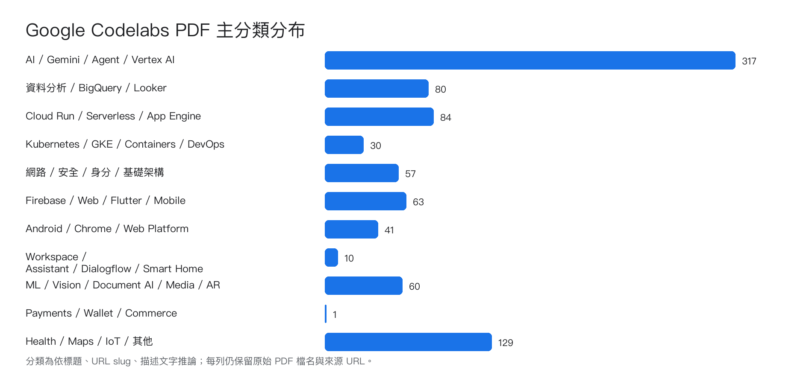
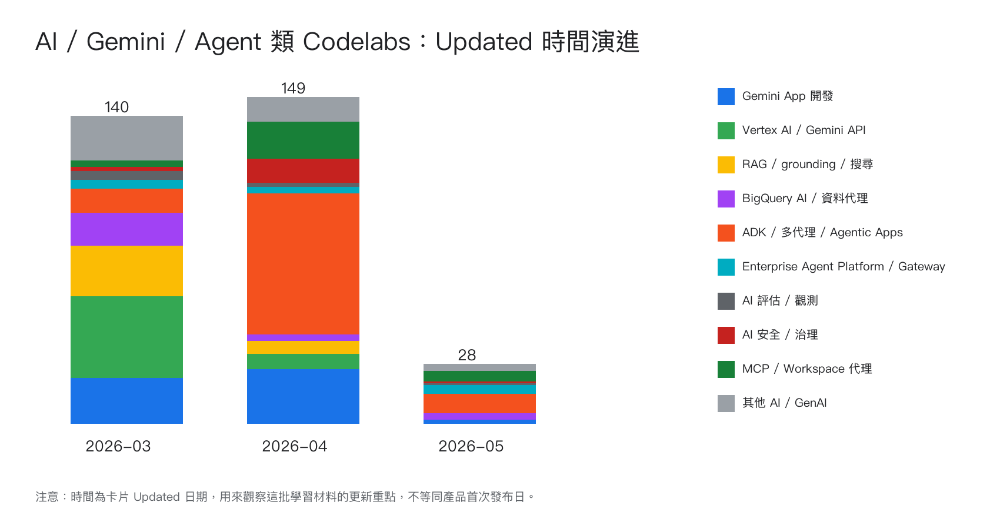

資料範圍：Google Codelabs 首頁 zh-tw 清單共 873 筆；本地 PDF 通過驗證 872 份，未產生 PDF 1 筆。
Updated 日期取自 Google Codelabs 首頁卡片；分類為依標題、URL slug 與描述文字推論。

| 主分類 | 數量 |
|---|---|
| AI / Gemini / Agent / Vertex AI | 317 |
| Health / Maps / IoT / 其他 | 129 |
| Cloud Run / Serverless / App Engine | 84 |
| 資料分析 / BigQuery / Looker | 80 |
| Firebase / Web / Flutter / Mobile | 63 |
| ML / Vision / Document AI / Media / AR | 60 |
| 網路 / 安全 / 身分 / 基礎架構 | 57 |
| Android / Chrome / Web Platform | 41 |
| Kubernetes / GKE / Containers / DevOps | 30 |
| Workspace / Assistant / Dialogflow / Smart Home | 10 |
| Payments / Wallet / Commerce | 1 |
這裡用 Updated 日期觀察這批 AI 教材的更新重點，不等於產品首次發布日。

| 時間區間 | AI 案子數 | 重點判讀 |
|---|---|---|
| 2026-03 | 140 | Gemini / Vertex AI / Cloud Run / BigQuery 生成式 AI 應用與資料基礎集中更新。 |
| 2026-04 | 149 | production-ready AI、ADK、多代理、評估、安全、觀測與治理成為重點。 |
| 2026-05 | 28 | Enterprise Agent Platform、Agent Gateway、MCP、Workspace 代理與事件驅動代理更新較新。 |
| 序 | 主分類 | 階段 | Updated | 時長 | 標題 | PDF 檔名 |
|---|---|---|---|---|---|---|
| 816 | AI / Gemini / Agent / Vertex AI | 初階 | 2026-03-21 | Agent Starter Pack (Go 適用的 ADK) | 816__agent-starter-pack-golang__Agent-Starter-Pack-(Go-適用的-ADK).pdf | |
| 595 | AI / Gemini / Agent / Vertex AI | 初階 | 2026-03-27 | Google Cloud 上的 Gemini 2.5 Pro 簡介 | 595__intro-gemini-25-pro-colab__Google-Cloud-上的-Gemini-2.5-Pro-簡介.pdf | |
| 326 | AI / Gemini / Agent / Vertex AI | 初階 | 2026-03-28 | 程式碼實驗室：Spanner MCP 伺服器 | 326__spanner-mcp-server__程式碼實驗室-Spanner-MCP-伺服器.pdf | |
| 340 | AI / Gemini / Agent / Vertex AI | 初階 | 2026-03-28 | 生成式 AI - 根據關鍵字生成圖片 | 340__image-generation-using-keywords__生成式-AI-根據關鍵字生成圖片.pdf | |
| 343 | AI / Gemini / Agent / Vertex AI | 初階 | 2026-03-28 | 使用 Gemini Code Assist 打造時尚風格 | 343__stylish-with-duet__使用-Gemini-Code-Assist-打造時尚風格.pdf | |
| 347 | AI / Gemini / Agent / Vertex AI | 初階 | 2026-03-28 | 使用 Gemini Code Assist 進行測試簡介 | 347__testing-with-gemini-code-assist__使用-Gemini-Code-Assist-進行測試簡介.pdf | |
| 356 | AI / Gemini / Agent / Vertex AI | 初階 | 2026-03-28 | ADK：從基本概念到多工具代理程式 | 356__multi-tools-ai-agent-adk__ADK-從基本概念到多工具代理程式.pdf | |
| 418 | AI / Gemini / Agent / Vertex AI | 初階 | 2026-03-28 | ADK Gemini Live API 工具包簡介 | 418__intro-to-adk-live__ADK-Gemini-Live-API-工具包簡介.pdf | |
| 421 | AI / Gemini / Agent / Vertex AI | 初階 | 2026-03-28 | 程式碼實驗室：運用 Gemini 排解問題 | 421__troubleshooting-with-gemini__程式碼實驗室-運用-Gemini-排解問題.pdf | |
| 425 | AI / Gemini / Agent / Vertex AI | 初階 | 2026-03-28 | 以 Java 實作 Gemini 函式呼叫，打造確定性生成式 AI | 425__gemini-function-calling-java__以-Java-實作-Gemini-函式呼叫,打造確定性生成式-AI.pdf | |
| 428 | AI / Gemini / Agent / Vertex AI | 初階 | 2026-03-28 | 繪製網站：運用 Gemini 模型，發揮想像力打造網站！ | 428__draw-a-website-gemini__繪製網站-運用-Gemini-模型,發揮想像力打造網站.pdf | |
| 492 | AI / Gemini / Agent / Vertex AI | 初階 | 2026-03-28 | ADK：從基本概念到多工具代理程式 | 492__multi-tool-ai-agent-adk__ADK-從基本概念到多工具代理程式.pdf | |
| 218 | AI / Gemini / Agent / Vertex AI | 初階 | 2026-04-13 | 26 分鐘 | 使用 MCP Toolbox 將 Gemini CLI 連接至 Looker | 218__looker-mcp-toolbox__使用-MCP-Toolbox-將-Gemini-CLI-連接至-Looker.pdf |
| 188 | AI / Gemini / Agent / Vertex AI | 初階 | 2026-04-15 | 在 Google AI Studio 使用 Gemini 進行直覺式程式開發 | 188__vibe-code-with-gemini-in-aistudio__在-Google-AI-Studio-使用-Gemini-進行直覺式程式開發.pdf | |
| 191 | AI / Gemini / Agent / Vertex AI | 初階 | 2026-04-15 | 使用 Antigravity 和 Stitch MCP 將設計轉為程式碼 | 191__design-to-code-with-antigravity-stitch__使用-Antigravity-和-Stitch-MCP-將設計轉為程式碼.pdf | |
| 200 | AI / Gemini / Agent / Vertex AI | 初階 | 2026-04-15 | Gemini CLI 快速指南 | 200__quick-guide-to-gemini-cli__Gemini-CLI-快速指南.pdf | |
| 098 | AI / Gemini / Agent / Vertex AI | 初階 | 2026-04-20 | 使用代理式程式設計工具撰寫 LookML | 098__next26-looker-agentic-lookml__使用代理式程式設計工具撰寫-LookML.pdf | |
| 080 | AI / Gemini / Agent / Vertex AI | 初階 | 2026-04-22 | 運用 Gemini Cloud Assist 最佳化應用程式成本 | 080__next26-gemini-cloud-assist-cost-optimization__運用-Gemini-Cloud-Assist-最佳化應用程式成本.pdf | |
| 088 | AI / Gemini / Agent / Vertex AI | 初階 | 2026-04-22 | 使用 Gemini Cloud Assist 找出及修正應用程式問題 | 088__next26-gemini-cloud-assist-debug-database__使用-Gemini-Cloud-Assist-找出及修正應用程式問題.pdf | |
| 065 | AI / Gemini / Agent / Vertex AI | 初階 | 2026-04-28 | 34 分鐘 | 開始使用 Google Workspace MCP 和 Gemini CLI | 065__google-workspace-mcp-gemini-cli__開始使用-Google-Workspace-MCP-和-Gemini-CLI.pdf |
| 005 | AI / Gemini / Agent / Vertex AI | 初階 | 2026-05-13 | 34 分鐘 | Google Antigravity 中的 Google Workspace MCP 伺服器 | 005__google-workspace-mcp-antigravity__Google-Antigravity-中的-Google-Workspace-MCP-伺服器.pdf |
| 011 | AI / Gemini / Agent / Vertex AI | 初階 | 2026-05-13 | 運用 Gemini 和 Nano Banana 偵測及編輯視覺物件 | 011__gemini-object-detection-and-editing-notebook__運用-Gemini-和-Nano-Banana-偵測及編輯視覺物件.pdf | |
| 664 | AI / Gemini / Agent / Vertex AI | 進階 | 2026-03-21 | 如何使用 Cloud Run 工作微調 LLM | 664__cloud-run-how-to-fine-tune-model-cloud-run-jobs__如何使用-Cloud-Run-工作微調-LLM.pdf | |
| 675 | AI / Gemini / Agent / Vertex AI | 進階 | 2026-03-21 | 55 分鐘 | 使用 Gemini Code Assist 探索及強化 AI 摘要快速部署解決方案 | 675__gemini-code-assist-developer-aisummarization-jss__使用-Gemini-Code-Assist-探索及強化-AI-摘要快速部署解決方案.pdf |
| 679 | AI / Gemini / Agent / Vertex AI | 進階 | 2026-03-21 | 運用 PaLM 和 LangChain4j，以 Java 建立生成式 AI 產生文字 | 679__genai-text-gen-java-palm-langchain4j__運用-PaLM-和-LangChain4j,以-Java-建立生成式-AI-產生文字.pdf | |
| 684 | AI / Gemini / Agent / Vertex AI | 進階 | 2026-03-21 | 46 分鐘 | 透過 Eventarc 事件觸發 Kubernetes 服務 | 684__eventarc-events-gke__透過-Eventarc-事件觸發-Kubernetes-服務.pdf |
| 686 | AI / Gemini / Agent / Vertex AI | 進階 | 2026-03-21 | 運用生成式備用答覆，提高意圖涵蓋率並妥善處理錯誤 | 686__dialogflow-generative-fallback__運用生成式備用答覆,提高意圖涵蓋率並妥善處理錯誤.pdf | |
| 700 | AI / Gemini / Agent / Vertex AI | 進階 | 2026-03-21 | 34 分鐘 | Agentspace Hybrid NEG 至跨雲端自行代管的資料庫 | 700__agentspace-psc-hybrid-neg-crosscloud__Agentspace-Hybrid-NEG-至跨雲端自行代管的資料庫.pdf |
| 714 | AI / Gemini / Agent / Vertex AI | 進階 | 2026-03-21 | 22 分鐘 | 在 BigQuery 使用遠端模型分析電影海報 | 714__bigquery-image-analysis-gemini__在-BigQuery-使用遠端模型分析電影海報.pdf |
| 718 | AI / Gemini / Agent / Vertex AI | 進階 | 2026-03-21 | 45 分鐘 | Conversational Analytics API 簡介 | 718__ca-api-bigquery__Conversational-Analytics-API-簡介.pdf |
| 722 | AI / Gemini / Agent / Vertex AI | 進階 | 2026-03-21 | 書架分析：使用 Gemini 建構 Java Cloud Run 應用程式，將 BigQuery 資料傳送至網頁 | 722__bookshelf-duetai-web-cloudrun__書架分析-使用-Gemini-建構-Java-Cloud-Run-應用程式,將-BigQuery-資料傳送至網頁.pdf | |
| 734 | AI / Gemini / Agent / Vertex AI | 進階 | 2026-03-21 | JavaScript 生成式 AI 應用程式的實務觀測技巧 | 734__gen-ai-o11y-for-devs-gen-ai-o11y-nodejs__JavaScript-生成式-AI-應用程式的實務觀測技巧.pdf | |
| 737 | AI / Gemini / Agent / Vertex AI | 進階 | 2026-03-21 | Vertex AI：匯出及部署 BigQuery 機器學習模型，以進行預測 | 737__bqml-vertex-prediction__Vertex-AI-匯出及部署-BigQuery-機器學習模型,以進行預測.pdf | |
| 755 | AI / Gemini / Agent / Vertex AI | 進階 | 2026-03-21 | 在 GKE 使用 Gemma 和 Gemini 建構混合式 AI 對話應用程式 | 755__gke-build-hybrid-ai-chat-app-on-gke__在-GKE-使用-Gemma-和-Gemini-建構混合式-AI-對話應用程式.pdf | |
| 757 | AI / Gemini / Agent / Vertex AI | 進階 | 2026-03-21 | 書架分析：運用 Gemini，透過 BigQuery 和生成式 AI 建構 SQL 應用程式 | 757__bookshelf-duetai-bq-sql__書架分析-運用-Gemini,透過-BigQuery-和生成式-AI-建構-SQL-應用程式.pdf | |
| 763 | AI / Gemini / Agent / Vertex AI | 進階 | 2026-03-21 | 在 AI 時代建構應用程式 | 763__building-applications-in-the-ai-era__在-AI-時代建構應用程式.pdf | |
| 779 | AI / Gemini / Agent / Vertex AI | 進階 | 2026-03-21 | 書架建構工具：使用 Gemini 為 Gemini 應用程式建構 Java Cloud Function | 779__bookshelf-duetai-bigquery__書架建構工具-使用-Gemini-為-Gemini-應用程式建構-Java-Cloud-Function.pdf | |
| 783 | AI / Gemini / Agent / Vertex AI | 進階 | 2026-03-21 | 運用 Vertex AI 建構 Google 等級的搜尋系統 | 783__build-google-quality-rag__運用-Vertex-AI-建構-Google-等級的搜尋系統.pdf | |
| 819 | AI / Gemini / Agent / Vertex AI | 進階 | 2026-03-21 | Python 生成式 AI 應用程式的實務觀測技巧 | 819__gen-ai-o11y-for-devs-gen-ai-o11y-python__Python-生成式-AI-應用程式的實務觀測技巧.pdf | |
| 826 | AI / Gemini / Agent / Vertex AI | 進階 | 2026-03-21 | 使用 Streamlit、Gemini Pro、Vertex AI 和 BigQuery，建構及部署飲食規劃師 AI 代理 | 826__ai-diet-planner__使用-Streamlit、Gemini-Pro、Vertex-AI-和-BigQuery,建構及部署飲食規劃師-AI-代理.pdf | |
| 829 | AI / Gemini / Agent / Vertex AI | 進階 | 2026-03-21 | 1 小時 16 分鐘 | 運用生成式 AI 和 Cloud Run 建構測驗產生器 | 829__cloud-genai__運用生成式-AI-和-Cloud-Run-建構測驗產生器.pdf |
| 833 | AI / Gemini / Agent / Vertex AI | 進階 | 2026-03-21 | 1 小時 31 分鐘 | 使用 Vertex AI 建立 AutoML 預測模型 | 833__automl-forecasting-with-vertex-ai__使用-Vertex-AI-建立-AutoML-預測模型.pdf |
| 851 | AI / Gemini / Agent / Vertex AI | 進階 | 2026-03-21 | 將 Dialogflow 與 Google 日曆整合，瞭解履行作業 | 851__chatbots-dialogflow-fulfillment__將-Dialogflow-與-Google-日曆整合,瞭解履行作業.pdf | |
| 866 | AI / Gemini / Agent / Vertex AI | 進階 | 2026-03-21 | 程式碼實驗室：在 BigQuery 使用 AI 代理準備資料 | 866__bigquery-data-preparation-ai-agents__程式碼實驗室-在-BigQuery-使用-AI-代理準備資料.pdf | |
| 504 | AI / Gemini / Agent / Vertex AI | 進階 | 2026-03-27 | 程式碼實驗室：使用 Neo4j 和 Vertex AI 建構電影推薦聊天機器人 | 504__neo4j-vertexai-movie-recommender-python__程式碼實驗室-使用-Neo4j-和-Vertex-AI-建構電影推薦聊天機器人.pdf | |
| 508 | AI / Gemini / Agent / Vertex AI | 進階 | 2026-03-27 | 運用 Spanner 和 Vertex AI 執行相似度搜尋 | 508__similary-search-spanner-vertex__運用-Spanner-和-Vertex-AI-執行相似度搜尋.pdf | |
| 519 | AI / Gemini / Agent / Vertex AI | 進階 | 2026-03-27 | 打造第一個 AI 幫手：新手研討會 | 519__companion-adk-beginner-instructions__打造第一個-AI-幫手-新手研討會.pdf | |
| 528 | AI / Gemini / Agent / Vertex AI | 進階 | 2026-03-27 | Vertex AI：使用 TensorFlow 進行多工作人員訓練和移轉學習 | 528__vertex_multiworker_training__Vertex-AI-使用-TensorFlow-進行多工作人員訓練和移轉學習.pdf | |
| 546 | AI / Gemini / Agent / Vertex AI | 進階 | 2026-03-27 | 運用 Spanner、Vector Search 和 Gemini 1.0 Pro 建構專利搜尋應用程式！ | 546__patent-search-spanner-gemini__運用-Spanner、Vector-Search-和-Gemini-1.0-Pro-建構專利搜尋應用程式.pdf | |
| 548 | AI / Gemini / Agent / Vertex AI | 進階 | 2026-03-27 | 使用 Vertex AI PaLM API 的文字摘要方法 | 548__text-summ-large-docs-stuffing__使用-Vertex-AI-PaLM-API-的文字摘要方法.pdf | |
| 550 | AI / Gemini / Agent / Vertex AI | 進階 | 2026-03-27 | 1 小時 24 分鐘 | Vertex AI：分散式超參數調整 | 550__vertex-training-200__Vertex-AI-分散式超參數調整.pdf |
| 553 | AI / Gemini / Agent / Vertex AI | 進階 | 2026-03-27 | 程式碼實驗室 - 使用 Firestore、Vector Search、Langchain 和 Gemini (Python 版本) 建構情境式瑜珈姿勢推薦應用程式 | 553__yoga-pose-firestore-vectorsearch-python__程式碼實驗室-使用-Firestore、Vector-Search、Langchain-和-Gemini-(Python-版本)-建構情境式瑜珈姿勢推薦應用程式.pdf | |
| 555 | AI / Gemini / Agent / Vertex AI | 進階 | 2026-03-27 | 簡化主要資料管理作業：運用生成式 AI 比對及合併資料！ | 555__mdm-with-gemini__簡化主要資料管理作業-運用生成式-AI-比對及合併資料.pdf | |
| 558 | AI / Gemini / Agent / Vertex AI | 進階 | 2026-03-27 | 運用 BigQuery SQL 和 Vertex AI 取得生成式洞察資料 | 558__generative-insights-sqlonly__運用-BigQuery-SQL-和-Vertex-AI-取得生成式洞察資料.pdf | |
| 559 | AI / Gemini / Agent / Vertex AI | 進階 | 2026-03-27 | GitLab - 使用生成式 AI 自動執行程式碼審查作業 | 559__genai-for-dev-gitlab-code-review__GitLab-使用生成式-AI-自動執行程式碼審查作業.pdf | |
| 560 | AI / Gemini / Agent / Vertex AI | 進階 | 2026-03-27 | 如何在 Cloud Run 部署 Gemini 技術支援的即時通訊應用程式 | 560__how-to-deploy-gemini-powered-chat-app-cloud-run__如何在-Cloud-Run-部署-Gemini-技術支援的即時通訊應用程式.pdf | |
| 562 | AI / Gemini / Agent / Vertex AI | 進階 | 2026-03-27 | 透過 Vertex AI PaLM API，使用 BigQuery ML 建立僅限 SQL 的 LLM | 562__llm-codesummarizer-sqlonly__透過-Vertex-AI-PaLM-API,使用-BigQuery-ML-建立僅限-SQL-的-LLM.pdf | |
| 570 | AI / Gemini / Agent / Vertex AI | 進階 | 2026-03-27 | 使用 BigQuery 遠端函式，在 SQL 查詢中向 Vertex AI 圖像問題回答 (VQA) 提問 | 570__how-to-bigquery-remote-functions-imagen-vqa__使用-BigQuery-遠端函式,在-SQL-查詢中向-Vertex-AI-圖像問題回答-(VQA)-提問.pdf | |
| 571 | AI / Gemini / Agent / Vertex AI | 進階 | 2026-03-27 | 運用 TensorFlow Agents 和 Flutter 打造桌遊 | 571__tfagents-flutter__運用-TensorFlow-Agents-和-Flutter-打造桌遊.pdf | |
| 578 | AI / Gemini / Agent / Vertex AI | 進階 | 2026-03-27 | 運用 AlloyDB、Vector Search 和 Vertex AI 建構專利搜尋應用程式！ | 578__patent-search-alloydb-gemini__運用-AlloyDB、Vector-Search-和-Vertex-AI-建構專利搜尋應用程式.pdf | |
| 582 | AI / Gemini / Agent / Vertex AI | 進階 | 2026-03-27 | 15 分鐘 | 將 Google-ADK 代理程式部署至 Cloud Run | 582__deploy-google-adk-agent-to-cloud-run__將-Google-ADK-代理程式部署至-Cloud-Run.pdf |
| 586 | AI / Gemini / Agent / Vertex AI | 進階 | 2026-03-27 | 54 分鐘 | Vertex AI：搭配 Sklearn 使用自訂預測處理常式，預先處理及後續處理資料以執行預測 | 586__vertex-cpr-sklearn__Vertex-AI-搭配-Sklearn-使用自訂預測處理常式,預先處理及後續處理資料以執行預測.pdf |
| 587 | AI / Gemini / Agent / Vertex AI | 進階 | 2026-03-27 | 運用 AlloyDB 最新的向量搜尋功能，控管 RAG 品質！ | 587__patent-search-rag-recall__運用-AlloyDB-最新的向量搜尋功能,控管-RAG-品質.pdf | |
| 590 | AI / Gemini / Agent / Vertex AI | 進階 | 2026-03-27 | Vertex AI：使用 Sklearn 的自訂預測處理常式，預先處理及後續處理預測資料 | 590__vertex-cpr-sklearn__Vertex-AI-使用-Sklearn-的自訂預測處理常式,預先處理及後續處理預測資料.pdf | |
| 604 | AI / Gemini / Agent / Vertex AI | 進階 | 2026-03-27 | 運用 Gemini Code Assist 加速開發 | 604__genai-for-dev-gca-dev-use-cases__運用-Gemini-Code-Assist-加速開發.pdf | |
| 607 | AI / Gemini / Agent / Vertex AI | 進階 | 2026-03-27 | 微調大型語言模型：Vertex AI 如何讓 LLM 更上一層樓 | 607__llm-finetuning-supervised__微調大型語言模型-Vertex-AI-如何讓-LLM-更上一層樓.pdf | |
| 613 | AI / Gemini / Agent / Vertex AI | 進階 | 2026-03-27 | Vertex AI Vision Motion Filter | 613__vertex-ai-vision-motion-filter__Vertex-AI-Vision-Motion-Filter.pdf | |
| 614 | AI / Gemini / Agent / Vertex AI | 進階 | 2026-03-27 | 使用 Vertex AI 和 Svelte Kit 的文字摘要應用程式 | 614__textsummarizer-llm-vertex-svelte__使用-Vertex-AI-和-Svelte-Kit-的文字摘要應用程式.pdf | |
| 618 | AI / Gemini / Agent / Vertex AI | 進階 | 2026-03-27 | 使用 Eventarc 和 Cloud Run functions，透過 Cloud Storage 觸發事件處理作業 | 618__triggering-cloud-functions-from-cloud-storage__使用-Eventarc-和-Cloud-Run-functions,透過-Cloud-Storage-觸發事件處理作業.pdf | |
| 625 | AI / Gemini / Agent / Vertex AI | 進階 | 2026-03-27 | 45 分鐘 | 使用 Vertex AI Agent Builder 建構 AI 虛擬服務專員 | 625__devsite-codelabs-building-ai-agents-vertexai__使用-Vertex-AI-Agent-Builder-建構-AI-虛擬服務專員.pdf |
| 626 | AI / Gemini / Agent / Vertex AI | 進階 | 2026-03-27 | 運用 Firestore、Vector Search 和 Gemini 2.0，打造可依情境推薦瑜珈體式的應用程式 (Java 版本)！ | 626__smart-yoga-pose-search-firestore__運用-Firestore、Vector-Search-和-Gemini-2.0,打造可依情境推薦瑜珈體式的應用程式-(Java-版本).pdf | |
| 630 | AI / Gemini / Agent / Vertex AI | 進階 | 2026-03-27 | 使用 Cloud Run、Video Intelligence API 和 Vertex AI，建立影片場景影像說明服務 | 630__how-to-create-cloud-run-service-for-describing-scenes-in-a-video__使用-Cloud-Run、Video-Intelligence-API-和-Vertex-AI,建立影片場景影像說明服務.pdf | |
| 631 | AI / Gemini / Agent / Vertex AI | 進階 | 2026-03-27 | 運用 AlloyDB 和 Vertex AI Agent Builder 打造智慧購物助理 - 第 1 部分 | 631__smart-shop-agent-alloydb__運用-AlloyDB-和-Vertex-AI-Agent-Builder-打造智慧購物助理-第-1-部分.pdf | |
| 634 | AI / Gemini / Agent / Vertex AI | 進階 | 2026-03-27 | Vertex AI Vision 排隊偵測應用程式 | 634__vertex-ai-vision-queue-detection__Vertex-AI-Vision-排隊偵測應用程式.pdf | |
| 639 | AI / Gemini / Agent / Vertex AI | 進階 | 2026-03-27 | 透過 Cloud Run 服務，在 Cloud Storage 使用 Vertex AI Search 搜尋 PDF (非結構化資料) | 639__how-to-query-vertex-ai-search-cloud-run-service__透過-Cloud-Run-服務,在-Cloud-Storage-使用-Vertex-AI-Search-搜尋-PDF-(非結構化資料).pdf | |
| 641 | AI / Gemini / Agent / Vertex AI | 進階 | 2026-03-27 | 如何透過 Vertex AI 生成圖片並上傳至 Google Ads | 641__generate_creatives_google_ads__如何透過-Vertex-AI-生成圖片並上傳至-Google-Ads.pdf | |
| 642 | AI / Gemini / Agent / Vertex AI | 進階 | 2026-03-27 | 程式 | 在 Cloud Run 部署 LangChain 代理 | 642__deploy-lanchain-agent-on-cloud-run__在-Cloud-Run-部署-LangChain-代理.pdf |
| 650 | AI / Gemini / Agent / Vertex AI | 進階 | 2026-03-27 | FraudFinder：運用 Vertex AI 和 BigQuery，將原始資料轉換為 AI。 | 650__fraudfinder-bqml__FraudFinder-運用-Vertex-AI-和-BigQuery,將原始資料轉換為-AI。.pdf | |
| 321 | AI / Gemini / Agent / Vertex AI | 進階 | 2026-03-28 | Vertex AI：在同一個 VM 託管模型，以便預測結果 | 321__vertex-cohost-prediction__Vertex-AI-在同一個-VM-託管模型,以便預測結果.pdf | |
| 325 | AI / Gemini / Agent / Vertex AI | 進階 | 2026-03-28 | 使用 Spring Resource 抽象層存取 Cloud Storage 檔案 | 325__spring-cloud-gcp-gcs__使用-Spring-Resource-抽象層存取-Cloud-Storage-檔案.pdf | |
| 329 | AI / Gemini / Agent / Vertex AI | 進階 | 2026-03-28 | Cloud 函式：使用 PaLM Vertex AI API 和 Google Cloud Storage 彙整內容 | 329__llm-summarizer-palm-gcs__Cloud-函式-使用-PaLM-Vertex-AI-API-和-Google-Cloud-Storage-彙整內容.pdf | |
| 334 | AI / Gemini / Agent / Vertex AI | 進階 | 2026-03-28 | 在 Cloud Run 運用 Gemini + MCP，將自然語言轉換為實際 Google Cloud 動作 | 334__gcp-actions-gemini-mcp-cloudrun__在-Cloud-Run-運用-Gemini-MCP,將自然語言轉換為實際-Google-Cloud-動作.pdf | |
| 335 | AI / Gemini / Agent / Vertex AI | 進階 | 2026-03-28 | 建構 Gemini 技術輔助的 YouTube 摘要工具 | 335__devsite-codelabs-build-youtube-summarizer__建構-Gemini-技術輔助的-YouTube-摘要工具.pdf | |
| 342 | AI / Gemini / Agent / Vertex AI | 進階 | 2026-03-28 | 使用 Gemini (Python) 在雲端建構及部署多模態助理 | 342__devsite-codelabs-gemini-multimodal-chat-assistant-python__使用-Gemini-(Python)-在雲端建構及部署多模態助理.pdf | |
| 353 | AI / Gemini / Agent / Vertex AI | 進階 | 2026-03-28 | 從原型設計到正式環境：使用 Vertex AI 訓練自訂模型 | 353__vertex-p2p-training__從原型設計到正式環境-使用-Vertex-AI-訓練自訂模型.pdf | |
| 354 | AI / Gemini / Agent / Vertex AI | 進階 | 2026-03-28 | 使用 Gemini Pro 建構採用多模態 RAG 的問答應用程式 | 354__multimodal-rag-gemini__使用-Gemini-Pro-建構採用多模態-RAG-的問答應用程式.pdf | |
| 357 | AI / Gemini / Agent / Vertex AI | 進階 | 2026-03-28 | GitHub - 使用生成式 AI 自動執行程式碼審查作業 | 357__genai-for-dev-github-code-review__GitHub-使用生成式-AI-自動執行程式碼審查作業.pdf | |
| 360 | AI / Gemini / Agent / Vertex AI | 進階 | 2026-03-28 | 充分運用實驗：透過 Vertex AI 管理機器學習實驗 | 360__vertex_experiments_pipelines_intro__充分運用實驗-透過-Vertex-AI-管理機器學習實驗.pdf | |
| 361 | AI / Gemini / Agent / Vertex AI | 進階 | 2026-03-28 | Vertex AI：使用自動封裝功能，在 Vertex AI Training 透過 Hugging Face 微調 BERT | 361__vertex-training-autopkg__Vertex-AI-使用自動封裝功能,在-Vertex-AI-Training-透過-Hugging-Face-微調-BERT.pdf | |
| 362 | AI / Gemini / Agent / Vertex AI | 進階 | 2026-03-28 | 39 分鐘 | Vertex AI：訓練及提供自訂模型 | 362__vertex_custom_training_prediction__Vertex-AI-訓練及提供自訂模型.pdf |
| 369 | AI / Gemini / Agent / Vertex AI | 進階 | 2026-03-28 | 30 分鐘 | 程式碼研究室：Cloud Run Day 2025 - Setup | 369__first-adk-agent-on-cloud-run__程式碼研究室-Cloud-Run-Day-2025-Setup.pdf |
| 375 | AI / Gemini / Agent / Vertex AI | 進階 | 2026-03-28 | 程式碼研究室：透過 Vertex AI Conversation 建構生成式即時通訊應用程式 | 375__vertex-ai-conversation__程式碼研究室-透過-Vertex-AI-Conversation-建構生成式即時通訊應用程式.pdf | |
| 381 | AI / Gemini / Agent / Vertex AI | 進階 | 2026-03-28 | 從原型設計到正式環境：在 Vertex AI 執行分散式訓練 | 381__vertex-p2p-distributed__從原型設計到正式環境-在-Vertex-AI-執行分散式訓練.pdf | |
| 382 | AI / Gemini / Agent / Vertex AI | 進階 | 2026-03-28 | 運用 MCP 伺服器，從 Gemini CLI 和 Antigravity 將應用程式部署至 Cloud Run | 382__deploy-to-cloud-run-using-oss-mcp-server__運用-MCP-伺服器,從-Gemini-CLI-和-Antigravity-將應用程式部署至-Cloud-Run.pdf | |
| 386 | AI / Gemini / Agent / Vertex AI | 進階 | 2026-03-28 | Vertex AI Vision Occupancy Analytics 應用程式 (含事件管理功能) | 386__vertex-ai-event-management__Vertex-AI-Vision-Occupancy-Analytics-應用程式-(含事件管理功能).pdf | |
| 388 | AI / Gemini / Agent / Vertex AI | 進階 | 2026-03-28 | 使用 What-If Tool 和 Vertex AI 建構財務機器學習模型 | 388__vertex-xgb-wit__使用-What-If-Tool-和-Vertex-AI-建構財務機器學習模型.pdf | |
| 391 | AI / Gemini / Agent / Vertex AI | 進階 | 2026-03-28 | 使用 Spanner 和 Vertex AI Imagen API 將資料轉換為生成式 AI | 391__springboot-posegenerator-imagen__使用-Spanner-和-Vertex-AI-Imagen-API-將資料轉換為生成式-AI.pdf | |
| 400 | AI / Gemini / Agent / Vertex AI | 進階 | 2026-03-28 | 在 Cloud Run 使用 PaLM API 的即時通訊應用程式 | 400__llm-chat-app-flask__在-Cloud-Run-使用-PaLM-API-的即時通訊應用程式.pdf | |
| 401 | AI / Gemini / Agent / Vertex AI | 進階 | 2026-03-28 | 程式碼實驗室：使用 Gemini 以 JavaScript 建構 Chrome 擴充功能 | 401__create-chrome-extension-duetai__程式碼實驗室-使用-Gemini-以-JavaScript-建構-Chrome-擴充功能.pdf | |
| 426 | AI / Gemini / Agent / Vertex AI | 進階 | 2026-03-28 | 如何使用 Cloud Run functions 和 Gemini，為上傳至 Cloud Storage bucket 的文字檔建立摘要 | 426__how-to-gemini-text-summarization-cloud-run-functions__如何使用-Cloud-Run-functions-和-Gemini,為上傳至-Cloud-Storage-bucket-的文字檔建立摘要.pdf | |
| 437 | AI / Gemini / Agent / Vertex AI | 進階 | 2026-03-28 | 透過 Vertex AI 取得預先訓練的 TensorFlow 圖像模型預測結果 | 437__vertex-image-deploy__透過-Vertex-AI-取得預先訓練的-TensorFlow-圖像模型預測結果.pdf | |
| 440 | AI / Gemini / Agent / Vertex AI | 進階 | 2026-03-28 | (RAG)41 分鐘 | 使用 Google Gemini 檔案搜尋工具進行檢索增強生成 | 440__gemini-file-search-for-rag__使用-Google-Gemini-檔案搜尋工具進行檢索增強生成.pdf |
| 442 | AI / Gemini / Agent / Vertex AI | 進階 | 2026-03-28 | 運用 Vertex AI 和 BigQuery 機器學習預測時間序列 | 442__time-series-forecasting-with-cloud-ai-platform__運用-Vertex-AI-和-BigQuery-機器學習預測時間序列.pdf | |
| 450 | AI / Gemini / Agent / Vertex AI | 進階 | 2026-03-28 | 如何搭配使用 Cloud Run 與 Gemini 函式呼叫功能 | 450__how-to-cloud-run-gemini-function-calling__如何搭配使用-Cloud-Run-與-Gemini-函式呼叫功能.pdf | |
| 457 | AI / Gemini / Agent / Vertex AI | 進階 | 2026-03-28 | 使用 Vertex AI AutoML 預測電影評分 | 457__moviescore-prediction-vertexai__使用-Vertex-AI-AutoML-預測電影評分.pdf | |
| 460 | AI / Gemini / Agent / Vertex AI | 進階 | 2026-03-28 | 程式碼研究室 - 使用 Firestore、Vector Search、Langchain 和 Gemini 建構情境式瑜珈姿勢推薦應用程式 (Node.js 版本) | 460__yoga-pose-firestore-vectorsearch-nodejs__程式碼研究室-使用-Firestore、Vector-Search、Langchain-和-Gemini-建構情境式瑜珈姿勢推薦應用程式-(Node.js-版本.pdf | |
| 471 | AI / Gemini / Agent / Vertex AI | 進階 | 2026-03-28 | 程式碼實驗室：運用 Gemini 加速以測試為導向的開發作業 | 471__tdd-ruby-app-duetai__程式碼實驗室-運用-Gemini-加速以測試為導向的開發作業.pdf | |
| 479 | AI / Gemini / Agent / Vertex AI | 進階 | 2026-03-28 | Vertex AI Workbench：使用 BigQuery 資料訓練 TensorFlow 模型 | 479__vertex-workbench-intro__Vertex-AI-Workbench-使用-BigQuery-資料訓練-TensorFlow-模型.pdf | |
| 481 | AI / Gemini / Agent / Vertex AI | 進階 | 2026-03-28 | Vertex AI Vision 交通監控應用程式 | 481__vertex-ai-vision-traffic-monitoring__Vertex-AI-Vision-交通監控應用程式.pdf | |
| 483 | AI / Gemini / Agent / Vertex AI | 進階 | 2026-03-28 | Vertex AI 影片分析專用生成式 AI | 483__youtube-analytics-palm-llm__Vertex-AI-影片分析專用生成式-AI.pdf | |
| 485 | AI / Gemini / Agent / Vertex AI | 進階 | 2026-03-28 | 將 Magento 與 Cloud Spanner 整合 | 485__magento-cloud-spanner__將-Magento-與-Cloud-Spanner-整合.pdf | |
| 491 | AI / Gemini / Agent / Vertex AI | 進階 | 2026-03-28 | 運用 Dataplex 和生成式 AI 以程式輔助方式確保資料品質 | 491__programmatic-dq__運用-Dataplex-和生成式-AI-以程式輔助方式確保資料品質.pdf | |
| 318 | AI / Gemini / Agent / Vertex AI | 進階 | 2026-03-30 | 使用 Java 版 Agent Development Kit (ADK) 建構 AI 代理 | 318__adk-java-getting-started__使用-Java-版-Agent-Development-Kit-(ADK)-建構-AI-代理.pdf | |
| 235 | AI / Gemini / Agent / Vertex AI | 進階 | 2026-04-09 | 在 Cloud Run 建構及部署採用 MCP 伺服器的 ADK 代理 | 235__cloud-run-use-mcp-server-on-cloud-run-with-an-adk-agent__在-Cloud-Run-建構及部署採用-MCP-伺服器的-ADK-代理.pdf | |
| 262 | AI / Gemini / Agent / Vertex AI | 進階 | 2026-04-09 | 如何在 Gemini 使用函式呼叫與 API 互動 | 262__gemini-function-calling__如何在-Gemini-使用函式呼叫與-API-互動.pdf | |
| 278 | AI / Gemini / Agent / Vertex AI | 進階 | 2026-04-09 | Apps Script：運用 Gemini CLI 和 MCP 伺服器進行直覺式程式開發，打造 Gmail 外掛程式 | 278__devsite-codelabs-apps-script-vibe-code-gmail-add-on-gemini-cli-mcp-servers__Apps-Script-運用-Gemini-CLI-和-MCP-伺服器進行直覺式程式開發,打造-Gmail-外掛程式.pdf | |
| 280 | AI / Gemini / Agent / Vertex AI | 進階 | 2026-04-09 | 運用 AlloyDB 和 Vertex AI Agent Builder 打造智慧購物助理 - 第 2 部分 | 280__smart-shop-agent-vertexai__運用-AlloyDB-和-Vertex-AI-Agent-Builder-打造智慧購物助理-第-2-部分.pdf | |
| 282 | AI / Gemini / Agent / Vertex AI | 進階 | 2026-04-09 | 運用 AlloyDB 和 Vertex AI Agent Builder 打造專利搜尋助理 - 第 2 部分 | 282__smart-patent-agent-vertexai__運用-AlloyDB-和-Vertex-AI-Agent-Builder-打造專利搜尋助理-第-2-部分.pdf | |
| 288 | AI / Gemini / Agent / Vertex AI | 進階 | 2026-04-09 | 就地生成 LLM 洞察：運用 BigQuery 和 Gemini 分析結構化與非結構化資料 | 288__inplace-llm-bq-gemini__就地生成-LLM-洞察-運用-BigQuery-和-Gemini-分析結構化與非結構化資料.pdf | |
| 292 | AI / Gemini / Agent / Vertex AI | 進階 | 2026-04-09 | 運用 ADK、AlloyDB 和 Gemini，以 Java 建構功能強大的 E2E AI 代理程式應用程式！ | 292__patent-search-java-adk__運用-ADK、AlloyDB-和-Gemini,以-Java-建構功能強大的-E2E-AI-代理程式應用程式.pdf | |
| 296 | AI / Gemini / Agent / Vertex AI | 進階 | 2026-04-09 | 如何在 Cloud Run worker 集區中代管單輪 ADK 代理 | 296__cloud-run-host-adk-agent-worker-pool-single-turn__如何在-Cloud-Run-worker-集區中代管單輪-ADK-代理.pdf | |
| 297 | AI / Gemini / Agent / Vertex AI | 進階 | 2026-04-09 | 如何使用 Cloud Storage、Firestore 和 Cloud Run 上傳及提供圖片 | 297__cloud-run-upload-serve-images-storage-firestore-fastapi__如何使用-Cloud-Storage、Firestore-和-Cloud-Run-上傳及提供圖片.pdf | |
| 299 | AI / Gemini / Agent / Vertex AI | 進階 | 2026-04-09 | 實驗室 3：從原型到正式環境 - 將 ADK 代理部署至搭載 GPU 的 Cloud Run | 299__cloud-run-how-to-connect-adk-to-deployed-cloud-run-llm__實驗室-3-從原型到正式環境-將-ADK-代理部署至搭載-GPU-的-Cloud-Run.pdf | |
| 226 | AI / Gemini / Agent / Vertex AI | 進階 | 2026-04-10 | 如何使用 AI 代理程式技能 (搭配 Gemini CLI 和 Firebase 適用的 Agent Skills) | 226__gemini-cli-how-to-create-agent-skills-for-gemini-cli__如何使用-AI-代理程式技能-(搭配-Gemini-CLI-和-Firebase-適用的-Agent-Skills).pdf | |
| 213 | AI / Gemini / Agent / Vertex AI | 進階 | 2026-04-13 | 45 分鐘 | BigQuery 對話式數據分析簡介 | 213__ca-in-bigquery__BigQuery-對話式數據分析簡介.pdf |
| 215 | AI / Gemini / Agent / Vertex AI | 進階 | 2026-04-13 | 在 Cloud Run 使用 vLLM 提供 Gemma 3 服務 | 215__devsite-codelabs-serve-gemma3-with-vllm-on-cloud-run__在-Cloud-Run-使用-vLLM-提供-Gemma-3-服務.pdf | |
| 217 | AI / Gemini / Agent / Vertex AI | 進階 | 2026-04-13 | 使用 BigQuery 和 Google 地圖的 MCP 伺服器，建構 Location Intelligence ADK 代理 | 217__adk-mcp-bigquery-maps__使用-BigQuery-和-Google-地圖的-MCP-伺服器,建構-Location-Intelligence-ADK-代理.pdf | |
| 221 | AI / Gemini / Agent / Vertex AI | 進階 | 2026-04-13 | 使用 vLLM 在 Cloud Run 上，透過 RTX 6000 Pro GPU 執行 Gemma 4 模型推論 | 221__cloud-run-cloud-run-gpu-rtx-pro-6000-gemma4-vllm__使用-vLLM-在-Cloud-Run-上,透過-RTX-6000-Pro-GPU-執行-Gemma-4-模型推論.pdf | |
| 167 | AI / Gemini / Agent / Vertex AI | 進階 | 2026-04-15 | 56 分鐘 | 在 Antigravity 中使用 agents.md 和 skills.md 建構 Autonomous Developer Pipelines | 167__autonomous-ai-developer-pipelines-antigravity__在-Antigravity-中使用-agents.md-和-skills.md-建構-Autonomous-Developer-Pipelines.pdf |
| 168 | AI / Gemini / Agent / Vertex AI | 進階 | 2026-04-15 | 29 分鐘 | 使用 ADK 和 Google 地圖基礎建構行程規劃代理 | 168__next26-maps-grounding__使用-ADK-和-Google-地圖基礎建構行程規劃代理.pdf |
| 176 | AI / Gemini / Agent / Vertex AI | 進階 | 2026-04-15 | 運用 Gemini 3 Flash 和 Cloud SQL 建構即時剩餘物資引擎 | 176__gemini-3-on-cloudsql-sustainability-app__運用-Gemini-3-Flash-和-Cloud-SQL-建構即時剩餘物資引擎.pdf | |
| 189 | AI / Gemini / Agent / Vertex AI | 進階 | 2026-04-15 | 1 小時 15 分鐘 | 開始使用 Gemini CLI 擴充功能 | 189__getting-started-gemini-cli-extensions__開始使用-Gemini-CLI-擴充功能.pdf |
| 192 | AI / Gemini / Agent / Vertex AI | 進階 | 2026-04-15 | 運用 Cloud Run 工作、BigQuery 和 Gemini，擴充 Video Insights Pipeline | 192__video-insights-with-cloud-run-jobs__運用-Cloud-Run-工作、BigQuery-和-Gemini,擴充-Video-Insights-Pipeline.pdf | |
| 195 | AI / Gemini / Agent / Vertex AI | 進階 | 2026-04-15 | 使用 BigQuery Agent Analytics 外掛程式分析 ADK 代理執行作業 | 195__adk-bigquery-agent-analytics-plugin__使用-BigQuery-Agent-Analytics-外掛程式分析-ADK-代理執行作業.pdf | |
| 196 | AI / Gemini / Agent / Vertex AI | 進階 | 2026-04-15 | 1 小時 | 如何使用 Gemini CLI 和 Go 建構 MCP 伺服器 | 196__cloud-gemini-cli-mcp-go__如何使用-Gemini-CLI-和-Go-建構-MCP-伺服器.pdf |
| 201 | AI / Gemini / Agent / Vertex AI | 進階 | 2026-04-15 | 運用 Gemini 3 Flash 和 AlloyDB 建構即時剩餘物資引擎 | 201__gemini-3-flash-on-alloydb-sustainability-app__運用-Gemini-3-Flash-和-AlloyDB-建構即時剩餘物資引擎.pdf | |
| 207 | AI / Gemini / Agent / Vertex AI | 進階 | 2026-04-15 | Gemini CLI 深度探索 | 207__gemini-cli-deep-dive__Gemini-CLI-深度探索.pdf | |
| 211 | AI / Gemini / Agent / Vertex AI | 進階 | 2026-04-15 | 6 分鐘 | 使用 Gemini CLI、BrowserMCP 和 Playwright 自動執行 UI 測試 | 211__agentic-ui-testing__使用-Gemini-CLI、BrowserMCP-和-Playwright-自動執行-UI-測試.pdf |
| 127 | AI / Gemini / Agent / Vertex AI | 進階 | 2026-04-16 | 30 分鐘 | 使用 Vertex AI Search 建構無程式碼的通用員工服務台應用程式 | 127__next26-universal-employee-helpdesk__使用-Vertex-AI-Search-建構無程式碼的通用員工服務台應用程式.pdf |
| 128 | AI / Gemini / Agent / Vertex AI | 進階 | 2026-04-16 | 47 分鐘 | 使用 Gemini 和 Cloud SQL pgvector，以視覺化方式呈現 AI 助理記憶體 | 128__next26-postgres-visual-memory-agent__使用-Gemini-和-Cloud-SQL-pgvector,以視覺化方式呈現-AI-助理記憶體.pdf |
| 130 | AI / Gemini / Agent / Vertex AI | 進階 | 2026-04-16 | 1 小時 | 使用 BigQuery 和 ADK 建構事件驅動資料代理程式 | 130__next26-bigquery-adk-event-driven-agents__使用-BigQuery-和-ADK-建構事件驅動資料代理程式.pdf |
| 131 | AI / Gemini / Agent / Vertex AI | 進階 | 2026-04-16 | 57 分鐘 | 使用 Eventarc、Cloud Run 和 ADK 建構事件導向的 AI 代理 | 131__next26-eventarc-ai-agents__使用-Eventarc、Cloud-Run-和-ADK-建構事件導向的-AI-代理.pdf |
| 133 | AI / Gemini / Agent / Vertex AI | 進階 | 2026-04-16 | 1 小時 5 分鐘 | 使用 Gemini CLI 建構三消街機遊戲 | 133__next26-gemini-cli-match3-golang__使用-Gemini-CLI-建構三消街機遊戲.pdf |
| 136 | AI / Gemini / Agent / Vertex AI | 進階 | 2026-04-16 | 程式 | 使用 ADK 將原型轉換為代理 | 136__your-first-agent-with-adk__使用-ADK-將原型轉換為代理.pdf |
| 144 | AI / Gemini / Agent / Vertex AI | 進階 | 2026-04-16 | ADK 與多模態工具互動：第 1 部分 ( 含模型回呼的自訂工具) | 144__adk-multimodal-tool-part-1__ADK-與多模態工具互動-第-1-部分-(-含模型回呼的自訂工具).pdf | |
| 147 | AI / Gemini / Agent / Vertex AI | 進階 | 2026-04-16 | ADK 與多模態工具互動：第 2 部分 ( 含工具回呼的 MCP 工具組) | 147__adk-multimodal-tool-part-2__ADK-與多模態工具互動-第-2-部分-(-含工具回呼的-MCP-工具組).pdf | |
| 148 | AI / Gemini / Agent / Vertex AI | 進階 | 2026-04-16 | 50 分鐘 | 使用 ADK 建構 AI 代理：資料分析師代理 | 148__devsite-codelabs-build-agents-with-adk-data-analyst-agent__使用-ADK-建構-AI-代理-資料分析師代理.pdf |
| 150 | AI / Gemini / Agent / Vertex AI | 進階 | 2026-04-16 | 1 小時 1 分鐘 | 使用 ADK 和 CloudSQL 建構持續性 AI 代理 | 150__persistent-adk-cloudsql__使用-ADK-和-CloudSQL-建構持續性-AI-代理.pdf |
| 151 | AI / Gemini / Agent / Vertex AI | 進階 | 2026-04-16 | 在 Cloud Run 部署、管理及觀測 ADK 代理 | 151__deploy-manage-observe-adk-cloud-run__在-Cloud-Run-部署、管理及觀測-ADK-代理.pdf | |
| 152 | AI / Gemini / Agent / Vertex AI | 進階 | 2026-04-16 | ADK 密集課程 - 從新手到專家 | 152__onramp-instructions__ADK-密集課程-從新手到專家.pdf | |
| 155 | AI / Gemini / Agent / Vertex AI | 進階 | 2026-04-16 | 使用 ADK 建構具備狀態和個人化功能的代理 | 155__agent-memory-instructions__使用-ADK-建構具備狀態和個人化功能的代理.pdf | |
| 114 | AI / Gemini / Agent / Vertex AI | 進階 | 2026-04-17 | 13 分鐘 | 使用 ADK 和 A2UI 打造前端體驗 | 114__next26-adk-a2ui__使用-ADK-和-A2UI-打造前端體驗.pdf |
| 117 | AI / Gemini / Agent / Vertex AI | 進階 | 2026-04-17 | 1 小時 | 使用 Genkit Go 和 Nano Banana Pro 建構相片修復應用程式 | 117__cloud-genkit-go-nano-banana__使用-Genkit-Go-和-Nano-Banana-Pro-建構相片修復應用程式.pdf |
| 118 | AI / Gemini / Agent / Vertex AI | 進階 | 2026-04-17 | 57 分鐘 | 使用 ADK 和 Gemini CLI 建構簡單的旅遊代理 | 118__build-a-simple-travel-agent-with-adk-and-gemini-cli__使用-ADK-和-Gemini-CLI-建構簡單的旅遊代理.pdf |
| 097 | AI / Gemini / Agent / Vertex AI | 進階 | 2026-04-20 | 26 分鐘 | 使用 Gemini CLI 和 CI/CD 技能部署應用程式 | 097__next26-cicd-skills__使用-Gemini-CLI-和-CI-CD-技能部署應用程式.pdf |
| 099 | AI / Gemini / Agent / Vertex AI | 進階 | 2026-04-20 | 36 分鐘 | 使用 CrewAI、LangGraph、A2A 和 ADK 擴充代理 | 099__next26-scale-agents__使用-CrewAI、LangGraph、A2A-和-ADK-擴充代理.pdf |
| 101 | AI / Gemini / Agent / Vertex AI | 進階 | 2026-04-20 | 在 AlloyDB 上為生成式 AI 與具備代理功能的應用程式安裝及設定 MCP Toolbox for Databases | 101__genai-toolbox-for-alloydb__在-AlloyDB-上為生成式-AI-與具備代理功能的應用程式安裝及設定-MCP-Toolbox-for-Databases.pdf | |
| 105 | AI / Gemini / Agent / Vertex AI | 進階 | 2026-04-20 | 42 分鐘 | 使用多資料庫持續性功能建構智慧型電子商務目錄 | 105__next26-polyglot-cross-cloud-retail__使用多資料庫持續性功能建構智慧型電子商務目錄.pdf |
| 093 | AI / Gemini / Agent / Vertex AI | 進階 | 2026-04-21 | 🎬 使用 Gemini、Veo 和 Cloud Run 建構及部署 AI Motion Lab | 093__gemini-motion-lab-instructions__🎬-使用-Gemini、Veo-和-Cloud-Run-建構及部署-AI-Motion-Lab.pdf | |
| 096 | AI / Gemini / Agent / Vertex AI | 進階 | 2026-04-21 | 運用 ADK、MCP Toolbox 和 AlloyDB 打造運動用品店 AI 助理 | 096__sports-agent-adk-mcp-alloydb__運用-ADK、MCP-Toolbox-和-AlloyDB-打造運動用品店-AI-助理.pdf | |
| 079 | AI / Gemini / Agent / Vertex AI | 進階 | 2026-04-22 | 運用 Gemini 3 Flash 和 AlloyDB AI 建構 Autonomous Supply Chain | 079__visual-commerce-gemini-3-alloydb__運用-Gemini-3-Flash-和-AlloyDB-AI-建構-Autonomous-Supply-Chain.pdf | |
| 081 | AI / Gemini / Agent / Vertex AI | 進階 | 2026-04-22 | 1 小時 16 分鐘 | Next ‘26 開發人員主題演講：運用記憶功能強化代理 | 081__next26-dev-keynote-enhancing-agents-with-memory__Next-‘26-開發人員主題演講-運用記憶功能強化代理.pdf |
| 082 | AI / Gemini / Agent / Vertex AI | 進階 | 2026-04-22 | 使用 ADK 建構 AI 代理：加入工具 | 082__devsite-codelabs-build-agents-with-adk-empowering-with-tools__使用-ADK-建構-AI-代理-加入工具.pdf | |
| 086 | AI / Gemini / Agent / Vertex AI | 進階 | 2026-04-22 | 運用 GKE 和 Gemini CLI 打造平台工程 AI | 086__gke-platform-engineering-ai-tools__運用-GKE-和-Gemini-CLI-打造平台工程-AI.pdf | |
| 087 | AI / Gemini / Agent / Vertex AI | 進階 | 2026-04-22 | 47 分鐘 | 2026 年 Next 大會開發人員主題演講：大規模偵錯代理程式 | 087__next26-dev-keynote-debugging-agents__2026-年-Next-大會開發人員主題演講-大規模偵錯代理程式.pdf |
| 076 | AI / Gemini / Agent / Vertex AI | 進階 | 2026-04-23 | 33 分鐘 | Agent Engine 上的有狀態資料科學代理 | 076__next26-adk-deploy-scale__Agent-Engine-上的有狀態資料科學代理.pdf |
| 077 | AI / Gemini / Agent / Vertex AI | 進階 | 2026-04-23 | 程式碼研究室 - 使用 ADK 建構 GraphRAG 代理 | 077__neo4j-adk-graphrag-agents__程式碼研究室-使用-ADK-建構-GraphRAG-代理.pdf | |
| 072 | AI / Gemini / Agent / Vertex AI | 進階 | 2026-04-25 | 在 Cloud Run 建構及部署寵物護照代理 | 072__next26-build-adk-agent-google-mcps__在-Cloud-Run-建構及部署寵物護照代理.pdf | |
| 073 | AI / Gemini / Agent / Vertex AI | 進階 | 2026-04-25 | 18 分鐘 | 使用 BigQuery MCP 建構 Google 搜尋趨勢分析師代理程式 | 073__next26-adk-mcp-tools__使用-BigQuery-MCP-建構-Google-搜尋趨勢分析師代理程式.pdf |
| 064 | AI / Gemini / Agent / Vertex AI | 進階 | 2026-04-29 | 38 分鐘 | Next ‘26 開發人員主題演講：使用技能和工具建構 ADK 代理 | 064__next26-dev-keynote-building-agents-with-skills__Next-‘26-開發人員主題演講-使用技能和工具建構-ADK-代理.pdf |
| 051 | AI / Gemini / Agent / Vertex AI | 進階 | 2026-04-30 | 使用 Antigravity 和 Spec-kit 依規格開發 ADK 代理 | 051__sdd-adk-antigravity__使用-Antigravity-和-Spec-kit-依規格開發-ADK-代理.pdf | |
| 058 | AI / Gemini / Agent / Vertex AI | 進階 | 2026-04-30 | 運用 AlloyDB、Gemini 和 Cloud Run，建構及部署動態混合型零售搜尋功能 | 058__hybrid-search-on-cloudrun__運用-AlloyDB、Gemini-和-Cloud-Run,建構及部署動態混合型零售搜尋功能.pdf | |
| 059 | AI / Gemini / Agent / Vertex AI | 進階 | 2026-04-30 | 透過 Cloud Run 與 Gemini CLI，運用 AlloyDB 專用的 MCP Toolbox 加速開發資料導向應用程式 | 059__search-app-with-geminicli__透過-Cloud-Run-與-Gemini-CLI,運用-AlloyDB-專用的-MCP-Toolbox-加速開發資料導向應用程式.pdf | |
| 060 | AI / Gemini / Agent / Vertex AI | 進階 | 2026-04-30 | 採用記憶和 MCP 的 ADK 代理模式 | 060__adkcourse-instructions__採用記憶和-MCP-的-ADK-代理模式.pdf | |
| 062 | AI / Gemini / Agent / Vertex AI | 進階 | 2026-04-30 | 運用 ADK、AlloyDB 和 Vertex AI Memory Bank 打造供應鏈自動調度管理工具 | 062__scm-alloydb-adk-memorybank__運用-ADK、AlloyDB-和-Vertex-AI-Memory-Bank-打造供應鏈自動調度管理工具.pdf | |
| 043 | AI / Gemini / Agent / Vertex AI | 進階 | 2026-05-05 | 1 小時 35 分鐘 | 建構跨雲端開放式資料湖倉 | 043__next26-multicloud-lakehouse__建構跨雲端開放式資料湖倉.pdf |
| 038 | AI / Gemini / Agent / Vertex AI | 進階 | 2026-05-06 | 56 分鐘 | 使用 BigQuery 和 Gemini 模型建構 AI 輔助車輛市集 | 038__next26-bigquery-ai-datascience__使用-BigQuery-和-Gemini-模型建構-AI-輔助車輛市集.pdf |
| 033 | AI / Gemini / Agent / Vertex AI | 進階 | 2026-05-07 | 如何使用 vLLM 在 Cloud Run GPU 上執行 LLM 推論 | 033__how-to-run-inference-cloud-run-gpu-vllm__如何使用-vLLM-在-Cloud-Run-GPU-上執行-LLM-推論.pdf | |
| 034 | AI / Gemini / Agent / Vertex AI | 進階 | 2026-05-07 | 開發人員適用的 Gemini | 034__gemini-for-developers__開發人員適用的-Gemini.pdf | |
| 031 | AI / Gemini / Agent / Vertex AI | 進階 | 2026-05-08 | Bitbucket - 運用生成式 AI 自動審查程式碼 | 031__genai-for-dev-bitbucket-code-review__Bitbucket-運用生成式-AI-自動審查程式碼.pdf | |
| 023 | AI / Gemini / Agent / Vertex AI | 進階 | 2026-05-11 | 使用 MCP Toolbox for Databases 和 Agent Development Kit (ADK) 建構旅遊代理 | 023__travel-agent-mcp-toolbox-adk__使用-MCP-Toolbox-for-Databases-和-Agent-Development-Kit-(ADK)-建構旅遊代理.pdf | |
| 024 | AI / Gemini / Agent / Vertex AI | 進階 | 2026-05-11 | MCP Toolbox for Databases：讓 MCP 用戶端存取 BigQuery 資料集 | 024__mcp-toolbox-bigquery-dataset__MCP-Toolbox-for-Databases-讓-MCP-用戶端存取-BigQuery-資料集.pdf | |
| 026 | AI / Gemini / Agent / Vertex AI | 進階 | 2026-05-11 | BigQuery 的內容快取：快速、符合成本效益，且以大數據為基礎的生成式 AI | 026__bigquery-context-caching__BigQuery-的內容快取-快速、符合成本效益,且以大數據為基礎的生成式-AI.pdf | |
| 018 | AI / Gemini / Agent / Vertex AI | 進階 | 2026-05-12 | 1 小時 9 分鐘 | 使用 ADK 和 MCP 建構 Google Workspace AI 代理 | 018__google-workspace-mcp-adk__使用-ADK-和-MCP-建構-Google-Workspace-AI-代理.pdf |
| 006 | AI / Gemini / Agent / Vertex AI | 進階 | 2026-05-13 | 使用 Gemini 3 和 ADK 建構自己的「討價還價店主」代理 | 006__agentic-app-gemini-3-adk__使用-Gemini-3-和-ADK-建構自己的「討價還價店主」代理.pdf | |
| 009 | AI / Gemini / Agent / Vertex AI | 進階 | 2026-05-13 | 55 分鐘 | Agent Platform 的 Agents CLI：從開發到正式環境 | 009__agents-cli-agent-platform-agents-cli-agent-platform__Agent-Platform-的-Agents-CLI-從開發到正式環境.pdf |
| 002 | AI / Gemini / Agent / Vertex AI | 進階 | 2026-05-15 | 使用 BigQuery 和 ADK 建構事件導向的資料代理 | 002__bigquery-adk-event-driven-agents__使用-BigQuery-和-ADK-建構事件導向的資料代理.pdf | |
| 683 | AI / Gemini / Agent / Vertex AI | 高階 | 2026-03-21 | 將採用 Node.js 的生成式 AI 網路應用程式，自動從版本管控系統部署至 Cloud Run | 683__deploy-from-github-gen-ai-nodejs__將採用-Node.js-的生成式-AI-網路應用程式,自動從版本管控系統部署至-Cloud-Run.pdf | |
| 698 | AI / Gemini / Agent / Vertex AI | 高階 | 2026-03-21 | 1 小時 | Agent Engine (ADK) PSC SWP 整合 | 698__agent-engine-psc-interface-swp__Agent-Engine-(ADK)-PSC-SWP-整合.pdf |
| 723 | AI / Gemini / Agent / Vertex AI | 高階 | 2026-03-21 | 37 分鐘 | Private Service Connect：使用自訂網域，透過 PSC 後端存取全球 Google API | 723__cloudnet-psc-backends-googleapis__Private-Service-Connect-使用自訂網域,透過-PSC-後端存取全球-Google-API.pdf |
| 724 | AI / Gemini / Agent / Vertex AI | 高階 | 2026-03-21 | 從版本控管系統自動將生成式 AI Go 網頁應用程式部署至 Cloud Run | 724__deploy-from-github-gen-ai-go__從版本控管系統自動將生成式-AI-Go-網頁應用程式部署至-Cloud-Run.pdf | |
| 733 | AI / Gemini / Agent / Vertex AI | 高階 | 2026-03-21 | 37 分鐘 | AgentSpace 自訂網域、WIF 支援 | 733__agentspace-networking-customdomain-wif__AgentSpace-自訂網域、WIF-支援.pdf |
| 753 | AI / Gemini / Agent / Vertex AI | 高階 | 2026-03-21 | 將採用 Python 的生成式 AI 網頁應用程式，自動從版本管控系統部署至 Cloud Run | 753__deploy-from-github-gen-ai-python__將採用-Python-的生成式-AI-網頁應用程式,自動從版本管控系統部署至-Cloud-Run.pdf | |
| 780 | AI / Gemini / Agent / Vertex AI | 高階 | 2026-03-21 | 34 分鐘 | 從 Agentspace 遷移至區域性 NEG 自我代管資料庫 | 780__agentspace-psc-zonal-neg__從-Agentspace-遷移至區域性-NEG-自我代管資料庫.pdf |
| 788 | AI / Gemini / Agent / Vertex AI | 高階 | 2026-03-21 | 1 小時 32 分鐘 | 使用 Cloud SQL 資料庫和 LangChain 建構 LLM 和 RAG 即時通訊應用程式 | 788__cloud-db-retrieval-app__使用-Cloud-SQL-資料庫和-LangChain-建構-LLM-和-RAG-即時通訊應用程式.pdf |
| 793 | AI / Gemini / Agent / Vertex AI | 高階 | 2026-03-21 | 將採用 Angular 的生成式 AI 網頁應用程式，自動從版本管控系統部署至 Cloud Run | 793__deploy-from-github-gen-ai-angular__將採用-Angular-的生成式-AI-網頁應用程式,自動從版本管控系統部署至-Cloud-Run.pdf | |
| 796 | AI / Gemini / Agent / Vertex AI | 高階 | 2026-03-21 | 1 小時 25 分鐘 | Agent Engine PSC Explicit Proxy | 796__agent-engine-psc-interface-private__Agent-Engine-PSC-Explicit-Proxy.pdf |
| 803 | AI / Gemini / Agent / Vertex AI | 高階 | 2026-03-21 | 36 分鐘 | 適用於 Google API 的 Private Service Connect | 803__cloudnet-psc__適用於-Google-API-的-Private-Service-Connect.pdf |
| 808 | AI / Gemini / Agent / Vertex AI | 高階 | 2026-03-21 | 在 AI 時代建構應用程式 | 808__building-applications-in-the-ai-era__在-AI-時代建構應用程式.pdf | |
| 817 | AI / Gemini / Agent / Vertex AI | 高階 | 2026-03-21 | Go 生成式 AI 應用程式的實務觀測技巧 | 817__gen-ai-o11y-for-devs-gen-ai-o11y-go__Go-生成式-AI-應用程式的實務觀測技巧.pdf | |
| 818 | AI / Gemini / Agent / Vertex AI | 高階 | 2026-03-21 | 將採用 Next.js 的生成式 AI 網頁應用程式，自動從版本管控系統部署至 Cloud Run | 818__deploy-from-github-gen-ai-nextjs__將採用-Next.js-的生成式-AI-網頁應用程式,自動從版本管控系統部署至-Cloud-Run.pdf | |
| 820 | AI / Gemini / Agent / Vertex AI | 高階 | 2026-03-21 | 從 App Engine Blobstore 遷移至 Cloud Storage (模組 16) | 820__cloud-gae-python-migrate-16-cloudstorage__從-App-Engine-Blobstore-遷移至-Cloud-Storage-(模組-16).pdf | |
| 839 | AI / Gemini / Agent / Vertex AI | 高階 | 2026-03-21 | Java 生成式 AI 應用程式的實務觀測技巧 | 839__gen-ai-o11y-for-devs-gen-ai-o11y-java__Java-生成式-AI-應用程式的實務觀測技巧.pdf | |
| 841 | AI / Gemini / Agent / Vertex AI | 高階 | 2026-03-21 | 將採用 Java 的生成式 AI 網頁應用程式，自動從版本管控系統部署至 Cloud Run | 841__deploy-from-github-gen-ai-java__將採用-Java-的生成式-AI-網頁應用程式,自動從版本管控系統部署至-Cloud-Run.pdf | |
| 862 | AI / Gemini / Agent / Vertex AI | 高階 | 2026-03-21 | 45 分鐘 | Agentspace 自訂網域 | 862__agentspace-networking-customdomain__Agentspace-自訂網域.pdf |
| 521 | AI / Gemini / Agent / Vertex AI | 高階 | 2026-03-27 | 運用生成式 AI 實作 JIRA 使用者故事 | 521__genai-for-dev-jira-gemini__運用生成式-AI-實作-JIRA-使用者故事.pdf | |
| 524 | AI / Gemini / Agent / Vertex AI | 高階 | 2026-03-27 | 1 小時 27 分鐘 | 使用 TLS 透過 Vertex AI 進行安全的線上預測 | 524__gemini-tls-endpoint__使用-TLS-透過-Vertex-AI-進行安全的線上預測.pdf |
| 565 | AI / Gemini / Agent / Vertex AI | 高階 | 2026-03-27 | 2 小時 25 分鐘 | Vertex AI 使用 PSC，以私密方式存取線上預測端點 | 565__vertex-psc-googleapis__Vertex-AI-使用-PSC,以私密方式存取線上預測端點.pdf |
| 591 | AI / Gemini / Agent / Vertex AI | 高階 | 2026-03-27 | 在 GKE 部署開放模型 | 591__production-ready-ai-with-gc-5-deploying-agents-deploying-open-models-gke__在-GKE-部署開放模型.pdf | |
| 597 | AI / Gemini / Agent / Vertex AI | 高階 | 2026-03-27 | 在 Cloud Run 建構及部署 ADK 代理 | 597__production-ready-ai-with-gc-5-deploying-agents-deploy-an-adk-agent-to-cloud-run__在-Cloud-Run-建構及部署-ADK-代理.pdf | |
| 635 | AI / Gemini / Agent / Vertex AI | 高階 | 2026-03-27 | 1 小時 15 分鐘 | Vertex AI Pipelines PSC 介面 SWP | 635__pipelines-psc-interface-swp__Vertex-AI-Pipelines-PSC-介面-SWP.pdf |
| 638 | AI / Gemini / Agent / Vertex AI | 高階 | 2026-03-27 | 透過 Private Service Connect 端點，使用 Python SDK 存取 Gemini 3 Pro 對話 | 638__terraform-python-vertexai-psc__透過-Private-Service-Connect-端點,使用-Python-SDK-存取-Gemini-3-Pro-對話.pdf | |
| 644 | AI / Gemini / Agent / Vertex AI | 高階 | 2026-03-27 | 2 小時 5 分鐘 | 以 HEY 進行 Vertex AI 線上預測基準測試 | 644__vertex-prediction-baseline__以-HEY-進行-Vertex-AI-線上預測基準測試.pdf |
| 647 | AI / Gemini / Agent / Vertex AI | 高階 | 2026-03-27 | 38 分鐘 | Vertex AI 建立安全的使用者自行管理筆記本 | 647__vertex-notebook__Vertex-AI-建立安全的使用者自行管理筆記本.pdf |
| 655 | AI / Gemini / Agent / Vertex AI | 高階 | 2026-03-27 | 搭配 Private Service Connect 端點使用 GCE 上的 Gemini CLI | 655__terraform-gemini-cli-gce-psc__搭配-Private-Service-Connect-端點使用-GCE-上的-Gemini-CLI.pdf | |
| 657 | AI / Gemini / Agent / Vertex AI | 高階 | 2026-03-27 | 建構多叢集 GKE 推論閘道，並搭配 TPU、Cloud Storage FUSE 和代管 DRANET | 657__gke-inference-gateway-multi-cluster-tpus-dranet__建構多叢集-GKE-推論閘道,並搭配-TPU、Cloud-Storage-FUSE-和代管-DRANET.pdf | |
| 324 | AI / Gemini / Agent / Vertex AI | 高階 | 2026-03-28 | 1 小時 59 分鐘 | Vertex AI：超參數調整 | 324__vertex_hyperparameter_tuning__Vertex-AI-超參數調整.pdf |
| 327 | AI / Gemini / Agent / Vertex AI | 高階 | 2026-03-28 | 2 小時 15 分鐘 | Vertex AI：使用 AutoML 建構詐欺偵測模型 | 327__vertex-automl-tabular__Vertex-AI-使用-AutoML-建構詐欺偵測模型.pdf |
| 453 | AI / Gemini / Agent / Vertex AI | 高階 | 2026-03-28 | 1 小時 17 分鐘 | 在 PSC 端點上部署 Model Garden | 453__gemini-psc-endpoint__在-PSC-端點上部署-Model-Garden.pdf |
| 458 | AI / Gemini / Agent / Vertex AI | 高階 | 2026-03-28 | Vertex AI Workbench：運用遷移學習和筆記本執行器，建構圖像分類模型 | 458__vertex_notebook_executor__Vertex-AI-Workbench-運用遷移學習和筆記本執行器,建構圖像分類模型.pdf | |
| 463 | AI / Gemini / Agent / Vertex AI | 高階 | 2026-03-28 | 雲端法律專家：運用 Google (合法) 駭入法院系統 | 463__legal-eagle-rag-instructions__雲端法律專家-運用-Google-(合法)-駭入法院系統.pdf | |
| 464 | AI / Gemini / Agent / Vertex AI | 高階 | 2026-03-28 | 運用 Gemini CLI 加速開發 | 464__genai-for-dev-cli-dev-use-cases__運用-Gemini-CLI-加速開發.pdf | |
| 319 | AI / Gemini / Agent / Vertex AI | 高階 | 2026-03-29 | 1 小時 25 分鐘 | Vertex AI Pipelines PSC 介面明確 Proxy | 319__pipelines-psc-interface-proxy__Vertex-AI-Pipelines-PSC-介面明確-Proxy.pdf |
| 316 | AI / Gemini / Agent / Vertex AI | 高階 | 2026-03-31 | 2 小時 14 分鐘 | 端對端遷移：從分片的內部部署 MySQL 遷移至 Cloud Spanner (GoogleSQL) | 316__sharded-sql-to-spanner-migration__端對端遷移-從分片的內部部署-MySQL-遷移至-Cloud-Spanner-(GoogleSQL).pdf |
| 313 | AI / Gemini / Agent / Vertex AI | 高階 | 2026-04-03 | 53 分鐘 | 在 GKE 上使用 Ray 部署多主機 TPU vLLM 推論 | 313__next26-aiinfra-learning-pod-screen2-advanced-inferencing-part-1__在-GKE-上使用-Ray-部署多主機-TPU-vLLM-推論.pdf |
| 314 | AI / Gemini / Agent / Vertex AI | 高階 | 2026-04-03 | Agentverse - 影刃的法典 - 使用 Gemini CLI 進行直覺式程式開發 | 314__agentverse-developer-instructions__Agentverse-影刃的法典-使用-Gemini-CLI-進行直覺式程式開發.pdf | |
| 242 | AI / Gemini / Agent / Vertex AI | 高階 | 2026-04-09 | 運用 Gemini Code Assist 大幅提升開發工作流程效率 | 242__cloud-code-assist-sdlc__運用-Gemini-Code-Assist-大幅提升開發工作流程效率.pdf | |
| 256 | AI / Gemini / Agent / Vertex AI | 高階 | 2026-04-09 | Dialogflow CX：建構零售業虛擬代理 | 256__dialogflow-cx-retail-agent__Dialogflow-CX-建構零售業虛擬代理.pdf | |
| 266 | AI / Gemini / Agent / Vertex AI | 高階 | 2026-04-09 | 搭配 Vertex AI 和 LangChain4j，以 Java 運用 Gemini | 266__gemini-java-developers__搭配-Vertex-AI-和-LangChain4j,以-Java-運用-Gemini.pdf | |
| 285 | AI / Gemini / Agent / Vertex AI | 高階 | 2026-04-09 | Slack 專用生成式 AI 代理，可透過 API 呼叫執行動作，並回答文件相關問題 | 285__genai-for-dev-slack-agent__Slack-專用生成式-AI-代理,可透過-API-呼叫執行動作,並回答文件相關問題.pdf | |
| 301 | AI / Gemini / Agent / Vertex AI | 高階 | 2026-04-09 | 如何在 Cloud Run 部署 Generative UI 網站 | 301__cloud-run-how-to-deploy-generative-ui-website__如何在-Cloud-Run-部署-Generative-UI-網站.pdf | |
| 303 | AI / Gemini / Agent / Vertex AI | 高階 | 2026-04-09 | 如何在 Cloud Run 部署安全的 Genkit MCP 伺服器 | 303__cloud-run-genkit-how-to-deploy-a-secure-mcp-server-on-cloud-run__如何在-Cloud-Run-部署安全的-Genkit-MCP-伺服器.pdf | |
| 223 | AI / Gemini / Agent / Vertex AI | 高階 | 2026-04-11 | 1 小時 32 分鐘 | Private Service Connect 介面 Vertex AI Pipelines | 223__psc-interface-pipelines__Private-Service-Connect-介面-Vertex-AI-Pipelines.pdf |
| 214 | AI / Gemini / Agent / Vertex AI | 高階 | 2026-04-13 | 保護多代理系統 | 214__production-ready-ai-roadshow-3-securing-a-multi-agent-system-securing-a-multi-ag__保護多代理系統.pdf | |
| 216 | AI / Gemini / Agent / Vertex AI | 高階 | 2026-04-13 | 建構採用 Gemini 技術的 Flutter 應用程式 | 216__flutter-gemini-colorist__建構採用-Gemini-技術的-Flutter-應用程式.pdf | |
| 156 | AI / Gemini / Agent / Vertex AI | 高階 | 2026-04-15 | 使用 ADK 評估代理 | 156__adk-eval-instructions__使用-ADK-評估代理.pdf | |
| 157 | AI / Gemini / Agent / Vertex AI | 高階 | 2026-04-15 | 使用 Google ADK 建構正式環境 AI 程式碼審查助理 | 157__adk-code-reviewer-assistant-instructions__使用-Google-ADK-建構正式環境-AI-程式碼審查助理.pdf | |
| 158 | AI / Gemini / Agent / Vertex AI | 高階 | 2026-04-15 | 🛡️ 運用 Model Armor 和身分識別功能，打造安全的代理 | 158__secure-customer-service-agent-instructions__🛡️-運用-Model-Armor-和身分識別功能,打造安全的代理.pdf | |
| 159 | AI / Gemini / Agent / Vertex AI | 高階 | 2026-04-15 | Way Back Home - Building an ADK Bi-Directional Streaming Agent | 159__way-back-home-level-3-instructions__Way-Back-Home-Building-an-ADK-Bi-Directional-Streaming-Agent.pdf | |
| 160 | AI / Gemini / Agent / Vertex AI | 高階 | 2026-04-15 | 運用 Google ADK 和 AP2 建構值得信賴的慈善機構代理 | 160__adk-ap2-charity-agents-instructions__運用-Google-ADK-和-AP2-建構值得信賴的慈善機構代理.pdf | |
| 161 | AI / Gemini / Agent / Vertex AI | 高階 | 2026-04-15 | Google 代理堆疊的運作方式：Google Cloud 的 ADK、A2A、MCP | 161__instavibe-adk-multi-agents-instructions__Google-代理堆疊的運作方式-Google-Cloud-的-ADK、A2A、MCP.pdf | |
| 162 | AI / Gemini / Agent / Vertex AI | 高階 | 2026-04-15 | Way Back Home - Live Bidirectional Multi-Agent system | 162__way-back-home-level-4-instructions__Way-Back-Home-Live-Bidirectional-Multi-Agent-system.pdf | |
| 163 | AI / Gemini / Agent / Vertex AI | 高階 | 2026-04-15 | Way Back Home - Event-Driven Architecture with Google ADK、A2A 和 Kafka | 163__way-back-home-level-5-instructions__Way-Back-Home-Event-Driven-Architecture-with-Google-ADK、A2A-和-Kafka.pdf | |
| 164 | AI / Gemini / Agent / Vertex AI | 高階 | 2026-04-15 | Way Back Home - Level 1: Pinpoint Location | 164__way-back-home-level-1-instructions__Way-Back-Home-Level-1-Pinpoint-Location.pdf | |
| 165 | AI / Gemini / Agent / Vertex AI | 高階 | 2026-04-15 | Way Back Home - Level 0：確認身分 | 165__way-back-home-level-0-instructions__Way-Back-Home-Level-0-確認身分.pdf | |
| 166 | AI / Gemini / Agent / Vertex AI | 高階 | 2026-04-15 | Aidemy：在 Google Cloud 使用 LangGraph、EDA 和生成式 AI 建構多代理系統 | 166__aidemy-multi-agent-instructions__Aidemy-在-Google-Cloud-使用-LangGraph、EDA-和生成式-AI-建構多代理系統.pdf | |
| 169 | AI / Gemini / Agent / Vertex AI | 高階 | 2026-04-15 | 使用 Agent Development Kit (ADK) 和 GenAI Eval Service 建構及評估 BigQuery 代理 | 169__bigquery-adk-eval__使用-Agent-Development-Kit-(ADK)-和-GenAI-Eval-Service-建構及評估-BigQuery-代理.pdf | |
| 172 | AI / Gemini / Agent / Vertex AI | 高階 | 2026-04-15 | 使用 Vertex AI Evaluation 評估單一 LLM 輸出內容 | 172__production-ready-ai-with-gc-6-ai-evaluation-evaluating-single-llm-outputs-with-v__使用-Vertex-AI-Evaluation-評估單一-LLM-輸出內容.pdf | |
| 174 | AI / Gemini / Agent / Vertex AI | 高階 | 2026-04-15 | 使用 Vertex AI SDK 開發 LLM 應用程式 | 174__production-ready-ai-with-gc-1-developing-apps-that-use-llms-developing-LLM-apps__使用-Vertex-AI-SDK-開發-LLM-應用程式.pdf | |
| 175 | AI / Gemini / Agent / Vertex AI | 高階 | 2026-04-15 | 在 Vertex AI 微調 Gemini | 175__production-ready-ai-with-gc-9-ai-finetuning-finetune-gemini-vertex-ai__在-Vertex-AI-微調-Gemini.pdf | |
| 177 | AI / Gemini / Agent / Vertex AI | 高階 | 2026-04-15 | 私人保管箱：運用 AlloyDB 資料列層級安全性機制，打造「零信任智慧」 | 177__zero-trust-agents-with-alloydb__私人保管箱-運用-AlloyDB-資料列層級安全性機制,打造「零信任智慧」.pdf | |
| 180 | AI / Gemini / Agent / Vertex AI | 高階 | 2026-04-15 | 使用 Vertex AI 評估 RAG 系統 | 180__production-ready-ai-with-gc-6-ai-evaluation-evaluate-rag-systems-with-vertex-ai__使用-Vertex-AI-評估-RAG-系統.pdf | |
| 181 | AI / Gemini / Agent / Vertex AI | 高階 | 2026-04-15 | 保護 AI 應用程式 | 181__production-ready-ai-with-gc-4-securing-ai-applications-securing-ai-applications__保護-AI-應用程式.pdf | |
| 186 | AI / Gemini / Agent / Vertex AI | 高階 | 2026-04-15 | 進階 RAG 技術 | 186__production-ready-ai-with-gc-8-advanced-rag-methods-advanced-rag-methods__進階-RAG-技術.pdf | |
| 190 | AI / Gemini / Agent / Vertex AI | 高階 | 2026-04-15 | 親自體驗 Gemini CLI | 190__gemini-cli-hands-on__親自體驗-Gemini-CLI.pdf | |
| 193 | AI / Gemini / Agent / Vertex AI | 高階 | 2026-04-15 | 45 分鐘 | 使用 Gemini CLI Security Extension 審查 GitHub 提取要求 | 193__gemini-cli-gemini-cli-security-review__使用-Gemini-CLI-Security-Extension-審查-GitHub-提取要求.pdf |
| 194 | AI / Gemini / Agent / Vertex AI | 高階 | 2026-04-15 | 1 小時 9 分鐘 | 使用 Gemini CLI Conductor 規劃及建構應用程式 | 194__next26-advanced-planning__使用-Gemini-CLI-Conductor-規劃及建構應用程式.pdf |
| 197 | AI / Gemini / Agent / Vertex AI | 高階 | 2026-04-15 | 1 小時 43 分鐘 | 開始使用 Google MCP 伺服器 | 197__getting-started-google-mcp-servers__開始使用-Google-MCP-伺服器.pdf |
| 202 | AI / Gemini / Agent / Vertex AI | 高階 | 2026-04-15 | 使用 ADK 建立多代理系統、部署至 Agent Engine，並開始使用 A2A 通訊協定 | 202__create-multi-agents-adk-a2a__使用-ADK-建立多代理系統、部署至-Agent-Engine,並開始使用-A2A-通訊協定.pdf | |
| 204 | AI / Gemini / Agent / Vertex AI | 高階 | 2026-04-15 | 使用 ADK Visual Builder 建立及部署低程式碼 ADK (Agent Deployment Kit) 代理 | 204__create-low-code-agent-with-ADK-visual-builder__使用-ADK-Visual-Builder-建立及部署低程式碼-ADK-(Agent-Deployment-Kit)-代理.pdf | |
| 206 | AI / Gemini / Agent / Vertex AI | 高階 | 2026-04-15 | 使用 Agent Development Kit 打造專屬執行助理 | 206__cloud-adk-executive-assistant__使用-Agent-Development-Kit-打造專屬執行助理.pdf | |
| 210 | AI / Gemini / Agent / Vertex AI | 高階 | 2026-04-15 | 運用生成式 AI 自動審查程式碼 | 210__genai-for-dev-code-review__運用生成式-AI-自動審查程式碼.pdf | |
| 125 | AI / Gemini / Agent / Vertex AI | 高階 | 2026-04-16 | 透過 MCP 和 Cloud Run 部署 Enterprise Governance-Aware 代理 | 125__governance-context-part2__透過-MCP-和-Cloud-Run-部署-Enterprise-Governance-Aware-代理.pdf | |
| 134 | AI / Gemini / Agent / Vertex AI | 高階 | 2026-04-16 | 使用 Gemini Data Analytics 查詢 AlloyDB 資料 | 134__next26-alloydb-querydata__使用-Gemini-Data-Analytics-查詢-AlloyDB-資料.pdf | |
| 135 | AI / Gemini / Agent / Vertex AI | 高階 | 2026-04-16 | 展示如何建構安全代理程式：保護存取權和資料 | 135__next26-showcase-build-secure-agent__展示如何建構安全代理程式-保護存取權和資料.pdf | |
| 137 | AI / Gemini / Agent / Vertex AI | 高階 | 2026-04-16 | 使用 ADK、Agent Engine 和 AlloyDB 建構多代理應用程式 | 137__multi-agent-app-with-adk__使用-ADK、Agent-Engine-和-AlloyDB-建構多代理應用程式.pdf | |
| 138 | AI / Gemini / Agent / Vertex AI | 高階 | 2026-04-16 | 1 小時 55 分鐘 | 透過 Cloud Run 私人存取 Cloud Storage 全球端點和區域端點 | 138__Cloudnet-regional-endpoint-global-endpoint__透過-Cloud-Run-私人存取-Cloud-Storage-全球端點和區域端點.pdf |
| 141 | AI / Gemini / Agent / Vertex AI | 高階 | 2026-04-16 | Agentverse - 守護者的堡壘 - 確保 AgentOps 的推論作業可安全擴充 | 141__agentverse-devopssre-instructions__Agentverse-守護者的堡壘-確保-AgentOps-的推論作業可安全擴充.pdf | |
| 142 | AI / Gemini / Agent / Vertex AI | 高階 | 2026-04-16 | 使用檢索增強生成功能建構代理 | 142__production-ready-ai-with-gc-7-advanced-agent-capabilities-building-agents-with-r__使用檢索增強生成功能建構代理.pdf | |
| 143 | AI / Gemini / Agent / Vertex AI | 高階 | 2026-04-16 | 使用 Agent Development Kit 進行多模態作業：運用 Gemini 2.5、Firestore 和 Cloud Run 建構個人支出助理 | 143__personal-expense-assistant-multimodal-adk__使用-Agent-Development-Kit-進行多模態作業-運用-Gemini-2.5、Firestore-和-Cloud-Run-建構個人支出助理.pdf | |
| 145 | AI / Gemini / Agent / Vertex AI | 高階 | 2026-04-16 | 結合 Gemini CLI 和擴充功能，審查程式碼及分析安全性 | 145__gemini-cli-code-analysis__結合-Gemini-CLI-和擴充功能,審查程式碼及分析安全性.pdf | |
| 146 | AI / Gemini / Agent / Vertex AI | 高階 | 2026-04-16 | 開始使用 Agent2Agent (A2A) 通訊協定：在 Cloud Run 和 Agent Engine 上，購買服務專員與遠端銷售人員代理互動 | 146__intro-a2a-purchasing-concierge__開始使用-Agent2Agent-(A2A)-通訊協定-在-Cloud-Run-和-Agent-Engine-上,購買服務專員與遠端銷售人員代理互動.pdf | |
| 149 | AI / Gemini / Agent / Vertex AI | 高階 | 2026-04-16 | 使用 ADK、MCP 和 Gemini 2.5 Flash (思考模式) 建構 QA 測試規劃人員代理程式 | 149__qa-test-planner-adk-mcp__使用-ADK、MCP-和-Gemini-2.5-Flash-(思考模式)-建構-QA-測試規劃人員代理程式.pdf | |
| 153 | AI / Gemini / Agent / Vertex AI | 高階 | 2026-04-16 | 使用 ADK、MCP 和 Memory Bank 建構個人化代理 | 153__christmas-card-instructions__使用-ADK、MCP-和-Memory-Bank-建構個人化代理.pdf | |
| 154 | AI / Gemini / Agent / Vertex AI | 高階 | 2026-04-16 | 工作坊：AI 代理完整作業 | 154__sdlc-instructions__工作坊-AI-代理完整作業.pdf | |
| 115 | AI / Gemini / Agent / Vertex AI | 高階 | 2026-04-17 | 在 GKE 部署安全 AI 代理 | 115__gke-ai-agents-on-gke__在-GKE-部署安全-AI-代理.pdf | |
| 116 | AI / Gemini / Agent / Vertex AI | 高階 | 2026-04-17 | 使用 Gemini Enterprise 建立無程式碼代理 | 116__next26-dev-keynote-gemini-enterprise__使用-Gemini-Enterprise-建立無程式碼代理.pdf | |
| 119 | AI / Gemini / Agent / Vertex AI | 高階 | 2026-04-17 | 31 分鐘 | 透過 AP2 和 UCP 保護代理商務 | 119__next26-adk-agent-commerce__透過-AP2-和-UCP-保護代理商務.pdf |
| 120 | AI / Gemini / Agent / Vertex AI | 高階 | 2026-04-17 | 如何在 Cloud Run 部署安全的 MCP 伺服器 | 120__cloud-run-how-to-deploy-a-secure-mcp-server-on-cloud-run__如何在-Cloud-Run-部署安全的-MCP-伺服器.pdf | |
| 121 | AI / Gemini / Agent / Vertex AI | 高階 | 2026-04-17 | 1 小時 22 分鐘 | 使用 AlloyDB 建構智慧型安全代理 | 121__next26-alloydb-ai-agents-building-blocks__使用-AlloyDB-建構智慧型安全代理.pdf |
| 122 | AI / Gemini / Agent / Vertex AI | 高階 | 2026-04-17 | 1 小時 24 分鐘 | 確保跨雲端代理式企業部署作業安全無虞 | 122__next26-aiinfra-learning-pod-screen1-securing-cross-cloud-agentic__確保跨雲端代理式企業部署作業安全無虞.pdf |
| 123 | AI / Gemini / Agent / Vertex AI | 高階 | 2026-04-17 | 48 分鐘 | 在 GKE 上使用 llm-d 部署分離式 TPU vLLM 推論 | 123__next26-aiinfra-learning-pod-screen2-advanced-inferencing-part-2__在-GKE-上使用-llm-d-部署分離式-TPU-vLLM-推論.pdf |
| 111 | AI / Gemini / Agent / Vertex AI | 高階 | 2026-04-19 | 🤖 使用 Graph RAG、ADK 和 Memory Bank 建構多模態 AI 代理 | 111__survivor-network-instructions__🤖-使用-Graph-RAG、ADK-和-Memory-Bank-建構多模態-AI-代理.pdf | |
| 112 | AI / Gemini / Agent / Vertex AI | 高階 | 2026-04-19 | 運用 MCP Toolbox 和 AlloyDB 建構代理式 RAG 應用程式 | 112__genai-db-retrieval-app__運用-MCP-Toolbox-和-AlloyDB-建構代理式-RAG-應用程式.pdf | |
| 100 | AI / Gemini / Agent / Vertex AI | 高階 | 2026-04-20 | 27 分鐘 | 使用 Developer Connect 將 GitHub 連結至 Google Cloud | 100__next26-developer-connect__使用-Developer-Connect-將-GitHub-連結至-Google-Cloud.pdf |
| 108 | AI / Gemini / Agent / Vertex AI | 高階 | 2026-04-20 | 1 小時 53 分鐘 | AI 代理可在幾秒內將原始資料轉換為預測結果 | 108__next26-gen-keynote-raw-data-forecasting__AI-代理可在幾秒內將原始資料轉換為預測結果.pdf |
| 109 | AI / Gemini / Agent / Vertex AI | 高階 | 2026-04-20 | 將 ADK 代理部署至 Google Kubernetes Engine (GKE) | 109__production-ready-ai-with-gc-5-deploying-agents-deploy-adk-agents-to-gke__將-ADK-代理部署至-Google-Kubernetes-Engine-(GKE).pdf | |
| 089 | AI / Gemini / Agent / Vertex AI | 高階 | 2026-04-21 | 55 分鐘 | 從意圖到基礎架構：以代理程式驅動遷移至 GKE 的作業 | 089__next26-dev-keynote-intent-to-infrastructure__從意圖到基礎架構-以代理程式驅動遷移至-GKE-的作業.pdf |
| 090 | AI / Gemini / Agent / Vertex AI | 高階 | 2026-04-21 | 1 小時 16 分鐘 | 使用 ADK 和 A2A 建構多代理馬拉松規劃工具 | 090__next26-dev-keynote-build-multi-agent-marathon-planner__使用-ADK-和-A2A-建構多代理馬拉松規劃工具.pdf |
| 092 | AI / Gemini / Agent / Vertex AI | 高階 | 2026-04-21 | 本機到雲端：使用 Gemini CLI 和 Cloud SQL MCP 遷移全端應用程式 | 092__ai-mcp-dk-csql__本機到雲端-使用-Gemini-CLI-和-Cloud-SQL-MCP-遷移全端應用程式.pdf | |
| 094 | AI / Gemini / Agent / Vertex AI | 高階 | 2026-04-21 | 以工具打造代理：運用 ADK 從零建構助理 | 094__cloud-run-tools-make-an-agent__以工具打造代理-運用-ADK-從零建構助理.pdf | |
| 095 | AI / Gemini / Agent / Vertex AI | 高階 | 2026-04-21 | 1 小時 20 分鐘 | GKE 上的程式碼生成代理程式 | 095__next26-code-generation-agent-gke__GKE-上的程式碼生成代理程式.pdf |
| 083 | AI / Gemini / Agent / Vertex AI | 高階 | 2026-04-22 | 35 分鐘 | 使用 ADK 建構 AI 代理：基礎知識 | 083__devsite-codelabs-build-agents-with-adk-foundation__使用-ADK-建構-AI-代理-基礎知識.pdf |
| 084 | AI / Gemini / Agent / Vertex AI | 高階 | 2026-04-22 | 使用 Agent2Agent 的多代理系統 | 084__next26-adk-agent2agent__使用-Agent2Agent-的多代理系統.pdf | |
| 085 | AI / Gemini / Agent / Vertex AI | 高階 | 2026-04-22 | 透過 Private Service Connect 端點，使用 Python SDK 在 Vertex AI 存取 Anthropic Claude Opus 4.6 和 Gemini 3.1 | 085__anthropic-on-vertexai-psc__透過-Private-Service-Connect-端點,使用-Python-SDK-在-Vertex-AI-存取-Anthropic-Claude-Opus.pdf | |
| 071 | AI / Gemini / Agent / Vertex AI | 高階 | 2026-04-27 | Cymbal Transit：使用 LangChain4J 和 MCP Toolbox Java SDK 的多代理系統 | 071__cymbal-bus-agent-mcp-toolbox-java__Cymbal-Transit-使用-LangChain4J-和-MCP-Toolbox-Java-SDK-的多代理系統.pdf | |
| 066 | AI / Gemini / Agent / Vertex AI | 高階 | 2026-04-28 | 1 小時 | 將 Vertex AI 代理與 Google Workspace 整合 | 066__vertexai-gws-agents__將-Vertex-AI-代理與-Google-Workspace-整合.pdf |
| 052 | AI / Gemini / Agent / Vertex AI | 高階 | 2026-04-30 | 資料庫即工具：運用 ADK、MCP Toolbox 和 Cloud SQL 建構代理式 RAG | 052__agentic-rag-toolbox-cloudsql__資料庫即工具-運用-ADK、MCP-Toolbox-和-Cloud-SQL-建構代理式-RAG.pdf | |
| 054 | AI / Gemini / Agent / Vertex AI | 高階 | 2026-04-30 | 使用 MCP Toolbox for AlloyDB 和 ADK 建構多代理應用程式 | 054__multi-agent-app-toolbox-adk__使用-MCP-Toolbox-for-AlloyDB-和-ADK-建構多代理應用程式.pdf | |
| 056 | AI / Gemini / Agent / Vertex AI | 高階 | 2026-04-30 | 1 小時 36 分鐘 | Bumble Gemini Enterprise Day 1 Value Workshop | 056__ge-bumble-workshop__Bumble-Gemini-Enterprise-Day-1-Value-Workshop.pdf |
| 057 | AI / Gemini / Agent / Vertex AI | 高階 | 2026-04-30 | 1 小時 45 分鐘 | 開始使用 Google Antigravity | 057__getting-started-google-antigravity__開始使用-Google-Antigravity.pdf |
| 061 | AI / Gemini / Agent / Vertex AI | 高階 | 2026-04-30 | 使用 Model Armor 建構安全的代理系統 | 061__secure-agent-modelarmor__使用-Model-Armor-建構安全的代理系統.pdf | |
| 063 | AI / Gemini / Agent / Vertex AI | 高階 | 2026-04-30 | 1 小時 20 分鐘 | Google Workspace 中的代理工作流程：使用 ADK 建構 Google 文件代理 | 063__google-docs-adk-agent__Google-Workspace-中的代理工作流程-使用-ADK-建構-Google-文件代理.pdf |
| 050 | AI / Gemini / Agent / Vertex AI | 高階 | 2026-05-01 | 將 Gemini Enterprise 代理與 Google Workspace 整合 | 050__ge-gws-agents__將-Gemini-Enterprise-代理與-Google-Workspace-整合.pdf | |
| 046 | AI / Gemini / Agent / Vertex AI | 高階 | 2026-05-04 | 1 小時 22 分鐘 | Google Cloud MCP for AlloyDB for AI Agents | 046__alloydb-ai-mcp__Google-Cloud-MCP-for-AlloyDB-for-AI-Agents.pdf |
| 048 | AI / Gemini / Agent / Vertex AI | 高階 | 2026-05-04 | 程式碼實驗室：提示加密 SDK | 048__prompt-encryption-sdk__程式碼實驗室-提示加密-SDK.pdf | |
| 045 | AI / Gemini / Agent / Vertex AI | 高階 | 2026-05-05 | 使用 Gemini 和 Gemma 模型建構多代理系統 | 045__next26-multi-agent-system__使用-Gemini-和-Gemma-模型建構多代理系統.pdf | |
| 042 | AI / Gemini / Agent / Vertex AI | 高階 | 2026-05-06 | 運用 Google 代理堆疊建構多代理創意工作室：Cloud Run 和 Agent Runtime 的 ADK、A2A、MCP | 042__ai-creative-studio-adk-a2a__運用-Google-代理堆疊建構多代理創意工作室-Cloud-Run-和-Agent-Runtime-的-ADK、A2A、MCP.pdf | |
| 035 | AI / Gemini / Agent / Vertex AI | 高階 | 2026-05-07 | 使用 ADK 建構多代理系統 | 035__production-ready-ai-with-gc-3-developing-agents-build-a-multi-agent-system-with__使用-ADK-建構多代理系統.pdf | |
| 032 | AI / Gemini / Agent / Vertex AI | 高階 | 2026-05-08 | 1 小時 4 分鐘 | 大規模代理：在 Agent Runtime 和 ADK 整合中，透過 A2A 通訊協定建立多代理架構 | 032__adk-a2a-agent-runtime__大規模代理-在-Agent-Runtime-和-ADK-整合中,透過-A2A-通訊協定建立多代理架構.pdf |
| 028 | AI / Gemini / Agent / Vertex AI | 高階 | 2026-05-10 | 從氛圍檢查到以資料為依據的服務專員評估 | 028__production-ready-ai-roadshow-2-evaluating-multi-agent-systems-evaluating-multi-a__從氛圍檢查到以資料為依據的服務專員評估.pdf | |
| 029 | AI / Gemini / Agent / Vertex AI | 高階 | 2026-05-10 | 建構多代理系統 | 029__production-ready-ai-roadshow-1-building-a-multi-agent-system-building-a-multi-ag__建構多代理系統.pdf | |
| 022 | AI / Gemini / Agent / Vertex AI | 高階 | 2026-05-11 | 1 小時 27 分鐘 | Thailand AI Live + Labs 26 - QueryData for AlloyDB using Gemini Data Analytics | 022__th-ai-live-labs-26-alloydb-querydata__Thailand-AI-Live-Labs-26-QueryData-for-AlloyDB-using-Gemini-Data-Analytics.pdf |
| 007 | AI / Gemini / Agent / Vertex AI | 高階 | 2026-05-13 | 使用開放原始碼架構評估代理程式技能 | 007__evaluate-agent-skills-using-open-source-frameworks__使用開放原始碼架構評估代理程式技能.pdf | |
| 008 | AI / Gemini / Agent / Vertex AI | 高階 | 2026-05-13 | 13 分鐘 | 將 Agentforce 銷售代理連結至 Gemini Enterprise | 008__agentforce-sales-setup__將-Agentforce-銷售代理連結至-Gemini-Enterprise.pdf |
| 003 | AI / Gemini / Agent / Vertex AI | 高階 | 2026-05-15 | 建構生成式使用者介面 (GenUI) 應用程式 | 003__genui-intro__建構生成式使用者介面-(GenUI)-應用程式.pdf | |
| 001 | AI / Gemini / Agent / Vertex AI | 高階 | 2026-05-16 | 1 小時 43 分鐘 | 透過 Gemini Enterprise Agent Platform 的 Agent Gateway 管理代理工作負載 | 001__cloudnet-agent-gateway__透過-Gemini-Enterprise-Agent-Platform-的-Agent-Gateway-管理代理工作負載.pdf |
| 705 | 資料分析 / BigQuery / Looker | 初階 | 2026-03-21 | 警告：運作時間檢查與 Pub/Sub 主題 | 705__alert-uptime-check-pubsub__警告-運作時間檢查與-Pub-Sub-主題.pdf | |
| 731 | 資料分析 / BigQuery / Looker | 初階 | 2026-03-21 | 依循負責任的 AI 開發原則建立遙測資料集 (例如 Dynamic World) | 731__apply-responsible-ai-practices-for-ml-derived-datasets__依循負責任的-AI-開發原則建立遙測資料集-(例如-Dynamic-World).pdf | |
| 756 | 資料分析 / BigQuery / Looker | 初階 | 2026-03-21 | 警告：將記錄錯誤傳送至 Pub/Sub 主題 | 756__alert-errors-pubsub__警告-將記錄錯誤傳送至-Pub-Sub-主題.pdf | |
| 807 | 資料分析 / BigQuery / Looker | 初階 | 2026-03-21 | 使用 Dataproc 和 Cloud Pub/Sub 建立變更資料擷取機制 | 807__cdc-using-dataproc-cloud-pubsub__使用-Dataproc-和-Cloud-Pub-Sub-建立變更資料擷取機制.pdf | |
| 868 | 資料分析 / BigQuery / Looker | 初階 | 2026-03-21 | 15 分鐘 | 嵌入式 Looker iframe 訊息 | 868__looker-iframe-post-message__嵌入式-Looker-iframe-訊息.pdf |
| 537 | 資料分析 / BigQuery / Looker | 初階 | 2026-03-27 | 37 分鐘 | Dataproc Serverless | 537__dataproc-serverless__Dataproc-Serverless.pdf |
| 594 | 資料分析 / BigQuery / Looker | 初階 | 2026-03-27 | 嵌入 Looker 並使用對話式數據分析 | 594__looker-embedded-conversational-analytics__嵌入-Looker-並使用對話式數據分析.pdf | |
| 645 | 資料分析 / BigQuery / Looker | 初階 | 2026-03-27 | 在 Dataproc 使用 PySpark 執行自然語言處理作業 | 645__spark-nlp__在-Dataproc-使用-PySpark-執行自然語言處理作業.pdf | |
| 392 | 資料分析 / BigQuery / Looker | 初階 | 2026-03-28 | 運用 Google Dataproc 建立 Spark 機器學習模型 | 392__dataproc-spark-ml__運用-Google-Dataproc-建立-Spark-機器學習模型.pdf | |
| 469 | 資料分析 / BigQuery / Looker | 初階 | 2026-03-28 | 搭配使用 Google Compute Engine 和 Dataproc | 469__dataproc-cluster-gce__搭配使用-Google-Compute-Engine-和-Dataproc.pdf | |
| 260 | 資料分析 / BigQuery / Looker | 初階 | 2026-04-09 | 使用 Google Analytics 自訂事件和 Flutter 啟動 Google Ads 廣告活動 | 260__flutter_ads__使用-Google-Analytics-自訂事件和-Flutter-啟動-Google-Ads-廣告活動.pdf | |
| 224 | 資料分析 / BigQuery / Looker | 初階 | 2026-04-11 | 如何使用 Embed SDK 嵌入 Looker | 224__looker-embed-sdk__如何使用-Embed-SDK-嵌入-Looker.pdf | |
| 129 | 資料分析 / BigQuery / Looker | 初階 | 2026-04-16 | 使用 Looker 的自助式商業智慧功能 | 129__next26-looker-self-serve__使用-Looker-的自助式商業智慧功能.pdf | |
| 867 | 資料分析 / BigQuery / Looker | 中階 | 2026-03-21 | 44 分鐘 | 使用 Looker 進行簽署嵌入 | 867__looker-embed__使用-Looker-進行簽署嵌入.pdf |
| 665 | 資料分析 / BigQuery / Looker | 進階 | 2026-03-21 | 將 FHIR (快速醫療照護互通資源) 擷取至 BigQuery | 665__fhir-to-bq__將-FHIR-(快速醫療照護互通資源)-擷取至-BigQuery.pdf | |
| 668 | 資料分析 / BigQuery / Looker | 進階 | 2026-03-21 | Google Ads 搭配 Google Analytics for Firebase 自訂事件 - Android | 668__firebase_android_ads__Google-Ads-搭配-Google-Analytics-for-Firebase-自訂事件-Android.pdf | |
| 674 | 資料分析 / BigQuery / Looker | 進階 | 2026-03-21 | 在 Looker Studio 建立自訂圖表 | 674__community-visualization__在-Looker-Studio-建立自訂圖表.pdf | |
| 691 | 資料分析 / BigQuery / Looker | 進階 | 2026-03-21 | BigQuery 中的分區和分群 | 691__gcp-bq-partitioning-and-clustering__BigQuery-中的分區和分群.pdf | |
| 702 | 資料分析 / BigQuery / Looker | 進階 | 2026-03-21 | 設定 BigQuery 的費用控管機制 | 702__bigquery-custom-quota__設定-BigQuery-的費用控管機制.pdf | |
| 709 | 資料分析 / BigQuery / Looker | 進階 | 2026-03-21 | 使用 BigQuery 和 Looker 分析 Bigtable 中的信用卡交易資料，並以圖表呈現分析結果 | 709__bigtable-cdc-looker-tutorial__使用-BigQuery-和-Looker-分析-Bigtable-中的信用卡交易資料,並以圖表呈現分析結果.pdf | |
| 713 | 資料分析 / BigQuery / Looker | 進階 | 2026-03-21 | 使用具備 AI 功能的 BigQuery DataFrames 套件，從結構化與非結構化資料取得洞察資訊 | 713__bigquery-dataframes-clustering-unstructured-data__使用具備-AI-功能的-BigQuery-DataFrames-套件,從結構化與非結構化資料取得洞察資訊.pdf | |
| 730 | 資料分析 / BigQuery / Looker | 進階 | 2026-03-21 | 使用 Workflows 平行執行 BigQuery 工作 | 730__cloud-bigquery-workflows-parallel__使用-Workflows-平行執行-BigQuery-工作.pdf | |
| 736 | 資料分析 / BigQuery / Looker | 進階 | 2026-03-21 | 透過 Cloud Dataproc (指令列) 佈建及使用代管 Hadoop/Spark 叢集 | 736__cloud-dataproc-gcloud__透過-Cloud-Dataproc-(指令列)-佈建及使用代管-Hadoop-Spark-叢集.pdf | |
| 738 | 資料分析 / BigQuery / Looker | 進階 | 2026-03-21 | 開始使用 BigQuery 機器學習 | 738__bqml-intro__開始使用-BigQuery-機器學習.pdf | |
| 767 | 資料分析 / BigQuery / Looker | 進階 | 2026-03-21 | 使用 C# 搭配 BigQuery | 767__cloud-bigquery-csharp__使用-C-搭配-BigQuery.pdf | |
| 769 | 資料分析 / BigQuery / Looker | 進階 | 2026-03-21 | 如何將 Dialogflow 與 BigQuery 整合 | 769__chatbots-dialogflow-bigquery__如何將-Dialogflow-與-BigQuery-整合.pdf | |
| 777 | 資料分析 / BigQuery / Looker | 進階 | 2026-03-21 | 使用 Python 搭配 BigQuery | 777__cloud-bigquery-python__使用-Python-搭配-BigQuery.pdf | |
| 786 | 資料分析 / BigQuery / Looker | 進階 | 2026-03-21 | 在 BigQuery 查詢 Wikipedia 資料集 | 786__cloud-bigquery-wikipedia__在-BigQuery-查詢-Wikipedia-資料集.pdf | |
| 832 | 資料分析 / BigQuery / Looker | 進階 | 2026-03-21 | 在數據分析中以視覺化的方式呈現 BigQuery 資料 | 832__bigquery-data-studio__在數據分析中以視覺化的方式呈現-BigQuery-資料.pdf | |
| 835 | 資料分析 / BigQuery / Looker | 進階 | 2026-03-21 | 17 分鐘 | 使用 BigQuery 查詢 GitHub 資料 | 835__bigquery-github__使用-BigQuery-查詢-GitHub-資料.pdf |
| 854 | 資料分析 / BigQuery / Looker | 進階 | 2026-03-21 | 使用 Cloud Data Fusion 將 CSV 資料擷取至 BigQuery - 批次擷取 | 854__batch-csv-cdf-bq__使用-Cloud-Data-Fusion-將-CSV-資料擷取至-BigQuery-批次擷取.pdf | |
| 502 | 資料分析 / BigQuery / Looker | 進階 | 2026-03-27 | 在 Cloud Dataproc 使用 Apache Spark 和 Jupyter 筆記本 | 502__spark-jupyter-dataproc__在-Cloud-Dataproc-使用-Apache-Spark-和-Jupyter-筆記本.pdf | |
| 507 | 資料分析 / BigQuery / Looker | 進階 | 2026-03-27 | 使用 Dataproc 和 Google Managed Service for Apache Kafka 即時處理 IoT 資料 | 507__iot-data-processing-using-dataproc-and-managed-kafka__使用-Dataproc-和-Google-Managed-Service-for-Apache-Kafka-即時處理-IoT-資料.pdf | |
| 516 | 資料分析 / BigQuery / Looker | 進階 | 2026-03-27 | 使用 BQ 從 Databricks 至 Spanner 執行反向 ETL | 516__databricks-bigquery-spanner__使用-BQ-從-Databricks-至-Spanner-執行反向-ETL.pdf | |
| 517 | 資料分析 / BigQuery / Looker | 進階 | 2026-03-27 | 38 分鐘 | Looker PSC 北向區域外部 L7 ALB | 517__looker-psc-ext-northbound-l7__Looker-PSC-北向區域外部-L7-ALB.pdf |
| 520 | 資料分析 / BigQuery / Looker | 進階 | 2026-03-27 | 使用 BigQuery ML 分類圖片資料 | 520__image-classification-bqml__使用-BigQuery-ML-分類圖片資料.pdf | |
| 551 | 資料分析 / BigQuery / Looker | 進階 | 2026-03-27 | 使用 SQL 透過 BigQuery ML 預測電影評分 | 551__moviescore-prediction-bqmlsql__使用-SQL-透過-BigQuery-ML-預測電影評分.pdf | |
| 556 | 資料分析 / BigQuery / Looker | 進階 | 2026-03-27 | 使用 Cloud Data Fusion 將 CSV (逗號分隔值) 資料擷取至 BigQuery - 即時擷取 | 556__real-time-csv-cdf-bq__使用-Cloud-Data-Fusion-將-CSV-(逗號分隔值)-資料擷取至-BigQuery-即時擷取.pdf | |
| 563 | 資料分析 / BigQuery / Looker | 進階 | 2026-03-27 | 透過 BigQuery Studio 筆記本，運用 Apache Spark 執行無伺服器資料轉換 | 563__devsite-codelabs-serverless-data-transformation-spark-bigquery-studio__透過-BigQuery-Studio-筆記本,運用-Apache-Spark-執行無伺服器資料轉換.pdf | |
| 585 | 資料分析 / BigQuery / Looker | 進階 | 2026-03-27 | 轉換 Google 表單問卷調查回覆資料並載入 BigQuery | 585__survey-data-warehouse__轉換-Google-表單問卷調查回覆資料並載入-BigQuery.pdf | |
| 652 | 資料分析 / BigQuery / Looker | 進階 | 2026-03-27 | 設定 Eventarc，觸發與 GKE Autopilot 和 Pub/Sub 整合的工作流程 | 652__eventarc-workflows-gke-autopilot__設定-Eventarc,觸發與-GKE-Autopilot-和-Pub-Sub-整合的工作流程.pdf | |
| 322 | 資料分析 / BigQuery / Looker | 進階 | 2026-03-28 | VPC Service Controls - BigQuery Protection Codelab I | 322__vpc-sc-bigquery__VPC-Service-Controls-BigQuery-Protection-Codelab-I.pdf | |
| 380 | 資料分析 / BigQuery / Looker | 進階 | 2026-03-28 | Google Ads 搭配 Google Analytics for Firebase 自訂事件 - iOS | 380__ios_ads__Google-Ads-搭配-Google-Analytics-for-Firebase-自訂事件-iOS.pdf | |
| 385 | 資料分析 / BigQuery / Looker | 進階 | 2026-03-28 | Looker 資訊主頁摘要擴充功能程式碼實驗室 | 385__looker-dashboard-summarization-extension__Looker-資訊主頁摘要擴充功能程式碼實驗室.pdf | |
| 387 | 資料分析 / BigQuery / Looker | 進階 | 2026-03-28 | 10 分鐘 | Google Ads 搭配 Google Analytics for Firebase 自訂事件 - Unity | 387__ios_unity_ads_firebase__Google-Ads-搭配-Google-Analytics-for-Firebase-自訂事件-Unity.pdf |
| 399 | 資料分析 / BigQuery / Looker | 進階 | 2026-03-28 | 在 Dataproc 叢集中執行 Hadoop 字數計算工作 | 399__intro-cloud-composer__在-Dataproc-叢集中執行-Hadoop-字數計算工作.pdf | |
| 402 | 資料分析 / BigQuery / Looker | 進階 | 2026-03-28 | 38 分鐘 | Looker PSA 南向 HTTPS 網際網路 NEG | 402__looker-psa-internet-neg-https__Looker-PSA-南向-HTTPS-網際網路-NEG.pdf |
| 427 | 資料分析 / BigQuery / Looker | 進階 | 2026-03-28 | 在 Dataproc 使用 PySpark 預先處理 BigQuery 資料 | 427__pyspark-bigquery__在-Dataproc-使用-PySpark-預先處理-BigQuery-資料.pdf | |
| 468 | 資料分析 / BigQuery / Looker | 進階 | 2026-03-28 | 使用 Google Analytics for Firebase 追蹤 WebView 事件 | 468__ga4f-event-tracking-webview__使用-Google-Analytics-for-Firebase-追蹤-WebView-事件.pdf | |
| 486 | 資料分析 / BigQuery / Looker | 進階 | 2026-03-28 | 46 分鐘 | Looker PSC 向 Cloud SQL PSC 的南向存取權 | 486__looker-psc-cloudsql__Looker-PSC-向-Cloud-SQL-PSC-的南向存取權.pdf |
| 496 | 資料分析 / BigQuery / Looker | 進階 | 2026-03-28 | 47 分鐘 | Looker PSC 北向區域內部 L7 ALB | 496__looker-psc-internal-northbound-l7__Looker-PSC-北向區域內部-L7-ALB.pdf |
| 311 | 資料分析 / BigQuery / Looker | 進階 | 2026-04-04 | 輕鬆準備 BigQuery 資料：低程式碼開發人員指南 | 311__bq-dataprep__輕鬆準備-BigQuery-資料-低程式碼開發人員指南.pdf | |
| 312 | 資料分析 / BigQuery / Looker | 進階 | 2026-04-04 | 運用 Google 試算表和簡報，將大數據轉化為洞察資料 | 312__bigquery-sheets-slides__運用-Google-試算表和簡報,將大數據轉化為洞察資料.pdf | |
| 244 | 資料分析 / BigQuery / Looker | 進階 | 2026-04-09 | 33 分鐘 | 將 BigQuery 與 Node.js 搭配使用 | 244__cloud-bigquery-nodejs__將-BigQuery-與-Node.js-搭配使用.pdf |
| 274 | 資料分析 / BigQuery / Looker | 進階 | 2026-04-09 | 使用 CREMA 根據 Pub/Sub 佇列量自動調度 Cloud Run worker 集區 | 274__cloud-run-crema-autoscaler-pubsub-workerpool__使用-CREMA-根據-Pub-Sub-佇列量自動調度-Cloud-Run-worker-集區.pdf | |
| 286 | 資料分析 / BigQuery / Looker | 進階 | 2026-04-09 | 32 分鐘 | Looker PSC 南向 HTTPS 網際網路 NEG | 286__looker-psc-internet-neg-https__Looker-PSC-南向-HTTPS-網際網路-NEG.pdf |
| 289 | 資料分析 / BigQuery / Looker | 進階 | 2026-04-09 | 27 分鐘 | Looker PSC 南向 HTTPS 網際網路 NEG SMTP | 289__looker-psc-internet-neg-smtp__Looker-PSC-南向-HTTPS-網際網路-NEG-SMTP.pdf |
| 304 | 資料分析 / BigQuery / Looker | 進階 | 2026-04-09 | 42 分鐘 | Spanner 和 BigQuery：即時詐欺防禦盾 | 304__spanner-bigquery-graph__Spanner-和-BigQuery-即時詐欺防禦盾.pdf |
| 227 | 資料分析 / BigQuery / Looker | 進階 | 2026-04-10 | 57 分鐘 | 使用 BigQuery 圖表偵測詐欺 | 227__fraud-bigquery-graph__使用-BigQuery-圖表偵測詐欺.pdf |
| 222 | 資料分析 / BigQuery / Looker | 進階 | 2026-04-11 | 使用 BigQuery 從 Snowflake 至 Spanner 執行反向 ETL | 222__snowflake-bigquery-spanner__使用-BigQuery-從-Snowflake-至-Spanner-執行反向-ETL.pdf | |
| 219 | 資料分析 / BigQuery / Looker | 進階 | 2026-04-13 | 使用 Looker 和 BigQuery 的對話式數據分析 API 建構即時通訊應用程式 | 219__looker-ca-api__使用-Looker-和-BigQuery-的對話式數據分析-API-建構即時通訊應用程式.pdf | |
| 113 | 資料分析 / BigQuery / Looker | 進階 | 2026-04-18 | VPC Service Controls - BigQuery 資料移轉服務防護機制 | 113__vpc-sc-bigquery-data-transfer__VPC-Service-Controls-BigQuery-資料移轉服務防護機制.pdf | |
| 107 | 資料分析 / BigQuery / Looker | 進階 | 2026-04-20 | 使用 Google Cloud Lakehouse 和 Knowledge Catalog 建構受控 Iceberg 湖倉 | 107__governed-lakehouse-compute-delegation__使用-Google-Cloud-Lakehouse-和-Knowledge-Catalog-建構受控-Iceberg-湖倉.pdf | |
| 110 | 資料分析 / BigQuery / Looker | 進階 | 2026-04-20 | 使用 BigQuery Graph 追蹤供應鏈 | 110__supplychaingraph__使用-BigQuery-Graph-追蹤供應鏈.pdf | |
| 053 | 資料分析 / BigQuery / Looker | 進階 | 2026-04-30 | 使用 BigQuery Graph 建構 360 度全方位客戶推薦應用程式 | 053__c360-bigquery-graph__使用-BigQuery-Graph-建構-360-度全方位客戶推薦應用程式.pdf | |
| 047 | 資料分析 / BigQuery / Looker | 進階 | 2026-05-04 | 50 分鐘 | 使用 Apache Iceberg 和 BigLake 建構 AI 專用的整合式資料湖倉 | 047__iceberg-biglake-ai-lakehouse__使用-Apache-Iceberg-和-BigLake-建構-AI-專用的整合式資料湖倉.pdf |
| 044 | 資料分析 / BigQuery / Looker | 進階 | 2026-05-05 | Spanner 和 BigQuery：即時詐欺防護盾牌 | 044__next26-spanner-bigquery-graph__Spanner-和-BigQuery-即時詐欺防護盾牌.pdf | |
| 037 | 資料分析 / BigQuery / Looker | 進階 | 2026-05-06 | 運用 BigQuery 和 AI 輔助的資料科學 | 037__bigquery-data-science-notebooks__運用-BigQuery-和-AI-輔助的資料科學.pdf | |
| 039 | 資料分析 / BigQuery / Looker | 進階 | 2026-05-06 | 51 分鐘 | 透過 Google Cloud 和 NVIDIA 加速機器學習 | 039__accelerated-ml-with-gpus__透過-Google-Cloud-和-NVIDIA-加速機器學習.pdf |
| 772 | 資料分析 / BigQuery / Looker | 高階 | 2026-03-21 | 50 分鐘 | 從 App Engine 工作佇列提取工作遷移至 Cloud Pub/Sub (模組 19) | 772__cloud-gae-python-migrate-19-pubsub__從-App-Engine-工作佇列提取工作遷移至-Cloud-Pub-Sub-(模組-19).pdf |
| 794 | 資料分析 / BigQuery / Looker | 高階 | 2026-03-21 | 使用 BigQuery DataFrames 套件分析愛荷華州的酒類銷售資料 | 794__bigquery-dataframes-iowa-liquor-sales__使用-BigQuery-DataFrames-套件分析愛荷華州的酒類銷售資料.pdf | |
| 233 | 資料分析 / BigQuery / Looker | 高階 | 2026-04-09 | 使用 Apache Beam 和 Dataflow 即時評估 AI/機器學習成效 | 233__beam-ai-evaluation-pipeline__使用-Apache-Beam-和-Dataflow-即時評估-AI-機器學習成效.pdf | |
| 263 | 資料分析 / BigQuery / Looker | 高階 | 2026-04-09 | 從 Apache Kafka 遷移至 Pub/Sub | 263__devsite-codelabs-kafka-to-pubsub__從-Apache-Kafka-遷移至-Pub-Sub.pdf | |
| 268 | 資料分析 / BigQuery / Looker | 高階 | 2026-04-09 | 使用 Looker 以圖表呈現臨床資料 | 268__health-data-analytics-2__使用-Looker-以圖表呈現臨床資料.pdf | |
| 281 | 資料分析 / BigQuery / Looker | 高階 | 2026-04-09 | 1 小時 16 分鐘 | Looker PSC 南向混合式 NEG 至地端 | 281__looker-psc-hybrid-neg-onprem__Looker-PSC-南向混合式-NEG-至地端.pdf |
| 287 | 資料分析 / BigQuery / Looker | 高階 | 2026-04-09 | 32 分鐘 | Looker PSC 南向安全殼層 SSH 網際網路 NEG | 287__looker-psc-internet-neg-ssh__Looker-PSC-南向安全殼層-SSH-網際網路-NEG.pdf |
| 291 | 資料分析 / BigQuery / Looker | 高階 | 2026-04-09 | 41 分鐘 | Looker PSC Southbound HTTPS Internet NEG Gitlab Self-Managed | 291__looker-psc-internet-neg-https-gitlab-on-prem__Looker-PSC-Southbound-HTTPS-Internet-NEG-Gitlab-Self-Managed.pdf |
| 305 | 資料分析 / BigQuery / Looker | 高階 | 2026-04-09 | 使用 web-vitals.js、Google Analytics 和 BigQuery 評估效能 | 305__web-vitals-google-analytics-bigquery__使用-web-vitals.js、Google-Analytics-和-BigQuery-評估效能.pdf | |
| 068 | 資料分析 / BigQuery / Looker | 高階 | 2026-04-28 | 5 小時 | 黑客松挑戰實驗室 | 068__hackathon-challenge-lab__黑客松挑戰實驗室.pdf |
| 040 | 資料分析 / BigQuery / Looker | 高階 | 2026-05-06 | 59 分鐘 | 運用 Google Cloud 和 NVIDIA 加速資料分析 | 040__accelerated-analytics-with-gpus__運用-Google-Cloud-和-NVIDIA-加速資料分析.pdf |
| 773 | Cloud Run / Serverless / App Engine | 初階 | 2026-03-21 | 如何在 Flask 應用程式使用 App Engine 工作佇列 (推送工作) (模組 7) | 773__cloud-gae-python-migrate-7-gaetasks__如何在-Flask-應用程式使用-App-Engine-工作佇列-(推送工作)-(模組-7).pdf | |
| 775 | Cloud Run / Serverless / App Engine | 初階 | 2026-03-21 | 使用 Stackdriver Logging 和 Stackdriver Trace for Cloud Functions | 775__cloud-function-logs-traces__使用-Stackdriver-Logging-和-Stackdriver-Trace-for-Cloud-Functions.pdf | |
| 776 | Cloud Run / Serverless / App Engine | 初階 | 2026-03-21 | 延長 App Engine 套裝組合服務的支援時間：第 1 部分 (模組 17) | 776__cloud-gae-python-migrate-17-bundled__延長-App-Engine-套裝組合服務的支援時間-第-1-部分-(模組-17).pdf | |
| 801 | Cloud Run / Serverless / App Engine | 初階 | 2026-03-21 | 如何在 Flask 應用程式使用 App Engine 工作佇列 (提取工作) (模組 18) | 801__cloud-gae-python-migrate-18-gaepull__如何在-Flask-應用程式使用-App-Engine-工作佇列-(提取工作)-(模組-18).pdf | |
| 870 | Cloud Run / Serverless / App Engine | 初階 | 2026-03-21 | 如何在 Flask 應用程式使用 App Engine Memcache (模組 12) | 870__cloud-gae-python-migrate-12-memcache__如何在-Flask-應用程式使用-App-Engine-Memcache-(模組-12).pdf | |
| 872 | Cloud Run / Serverless / App Engine | 初階 | 2026-03-21 | 如何使用 App Engine Blobstore (第 15 個模組) | 872__cloud-gae-python-migrate-15-blobstore__如何使用-App-Engine-Blobstore-(第-15-個模組).pdf | |
| 337 | Cloud Run / Serverless / App Engine | 初階 | 2026-03-28 | 使用 Google Cloud Functions 強化 Gmail 收件匣 | 337__intelligent-gmail-processing__使用-Google-Cloud-Functions-強化-Gmail-收件匣.pdf | |
| 346 | Cloud Run / Serverless / App Engine | 初階 | 2026-03-28 | 使用 Visual Studio Code，透過 Cloud Functions for Node.js 進行本機開發 | 346__local-development-with-cloud-functions__使用-Visual-Studio-Code,透過-Cloud-Functions-for-Node.js-進行本機開發.pdf | |
| 349 | Cloud Run / Serverless / App Engine | 初階 | 2026-03-28 | 瞭解如何叫用已驗證的 Cloud Functions | 349__how-to-invoke-authenticated-cloud-function__瞭解如何叫用已驗證的-Cloud-Functions.pdf | |
| 477 | Cloud Run / Serverless / App Engine | 初階 | 2026-03-28 | 使用 Identity-Aware Proxy (IAP) 保護無伺服器應用程式 | 477__secure-serverless-application-with-identity-aware-proxy__使用-Identity-Aware-Proxy-(IAP)-保護無伺服器應用程式.pdf | |
| 126 | Cloud Run / Serverless / App Engine | 初階 | 2026-04-16 | 27 分鐘 | 透過 Managed Service for Apache Spark 和 Lightning Engine 加快 Spark 速度 | 126__lightning-engine__透過-Managed-Service-for-Apache-Spark-和-Lightning-Engine-加快-Spark-速度.pdf |
| 660 | Cloud Run / Serverless / App Engine | 進階 | 2026-03-21 | 在 Cloud Run 中使用修訂版本進行流量拆分、漸進式推出及復原 | 660__cloud-run-revisions-cloud-run-traffic-splitting-gradual-rollout-rollbacks__在-Cloud-Run-中使用修訂版本進行流量拆分、漸進式推出及復原.pdf | |
| 666 | Cloud Run / Serverless / App Engine | 進階 | 2026-03-21 | 透過 Cloud Run，三個簡單步驟即可將開發環境部署至正式環境 | 666__cloud-run-dev2prod__透過-Cloud-Run,三個簡單步驟即可將開發環境部署至正式環境.pdf | |
| 667 | Cloud Run / Serverless / App Engine | 進階 | 2026-03-21 | 「開始使用 Cloud Run functions」程式碼實驗室 | 667__getting-started-with-cloud-run-functions-http__「開始使用-Cloud-Run-functions」程式碼實驗室.pdf | |
| 671 | Cloud Run / Serverless / App Engine | 進階 | 2026-03-21 | 開始使用事件導向 Cloud Run functions | 671__getting-started-cloud-run-functions-event-driven__開始使用事件導向-Cloud-Run-functions.pdf | |
| 677 | Cloud Run / Serverless / App Engine | 進階 | 2026-03-21 | 使用 Cloud SQL Node.js 連接器，將完整堆疊 Angular 應用程式部署至 Cloud Run，並搭配 Cloud SQL for PostgreSQL | 677__deploy-application-with-database-cloud-sql-nodejs-connector-angular__使用-Cloud-SQL-Node.js-連接器,將完整堆疊-Angular-應用程式部署至-Cloud-Run,並搭配-Cloud-SQL-for-Postg.pdf | |
| 678 | Cloud Run / Serverless / App Engine | 進階 | 2026-03-21 | 16 分鐘 | 開始使用 Cloud Functions | 678__cloud-starting-cloudfunctions__開始使用-Cloud-Functions.pdf |
| 682 | Cloud Run / Serverless / App Engine | 進階 | 2026-03-21 | 在 Cloud Run 使用 RTX 6000 Pro GPU，透過 Gemma 模型執行推論 | 682__cloud-run-cloud-run-gpu-rtx-pro-6000__在-Cloud-Run-使用-RTX-6000-Pro-GPU,透過-Gemma-模型執行推論.pdf | |
| 690 | Cloud Run / Serverless / App Engine | 進階 | 2026-03-21 | 15 分鐘 | 透過 C# 開始使用 Cloud Run | 690__cloud-run-hello-csharp__透過-C-開始使用-Cloud-Run.pdf |
| 706 | Cloud Run / Serverless / App Engine | 進階 | 2026-03-21 | 使用 Cloud Scheduler 觸發 Cloud Run 工作 | 706__cloud-run-jobs-and-cloud-scheduler__使用-Cloud-Scheduler-觸發-Cloud-Run-工作.pdf | |
| 728 | Cloud Run / Serverless / App Engine | 進階 | 2026-03-21 | 使用 Node.js Admin SDK，將全端 Next.js 應用程式部署至 Cloud Run，並搭配 Firestore 使用 | 728__deploy-application-with-database-firestore-nextjs__使用-Node.js-Admin-SDK,將全端-Next.js-應用程式部署至-Cloud-Run,並搭配-Firestore-使用.pdf | |
| 735 | Cloud Run / Serverless / App Engine | 進階 | 2026-03-21 | 使用 PostgreSQL 適用的 Cloud SQL，將完整堆疊 JavaScript 應用程式部署至 Cloud Run | 735__deploy-application-with-database-cloud-sql-nextjs__使用-PostgreSQL-適用的-Cloud-SQL,將完整堆疊-JavaScript-應用程式部署至-Cloud-Run.pdf | |
| 754 | Cloud Run / Serverless / App Engine | 進階 | 2026-03-21 | 使用 PostgreSQL 適用的 Cloud SQL，將 JavaScript 應用程式部署至 Cloud Run | 754__deploy-application-with-database-cloud-sql-nodejs__使用-PostgreSQL-適用的-Cloud-SQL,將-JavaScript-應用程式部署至-Cloud-Run.pdf | |
| 761 | Cloud Run / Serverless / App Engine | 進階 | 2026-03-21 | 保護 Cloud Run 輸入流量 | 761__cloud-run-ingress-deployment__保護-Cloud-Run-輸入流量.pdf | |
| 762 | Cloud Run / Serverless / App Engine | 進階 | 2026-03-21 | Cloud Run 入門教學課程 | 762__cloud-run-starter-app__Cloud-Run-入門教學課程.pdf | |
| 770 | Cloud Run / Serverless / App Engine | 進階 | 2026-03-21 | 7 分鐘 | 開始使用 App Engine (Python 3) | 770__cloud-app-engine-python3__開始使用-App-Engine-(Python-3).pdf |
| 789 | Cloud Run / Serverless / App Engine | 進階 | 2026-03-21 | 程式碼實驗室：瞭解如何在 Cloud Run 建構及部署 LangChain 應用程式 | 789__build-and-deploy-a-langchain-app-on-cloud-run__程式碼實驗室-瞭解如何在-Cloud-Run-建構及部署-LangChain-應用程式.pdf | |
| 792 | Cloud Run / Serverless / App Engine | 進階 | 2026-03-21 | 使用 Node.js Admin SDK，將全端 Angular 應用程式部署至 Cloud Run，並搭配 Firestore 使用 | 792__deploy-application-with-database-firestore-angular__使用-Node.js-Admin-SDK,將全端-Angular-應用程式部署至-Cloud-Run,並搭配-Firestore-使用.pdf | |
| 823 | Cloud Run / Serverless / App Engine | 進階 | 2026-03-21 | 16 分鐘 | 將 Spring Boot Kotlin 應用程式容器化，並部署至 Cloud Run | 823__cloud-kotlin-jib-cloud-run__將-Spring-Boot-Kotlin-應用程式容器化,並部署至-Cloud-Run.pdf |
| 837 | Cloud Run / Serverless / App Engine | 進階 | 2026-03-21 | 29 分鐘 | 將 ASP.NET Core 應用程式部署至 App Engine | 837__cloud-app-engine-aspnetcore__將-ASP.NET-Core-應用程式部署至-App-Engine.pdf |
| 873 | Cloud Run / Serverless / App Engine | 進階 | 2026-03-21 | 17 分鐘 | C# 中的 Google Cloud Functions | 873__cloud-functions-csharp__C-中的-Google-Cloud-Functions.pdf |
| 511 | Cloud Run / Serverless / App Engine | 進階 | 2026-03-27 | 如何在 Cloud Run GPU 執行 Transformers.js | 511__how-to-use-transformers-js-cloud-run-gpu__如何在-Cloud-Run-GPU-執行-Transformers.js.pdf | |
| 513 | Cloud Run / Serverless / App Engine | 進階 | 2026-03-27 | 從 AI Studio 部署至 Cloud Run | 513__deploy-from-aistudio-to-run__從-AI-Studio-部署至-Cloud-Run.pdf | |
| 522 | Cloud Run / Serverless / App Engine | 進階 | 2026-03-27 | 運用 Cloud Run 工作建立 AlloyDB 資料庫 | 522__create-alloydb-database-with-cloud-run-job__運用-Cloud-Run-工作建立-AlloyDB-資料庫.pdf | |
| 526 | Cloud Run / Serverless / App Engine | 進階 | 2026-03-27 | 使用 Node.JS 和 Google Cloud Functions 觸發 DAG | 526__triggering-dag-gcf__使用-Node.JS-和-Google-Cloud-Functions-觸發-DAG.pdf | |
| 536 | Cloud Run / Serverless / App Engine | 進階 | 2026-03-27 | 從 Cloud Run 連線至全代管資料庫 | 536__connecting-to-serverless-databases-from-cloud-run__從-Cloud-Run-連線至全代管資料庫.pdf | |
| 566 | Cloud Run / Serverless / App Engine | 進階 | 2026-03-27 | 如何使用 Cloud Build，自動將 GitHub 中的變更部署至 Cloud Run | 566__how-to-deploy-github-cloud-run-using-cloud-build__如何使用-Cloud-Build,自動將-GitHub-中的變更部署至-Cloud-Run.pdf | |
| 598 | Cloud Run / Serverless / App Engine | 進階 | 2026-03-27 | 如何在 Cloud Run GPU 執行 TorchServe 和 Stable Diffusion | 598__how-to-use-stable-diffusion-cloud-run-gpu__如何在-Cloud-Run-GPU-執行-TorchServe-和-Stable-Diffusion.pdf | |
| 629 | Cloud Run / Serverless / App Engine | 進階 | 2026-03-27 | 設定 Cloud Run 服務，存取內部 Cloud Run 服務和公開網際網路 | 629__how-to-access-internal-only-service-while-retaining-internet__設定-Cloud-Run-服務,存取內部-Cloud-Run-服務和公開網際網路.pdf | |
| 646 | Cloud Run / Serverless / App Engine | 進階 | 2026-03-27 | 如何搭配 Cloud Run GPU 使用 Ollama 做為輔助容器，並以 Open WebUI 做為前端 ingress 容器 | 646__how-to-use-ollama-sidecar-open-webui-frontend-cloud-run-gpu__如何搭配-Cloud-Run-GPU-使用-Ollama-做為輔助容器,並以-Open-WebUI-做為前端-ingress-容器.pdf | |
| 344 | Cloud Run / Serverless / App Engine | 進階 | 2026-03-28 | 如何使用 Cloud Run Jobs 和 Video Intelligence API 處理影片 | 344__how-to-use-cloud-run-jobs-video-intelligence-api-process-video__如何使用-Cloud-Run-Jobs-和-Video-Intelligence-API-處理影片.pdf | |
| 359 | Cloud Run / Serverless / App Engine | 進階 | 2026-03-28 | 如何設定 Cloud Run 服務，透過直接虛擬私有雲輸出流量存取內部 Cloud Run 服務 | 359__how-to-configure-cloud-run-service-direct-vpc-egress__如何設定-Cloud-Run-服務,透過直接虛擬私有雲輸出流量存取內部-Cloud-Run-服務.pdf | |
| 420 | Cloud Run / Serverless / App Engine | 進階 | 2026-03-28 | 從 Cloud Run 連線至私人 Cloud SQL | 420__connecting-to-private-cloudsql-from-cloud-run__從-Cloud-Run-連線至私人-Cloud-SQL.pdf | |
| 430 | Cloud Run / Serverless / App Engine | 進階 | 2026-03-28 | 使用 Cloud Run functions 的修訂版本，執行流量拆分、漸進式推出和復原作業 | 430__revisions-2nd-gen-cloud-functions-traffic-splitting-gradual-rollout-rollbacks__使用-Cloud-Run-functions-的修訂版本,執行流量拆分、漸進式推出和復原作業.pdf | |
| 435 | Cloud Run / Serverless / App Engine | 進階 | 2026-03-28 | 40 分鐘 | 將 Imagen 部署至 Cloud Run | 435__deploying-imagen-to-cloud-run__將-Imagen-部署至-Cloud-Run.pdf |
| 490 | Cloud Run / Serverless / App Engine | 進階 | 2026-03-28 | 29 分鐘 | 使用客戶自行管理的加密金鑰 (CMEK) 加密 Cloud Functions | 490__use-cmek-to-encrypt-cloud-functions__使用客戶自行管理的加密金鑰-(CMEK)-加密-Cloud-Functions.pdf |
| 238 | Cloud Run / Serverless / App Engine | 進階 | 2026-04-09 | 使用 Cloud Deploy 部署 Cloud Run 應用程式 | 238__cloud-run-app-deployment-with-cloud-deploy__使用-Cloud-Deploy-部署-Cloud-Run-應用程式.pdf | |
| 243 | Cloud Run / Serverless / App Engine | 進階 | 2026-04-09 | 12 分鐘 | 將 Spring Boot 應用程式部署至 App Engine 標準環境 | 243__cloud-app-engine-springboot__將-Spring-Boot-應用程式部署至-App-Engine-標準環境.pdf |
| 246 | Cloud Run / Serverless / App Engine | 進階 | 2026-04-09 | 在 Cloud Run 部署 Django CMS | 246__cloud-run-djangocms__在-Cloud-Run-部署-Django-CMS.pdf | |
| 250 | Cloud Run / Serverless / App Engine | 進階 | 2026-04-09 | 30 分鐘 | 在 Cloud Run 中執行 Django | 250__cloud-run-django__在-Cloud-Run-中執行-Django.pdf |
| 257 | Cloud Run / Serverless / App Engine | 進階 | 2026-04-09 | 在 Cloud Run 部署 Wagtail | 257__cloud-run-wagtail__在-Cloud-Run-部署-Wagtail.pdf | |
| 272 | Cloud Run / Serverless / App Engine | 進階 | 2026-04-09 | 在 MongoDB Atlas 和 Cloud Run 使用無伺服器 MEAN 堆疊應用程式 | 272__mean-cloudrun-app__在-MongoDB-Atlas-和-Cloud-Run-使用無伺服器-MEAN-堆疊應用程式.pdf | |
| 295 | Cloud Run / Serverless / App Engine | 進階 | 2026-04-09 | 8 分鐘 | Hello Cloud Run with Python (Gradio) | 295__cloud-run-cloud-run-hello-gradio__Hello-Cloud-Run-with-Python-(Gradio).pdf |
| 298 | Cloud Run / Serverless / App Engine | 進階 | 2026-04-09 | 8 分鐘 | 透過 Python (FastAPI) 開始使用 Cloud Run | 298__cloud-run-cloud-run-hello-fastapi__透過-Python-(FastAPI)-開始使用-Cloud-Run.pdf |
| 300 | Cloud Run / Serverless / App Engine | 進階 | 2026-04-09 | 如何在 Cloud Run 工作上執行批次推論 | 300__cloud-run-how-to-batch-inference-cloud-run-jobs__如何在-Cloud-Run-工作上執行批次推論.pdf | |
| 302 | Cloud Run / Serverless / App Engine | 進階 | 2026-04-09 | 8 分鐘 | 透過 Python (Streamlit) 開始使用 Cloud Run | 302__cloud-run-cloud-run-hello-streamlit__透過-Python-(Streamlit)-開始使用-Cloud-Run.pdf |
| 198 | Cloud Run / Serverless / App Engine | 進階 | 2026-04-15 | 將應用程式連線至 AlloyDB 資料，並部署於 Cloud Run | 198__connect-to-alloydb-on-cloudrun__將應用程式連線至-AlloyDB-資料,並部署於-Cloud-Run.pdf | |
| 205 | Cloud Run / Serverless / App Engine | 進階 | 2026-04-15 | 將應用程式連線至 Cloud SQL 資料，並部署於 Cloud Run | 205__connect-to-cloudsql-on-cloudrun__將應用程式連線至-Cloud-SQL-資料,並部署於-Cloud-Run.pdf | |
| 208 | Cloud Run / Serverless / App Engine | 進階 | 2026-04-15 | 在 Google Cloud Run 部署及執行 n8n | 208__n8n-cloud-run__在-Google-Cloud-Run-部署及執行-n8n.pdf | |
| 140 | Cloud Run / Serverless / App Engine | 進階 | 2026-04-16 | 17 分鐘 | 程式碼研究室：Cloud Run Day 2025 - Setup | 140__cloud-run-day-2025-setup__程式碼研究室-Cloud-Run-Day-2025-Setup.pdf |
| 106 | Cloud Run / Serverless / App Engine | 進階 | 2026-04-20 | 使用 Cloud Functions for Firebase 建構全端 Dart 應用程式 | 106__deploy-dart-on-firebase-functions__使用-Cloud-Functions-for-Firebase-建構全端-Dart-應用程式.pdf | |
| 025 | Cloud Run / Serverless / App Engine | 進階 | 2026-05-11 | ：示範逐步操作說明 | 從零開始到實際工作環境的 Cloud Run 終極指南 | 025__next26-ultimate-cloud-run-guide__從零開始到實際工作環境的-Cloud-Run-終極指南.pdf |
| 669 | Cloud Run / Serverless / App Engine | 高階 | 2026-03-21 | Cloud Run for Anthos 事件 | 669__cloud-run-events-anthos__Cloud-Run-for-Anthos-事件.pdf | |
| 670 | Cloud Run / Serverless / App Engine | 高階 | 2026-03-21 | 使用 AlloyDB 將 JavaScript 應用程式部署至 Cloud Run | 670__deploy-application-with-database-alloydb-nodejs__使用-AlloyDB-將-JavaScript-應用程式部署至-Cloud-Run.pdf | |
| 687 | Cloud Run / Serverless / App Engine | 高階 | 2026-03-21 | 在 Cloud Run 使用 Node.js 建構 Slack 機器人 | 687__cloud-slack-bot__在-Cloud-Run-使用-Node.js-建構-Slack-機器人.pdf | |
| 739 | Cloud Run / Serverless / App Engine | 高階 | 2026-03-21 | 將 Python 2 App Engine Cloud NDB 和 Cloud Tasks 應用程式遷移至 Python 3 和 Cloud Datastore (模組 9) | 739__cloud-gae-python-migrate-9-py3dstasks__將-Python-2-App-Engine-Cloud-NDB-和-Cloud-Tasks-應用程式遷移至-Python-3-和-Cloud-Datastore.pdf | |
| 740 | Cloud Run / Serverless / App Engine | 高階 | 2026-03-21 | 從 App Engine Memcache 遷移至 Cloud Memorystore (模組 13) | 740__cloud-gae-python-migrate-13-memorystore__從-App-Engine-Memcache-遷移至-Cloud-Memorystore-(模組-13).pdf | |
| 743 | Cloud Run / Serverless / App Engine | 高階 | 2026-03-21 | 單元 1：從 App Engine webapp2 遷移至 Flask | 743__cloud-gae-python-migrate-1-flask__單元-1-從-App-Engine-webapp2-遷移至-Flask.pdf | |
| 744 | Cloud Run / Serverless / App Engine | 高階 | 2026-03-21 | 從 App Engine Task Queue 發送工作遷移至 Cloud Tasks (模組 8) | 744__cloud-gae-python-migrate-8-cloudtasks__從-App-Engine-Task-Queue-發送工作遷移至-Cloud-Tasks-(模組-8).pdf | |
| 784 | Cloud Run / Serverless / App Engine | 高階 | 2026-03-21 | 將 Google App Engine Java 應用程式遷移至 Cloud Run (使用 Buildpacks) | 784__cloud-gae-java-migrate-buildpacks__將-Google-App-Engine-Java-應用程式遷移至-Cloud-Run-(使用-Buildpacks).pdf | |
| 799 | Cloud Run / Serverless / App Engine | 高階 | 2026-03-21 | 模組 5：使用 Cloud Buildpacks 從 Google App Engine 遷移至 Cloud Run | 799__cloud-gae-python-migrate-5-runbldpks__模組-5-使用-Cloud-Buildpacks-從-Google-App-Engine-遷移至-Cloud-Run.pdf | |
| 805 | Cloud Run / Serverless / App Engine | 高階 | 2026-03-21 | 將 Google App Engine Java 應用程式遷移至 Cloud Run (使用 Docker) | 805__cloud-gae-java-migrate-docker__將-Google-App-Engine-Java-應用程式遷移至-Cloud-Run-(使用-Docker).pdf | |
| 806 | Cloud Run / Serverless / App Engine | 高階 | 2026-03-21 | 1 小時 1 分鐘 | Private Service Connect：使用 Private Service Connect 透過 Cloud Run 發布及使用服務 | 806__cloudnet-psc-cloudrun__Private-Service-Connect-使用-Private-Service-Connect-透過-Cloud-Run-發布及使用服務.pdf |
| 821 | Cloud Run / Serverless / App Engine | 高階 | 2026-03-21 | 模組 4：使用 Docker 從 Google App Engine 遷移至 Cloud Run | 821__cloud-gae-python-migrate-4-rundocker__模組-4-使用-Docker-從-Google-App-Engine-遷移至-Cloud-Run.pdf | |
| 824 | Cloud Run / Serverless / App Engine | 高階 | 2026-03-21 | 模組 11：從 Google App Engine 遷移至 Cloud Functions | 824__cloud-gae-python-migrate-11-functions__模組-11-從-Google-App-Engine-遷移至-Cloud-Functions.pdf | |
| 842 | Cloud Run / Serverless / App Engine | 高階 | 2026-03-21 | 從 App Engine Users 服務遷移至 Cloud Identity Platform (模組 21) | 842__cloud-gae-python-migrate-21-idenplat__從-App-Engine-Users-服務遷移至-Cloud-Identity-Platform-(模組-21).pdf | |
| 844 | Cloud Run / Serverless / App Engine | 高階 | 2026-03-21 | 單元 2：從 App Engine NDB 遷移至 Cloud NDB | 844__cloud-gae-python-migrate-2-cloudndb__單元-2-從-App-Engine-NDB-遷移至-Cloud-NDB.pdf | |
| 624 | Cloud Run / Serverless / App Engine | 高階 | 2026-03-27 | 程式碼實驗室：透過 Node.js 和 Cloud Run 建構 Google Workspace 外掛程式。 | 624__workspace-add-on-nodejs-cloudrun__程式碼實驗室-透過-Node.js-和-Cloud-Run-建構-Google-Workspace-外掛程式。.pdf | |
| 408 | Cloud Run / Serverless / App Engine | 高階 | 2026-03-28 | 資訊 | 執行階段安全性深入分析 | 408__runtime-security-insights__執行階段安全性深入分析.pdf |
| 439 | Cloud Run / Serverless / App Engine | 高階 | 2026-03-28 | 如何將所有 JavaScript 架構部署至 Cloud Run | 439__how-to-deploy-all-the-javascript-frameworks-to-cloud-run__如何將所有-JavaScript-架構部署至-Cloud-Run.pdf | |
| 473 | Cloud Run / Serverless / App Engine | 高階 | 2026-03-28 | 安全部署至 Cloud Run | 473__secure-cloud-run-deployment__安全部署至-Cloud-Run.pdf | |
| 230 | Cloud Run / Serverless / App Engine | 高階 | 2026-04-09 | 工作坊：無伺服器網路 API | 230__serverless-web-apis__工作坊-無伺服器網路-API.pdf | |
| 236 | Cloud Run / Serverless / App Engine | 高階 | 2026-04-09 | 26 分鐘 | 使用 Jib 從 Google App Engine Java 應用程式遷移至 Cloud Run | 236__cloud-gae-java-migrate-jib__使用-Jib-從-Google-App-Engine-Java-應用程式遷移至-Cloud-Run.pdf |
| 269 | Cloud Run / Serverless / App Engine | 高階 | 2026-04-09 | 瞭解如何叫用已驗證的 Cloud Run 函式 | 269__how-to-invoke-authenticated-cloud-function__瞭解如何叫用已驗證的-Cloud-Run-函式.pdf | |
| 290 | Kubernetes / GKE / Containers / DevOps | 初階 | 2026-04-09 | 程式碼實驗室 - 使用 kubectl-ai (AI 技術輔助的 Kubernetes 助理) 管理 Kubernetes | 290__kubernetes-with-kubectl-ai__程式碼實驗室-使用-kubectl-ai-(AI-技術輔助的-Kubernetes-助理)-管理-Kubernetes.pdf | |
| 310 | Kubernetes / GKE / Containers / DevOps | 初階 | 2026-04-09 | 程式碼實驗室：已簽署的容器映像檔 | 310__signed-container-image-codelab__程式碼實驗室-已簽署的容器映像檔.pdf | |
| 751 | Kubernetes / GKE / Containers / DevOps | 進階 | 2026-03-21 | 使用 Cloud Build 持續部署至 Google Kubernetes Engine (GKE) | 751__cloud-builder-gke-continuous-deploy__使用-Cloud-Build-持續部署至-Google-Kubernetes-Engine-(GKE).pdf | |
| 791 | Kubernetes / GKE / Containers / DevOps | 進階 | 2026-03-21 | 透過 Google Kubernetes Engine (GKE) 部署、擴充及更新網站 | 791__cloud-deploy-website-on-gke__透過-Google-Kubernetes-Engine-(GKE)-部署、擴充及更新網站.pdf | |
| 869 | Kubernetes / GKE / Containers / DevOps | 進階 | 2026-03-21 | 將以 Jib 容器化的 Micronaut 應用程式部署至 Google Kubernetes Engine | 869__cloud-micronaut-kubernetes__將以-Jib-容器化的-Micronaut-應用程式部署至-Google-Kubernetes-Engine.pdf | |
| 534 | Kubernetes / GKE / Containers / DevOps | 進階 | 2026-03-27 | 使用 Cloud Code 進行開發 | 534__developing-with-cloud-code__使用-Cloud-Code-進行開發.pdf | |
| 600 | Kubernetes / GKE / Containers / DevOps | 進階 | 2026-03-27 | 使用 NVIDIA NIM 在 GKE 部署 AI 模型 | 600__nvidia-nim-google-cloud__使用-NVIDIA-NIM-在-GKE-部署-AI-模型.pdf | |
| 601 | Kubernetes / GKE / Containers / DevOps | 進階 | 2026-03-27 | 開發環境 | 601__innerloop-dev-cloud-workstations-python-gke__開發環境.pdf | |
| 333 | Kubernetes / GKE / Containers / DevOps | 進階 | 2026-03-28 | 從 GKE Autopilot 執行的應用程式連線至私人 AlloyDB 執行個體 | 333__connecting-to-private-alloydb-from-gke-autopilot__從-GKE-Autopilot-執行的應用程式連線至私人-AlloyDB-執行個體.pdf | |
| 434 | Kubernetes / GKE / Containers / DevOps | 進階 | 2026-03-28 | GKE 的 Jenkins 多分支管道 | 434__jenkins-pipeline-gke__GKE-的-Jenkins-多分支管道.pdf | |
| 475 | Kubernetes / GKE / Containers / DevOps | 進階 | 2026-03-28 | 使用 Cloud Deploy 發布 | 475__releasing-with-cloud-deploy__使用-Cloud-Deploy-發布.pdf | |
| 494 | Kubernetes / GKE / Containers / DevOps | 進階 | 2026-03-28 | 瞭解 GKE NodeLocal DNSCache | 494__nodelocal-dns-cache-gke__瞭解-GKE-NodeLocal-DNSCache.pdf | |
| 255 | Kubernetes / GKE / Containers / DevOps | 進階 | 2026-04-09 | 在 Google Kubernetes Engine 部署及更新 .NET Core 應用程式 | 255__dotnet-kubernetes__在-Google-Kubernetes-Engine-部署及更新-.NET-Core-應用程式.pdf | |
| 277 | Kubernetes / GKE / Containers / DevOps | 進階 | 2026-04-09 | 使用 Dockerfile 開發容器 | 277__developing-containers-with-dockerfiles__使用-Dockerfile-開發容器.pdf | |
| 293 | Kubernetes / GKE / Containers / DevOps | 進階 | 2026-04-09 | 瞭解 Skaffold | 293__understanding-skaffold__瞭解-Skaffold.pdf | |
| 212 | Kubernetes / GKE / Containers / DevOps | 進階 | 2026-04-14 | 1 小時 11 分鐘 | 使用 GKE 和 Managed Lustre 擴充強化學習 | 212__next26-rl-gke-lustre__使用-GKE-和-Managed-Lustre-擴充強化學習.pdf |
| 067 | Kubernetes / GKE / Containers / DevOps | 進階 | 2026-04-28 | 1 小時 | 使用 Antigravity 建構及部署至 Google Cloud | 067__build-and-deploy-gcp-with-antigravity__使用-Antigravity-建構及部署至-Google-Cloud.pdf |
| 021 | Kubernetes / GKE / Containers / DevOps | 進階 | 2026-05-12 | Cloud Engineer's AI Toolkit Lab 1：GKE 平台工程 | 未產 PDF：gke-ai-toolkit-lab-1 | |
| 708 | Kubernetes / GKE / Containers / DevOps | 高階 | 2026-03-21 | 使用 Private Service Connect 發布及使用 GKE 服務 | 708__cloudnet-psc-ilb-gke__使用-Private-Service-Connect-發布及使用-GKE-服務.pdf | |
| 798 | Kubernetes / GKE / Containers / DevOps | 高階 | 2026-03-21 | 將 ASP.NET Core 應用程式部署至 Google Kubernetes Engine，並使用 Istio (第 2 部分) | 798__cloud-istio-aspnetcore-part2__將-ASP.NET-Core-應用程式部署至-Google-Kubernetes-Engine,並使用-Istio-(第-2-部分).pdf | |
| 800 | Kubernetes / GKE / Containers / DevOps | 高階 | 2026-03-21 | 使用 MiniKF 和 Kale，從筆記本轉換為 Kubeflow Pipelines | 800__cloud-kubeflow-minikf-kale__使用-MiniKF-和-Kale,從筆記本轉換為-Kubeflow-Pipelines.pdf | |
| 802 | Kubernetes / GKE / Containers / DevOps | 高階 | 2026-03-21 | 將 ASP.NET Core 應用程式部署至 Google Kubernetes Engine，並使用 Istio (第 1 部分) | 802__cloud-istio-aspnetcore-part1__將-ASP.NET-Core-應用程式部署至-Google-Kubernetes-Engine,並使用-Istio-(第-1-部分).pdf | |
| 822 | Kubernetes / GKE / Containers / DevOps | 高階 | 2026-03-21 | 將單體式網站遷移至 Google Kubernetes Engine 上的微服務 | 822__cloud-monolith-to-microservices-gke__將單體式網站遷移至-Google-Kubernetes-Engine-上的微服務.pdf | |
| 871 | Kubernetes / GKE / Containers / DevOps | 高階 | 2026-03-21 | 從筆記本到 Kubeflow Pipelines (含超參數調整功能)：資料科學之旅 | 871__cloud-kubeflow-minikf-kale-katib__從筆記本到-Kubeflow-Pipelines-(含超參數調整功能)-資料科學之旅.pdf | |
| 633 | Kubernetes / GKE / Containers / DevOps | 高階 | 2026-03-27 | 使用 Cloud Build、Artifact Registry 和 GKE 安全地建構及部署 | 633__secure-build-deploy-cloud-build-ar-gke__使用-Cloud-Build、Artifact-Registry-和-GKE-安全地建構及部署.pdf | |
| 489 | Kubernetes / GKE / Containers / DevOps | 高階 | 2026-03-28 | 保障容器建構安全 | 489__securing-container-builds__保障容器建構安全.pdf | |
| 234 | Kubernetes / GKE / Containers / DevOps | 高階 | 2026-04-09 | 在 Kubernetes 使用 AlloyDB Omni 和 EmbeddingGemma | 234__alloydb-omni-gke-embeddings__在-Kubernetes-使用-AlloyDB-Omni-和-EmbeddingGemma.pdf | |
| 247 | Kubernetes / GKE / Containers / DevOps | 高階 | 2026-04-09 | 將 Cloud Spanner 連接至 GKE Autopilot | 247__cloud-spanner-gke-autopilot__將-Cloud-Spanner-連接至-GKE-Autopilot.pdf | |
| 267 | Kubernetes / GKE / Containers / DevOps | 高階 | 2026-04-09 | 1 小時 31 分鐘 | 部署及驗證 GKE NFO 多網路與高效能介面 | 267__gke-multinic-l3netdevice__部署及驗證-GKE-NFO-多網路與高效能介面.pdf |
| 308 | Kubernetes / GKE / Containers / DevOps | 高階 | 2026-04-09 | Kubeflow Pipelines - GitHub 問題摘要 | 308__cloud-kubeflow-pipelines-gis__Kubeflow-Pipelines-GitHub-問題摘要.pdf | |
| 309 | Kubernetes / GKE / Containers / DevOps | 高階 | 2026-04-09 | 在 GKE 使用 Airflow 2 建構 MLOps 工作流程 | 309__cloud-mlops-airflow-gke__在-GKE-使用-Airflow-2-建構-MLOps-工作流程.pdf | |
| 692 | 網路 / 安全 / 身分 / 基礎架構 | 初階 | 2026-03-21 | 連線至 Cloud SQL：公開 IP 和授權網路 | 692__cloud-sql-connectivity-ips-public__連線至-Cloud-SQL-公開-IP-和授權網路.pdf | |
| 721 | 網路 / 安全 / 身分 / 基礎架構 | 初階 | 2026-03-21 | 將網路負載平衡器從目標集區轉換為區域性後端服務 | 721__cloud-network-load-balancer__將網路負載平衡器從目標集區轉換為區域性後端服務.pdf | |
| 834 | 網路 / 安全 / 身分 / 基礎架構 | 初階 | 2026-03-21 | 提供 AVIF 圖片 | 834__avif__提供-AVIF-圖片.pdf | |
| 510 | 網路 / 安全 / 身分 / 基礎架構 | 初階 | 2026-03-27 | 17 分鐘 | MDC-102 Web：Material Design 結構和版面配置 (網頁) | 510__mdc-102-web__MDC-102-Web-Material-Design-結構和版面配置-(網頁).pdf |
| 530 | 網路 / 安全 / 身分 / 基礎架構 | 初階 | 2026-03-27 | 35 分鐘 | CodeLab：使用 NCC 進行動態路由交換 | 530__ncc-vpc-dynamic-routes__CodeLab-使用-NCC-進行動態路由交換.pdf |
| 533 | 網路 / 安全 / 身分 / 基礎架構 | 初階 | 2026-03-27 | VPC Service Controls 基本教學課程 II - 排解輸出違規問題 | 533__vpc-sc-beginnerlab-2__VPC-Service-Controls-基本教學課程-II-排解輸出違規問題.pdf | |
| 540 | 網路 / 安全 / 身分 / 基礎架構 | 初階 | 2026-03-27 | 透過 Identity-Aware Proxy 驗證使用者身分 | 540__user-auth-with-iap__透過-Identity-Aware-Proxy-驗證使用者身分.pdf | |
| 610 | 網路 / 安全 / 身分 / 基礎架構 | 初階 | 2026-03-27 | 35 分鐘 | 實驗室：NCC PSC 傳播 | 610__ncc-psc-propagation__實驗室-NCC-PSC-傳播.pdf |
| 648 | 網路 / 安全 / 身分 / 基礎架構 | 初階 | 2026-03-27 | 個別執行個體加權網路負載平衡 | 648__configure-weighted-netlb-codelab__個別執行個體加權網路負載平衡.pdf | |
| 398 | 網路 / 安全 / 身分 / 基礎架構 | 初階 | 2026-03-28 | Cloud Armor 與 TCP/SSL Proxy 負載平衡器 - 速率限制與 IP 拒絕清單 Codelab | 398__tcp-proxylb-ssl-proxylb__Cloud-Armor-與-TCP-SSL-Proxy-負載平衡器-速率限制與-IP-拒絕清單-Codelab.pdf | |
| 416 | 網路 / 安全 / 身分 / 基礎架構 | 初階 | 2026-03-28 | 14 分鐘 | 使用 Cloud KMS 簽署及驗證資料 (非對稱) | 416__sign-and-verify-data-with-cloud-kms-asymmetric__使用-Cloud-KMS-簽署及驗證資料-(非對稱).pdf |
| 445 | 網路 / 安全 / 身分 / 基礎架構 | 初階 | 2026-03-28 | 27 分鐘 | VPC Service Controls 基本教學課程 I | 445__vpc-sc-beginnerlab-1__VPC-Service-Controls-基本教學課程-I.pdf |
| 179 | 網路 / 安全 / 身分 / 基礎架構 | 初階 | 2026-04-15 | AlloyDB 快速設定實驗室 | 179__easy-alloydb-setup__AlloyDB-快速設定實驗室.pdf | |
| 358 | 網路 / 安全 / 身分 / 基礎架構 | 中階 | 2026-03-28 | 37 分鐘 | 透過 IAM 授予專案存取權 | 358__grant-access-to-your-project-with-iam__透過-IAM-授予專案存取權.pdf |
| 732 | 網路 / 安全 / 身分 / 基礎架構 | 進階 | 2026-03-21 | 搭配使用 NLB/VM 專用 Cloud Armor 與使用者定義的規則 | 732__ca4nlb-phase2__搭配使用-NLB-VM-專用-Cloud-Armor-與使用者定義的規則.pdf | |
| 750 | 網路 / 安全 / 身分 / 基礎架構 | 進階 | 2026-03-21 | 使用 Google Cloud Armor 和 reCAPTCHA 管理機器人 | 750__cloud-armor-recaptcha-bot-management__使用-Google-Cloud-Armor-和-reCAPTCHA-管理機器人.pdf | |
| 804 | 網路 / 安全 / 身分 / 基礎架構 | 進階 | 2026-03-21 | 使用外部 HTTP(S) 混合式負載平衡器連至網路端點群組 | 804__cloudnet-l7-hybridneg__使用外部-HTTP(S)-混合式負載平衡器連至網路端點群組.pdf | |
| 809 | 網路 / 安全 / 身分 / 基礎架構 | 進階 | 2026-03-21 | 使用 Cloud Armor 設定頻率限制 | 809__cloud-armor-rate-limiting__使用-Cloud-Armor-設定頻率限制.pdf | |
| 825 | 網路 / 安全 / 身分 / 基礎架構 | 進階 | 2026-03-21 | 40 分鐘 | 使用 Cloud KMS Autokey 輕鬆加密資源 | 825__cloud-kms-autokey__使用-Cloud-KMS-Autokey-輕鬆加密資源.pdf |
| 831 | 網路 / 安全 / 身分 / 基礎架構 | 進階 | 2026-03-21 | 40 分鐘 | 使用 Cloud DNS 健康狀態檢查，為區域外部端點執行多區域容錯移轉 | 831__cloudnet-clouddns-external-failover-policy-codelab__使用-Cloud-DNS-健康狀態檢查,為區域外部端點執行多區域容錯移轉.pdf |
| 840 | 網路 / 安全 / 身分 / 基礎架構 | 進階 | 2026-03-21 | 使用 Cloud DNS 轉送政策和健康狀態檢查，為內部 TCP/UDP 負載平衡器執行多區域容錯移轉 | 840__clouddns-failover-policy-codelab__使用-Cloud-DNS-轉送政策和健康狀態檢查,為內部-TCP-UDP-負載平衡器執行多區域容錯移轉.pdf | |
| 501 | 網路 / 安全 / 身分 / 基礎架構 | 進階 | 2026-03-27 | 卷積類神經網路 (搭配使用 Keras 和 TPU) | 501__keras-flowers-convnets__卷積類神經網路-(搭配使用-Keras-和-TPU).pdf | |
| 539 | 網路 / 安全 / 身分 / 基礎架構 | 進階 | 2026-03-27 | 35 分鐘 | 建立僅支援 IPv6 的 VM 執行個體，並啟用 NAT64/DNS64 | 539__ipv6-publicnat64-dns64__建立僅支援-IPv6-的-VM-執行個體,並啟用-NAT64-DNS64.pdf |
| 608 | 網路 / 安全 / 身分 / 基礎架構 | 進階 | 2026-03-27 | TensorFlow.js：使用卷積類神經網路辨識手寫數字 | 608__tfjs-training-classfication__TensorFlow.js-使用卷積類神經網路辨識手寫數字.pdf | |
| 637 | 網路 / 安全 / 身分 / 基礎架構 | 進階 | 2026-03-27 | 使用預先訓練的 TensorFlow.js 機器學習模型，以 JavaScript 建立智慧型網路攝影機 | 637__tensorflowjs-object-detection__使用預先訓練的-TensorFlow.js-機器學習模型,以-JavaScript-建立智慧型網路攝影機.pdf | |
| 472 | 網路 / 安全 / 身分 / 基礎架構 | 進階 | 2026-03-28 | 46 分鐘 | 含標記的全域網路防火牆政策 | 472__network-firewall-policy-tags__含標記的全域網路防火牆政策.pdf |
| 237 | 網路 / 安全 / 身分 / 基礎架構 | 進階 | 2026-04-09 | 1 小時 10 分鐘 | 具有 IAM 控管標記的階層式防火牆政策 | 237__cloudnet-ngfw-hfp__具有-IAM-控管標記的階層式防火牆政策.pdf |
| 270 | 網路 / 安全 / 身分 / 基礎架構 | 進階 | 2026-04-09 | 7 分鐘 | 研究室：使用 NCC 虛擬私有雲做為輪輻 | 270__ncc-vpc-as-spoke__研究室-使用-NCC-虛擬私有雲做為輪輻.pdf |
| 036 | 網路 / 安全 / 身分 / 基礎架構 | 進階 | 2026-05-07 | 7 分鐘 | 程式碼研究室：將 NCC 虛擬私有雲做為輪輻 | 036__ncc-vpc-as-spoke__程式碼研究室-將-NCC-虛擬私有雲做為輪輻.pdf |
| 707 | 網路 / 安全 / 身分 / 基礎架構 | 高階 | 2026-03-21 | 1 小時 12 分鐘 | Private Service Connect - 使用 PSC 後端存取供應端服務 | 707__cloudnet-l7psc-xlb-gcp__Private-Service-Connect-使用-PSC-後端存取供應端服務.pdf |
| 719 | 網路 / 安全 / 身分 / 基礎架構 | 高階 | 2026-03-21 | 49 分鐘 | Private Service Connect - 使用 PSC 後端存取區域 Google API | 719__cloudnet-psc-backend-r-gAPI__Private-Service-Connect-使用-PSC-後端存取區域-Google-API.pdf |
| 752 | 網路 / 安全 / 身分 / 基礎架構 | 高階 | 2026-03-21 | 51 分鐘 | Cloud Armor NamedIP 清單 | 752__cloud-cloudarmor__Cloud-Armor-NamedIP-清單.pdf |
| 764 | 網路 / 安全 / 身分 / 基礎架構 | 高階 | 2026-03-21 | 1 小時 14 分鐘 | Private Service Connect：虛擬私有雲對等互連至 Private Service Connect 遷移作業 | 764__cloudnet-peering2psc-migration__Private-Service-Connect-虛擬私有雲對等互連至-Private-Service-Connect-遷移作業.pdf |
| 828 | 網路 / 安全 / 身分 / 基礎架構 | 高階 | 2026-03-21 | 1 小時 58 分鐘 | Cloud NGFW Enterprise 程式碼研究室 [與 TLS 檢查] | 828__cloud-ngfw-enterprise-tls__Cloud-NGFW-Enterprise-程式碼研究室-[與-TLS-檢查].pdf |
| 509 | 網路 / 安全 / 身分 / 基礎架構 | 高階 | 2026-03-27 | 在執行 PSA 的現有 Cloud SQL 執行個體上啟用 Private Service Connect (Terraform) | 509__psc-psa-cloudsql-terraform__在執行-PSA-的現有-Cloud-SQL-執行個體上啟用-Private-Service-Connect-(Terraform).pdf | |
| 512 | 網路 / 安全 / 身分 / 基礎架構 | 高階 | 2026-03-27 | 1 小時 32 分鐘 | 透過 Private Service Connect 存取多區域 MongoDB Atlas | 512__psc-mongo-globalaccess__透過-Private-Service-Connect-存取多區域-MongoDB-Atlas.pdf |
| 527 | 網路 / 安全 / 身分 / 基礎架構 | 高階 | 2026-03-27 | 如何建立 Cloud SQL 的 Private Service Connect | 527__devsite-codelabs-psc-cloud-sql__如何建立-Cloud-SQL-的-Private-Service-Connect.pdf | |
| 572 | 網路 / 安全 / 身分 / 基礎架構 | 高階 | 2026-03-27 | 47 分鐘 | 頻帶內網路安全整合 (NSI) 程式碼研究室 | 572__network-security-integration-in-band__頻帶內網路安全整合-(NSI)-程式碼研究室.pdf |
| 573 | 網路 / 安全 / 身分 / 基礎架構 | 高階 | 2026-03-27 | 1 小時 6 分鐘 | 具備自動 DNS 設定的 Private Service Connect | 573__psc-automatic-dns__具備自動-DNS-設定的-Private-Service-Connect.pdf |
| 588 | 網路 / 安全 / 身分 / 基礎架構 | 高階 | 2026-03-27 | 40 分鐘 | Private Service Connect 66 | 588__psc-psc66__Private-Service-Connect-66.pdf |
| 596 | 網路 / 安全 / 身分 / 基礎架構 | 高階 | 2026-03-27 | 1 小時 16 分鐘 | 使用 Private Service Connect 和混合式 NEG TCP Proxy，透過混合型網路連線至地端部署服務 | 596__psc-tcpproxy-onprem__使用-Private-Service-Connect-和混合式-NEG-TCP-Proxy,透過混合型網路連線至地端部署服務.pdf |
| 616 | 網路 / 安全 / 身分 / 基礎架構 | 高階 | 2026-03-27 | 1 小時 20 分鐘 | Private Service Connect 健康狀態 | 616__psc-health-ga__Private-Service-Connect-健康狀態.pdf |
| 620 | 網路 / 安全 / 身分 / 基礎架構 | 高階 | 2026-03-27 | 1 小時 13 分鐘 | Private Service Connect 介面代管服務 | 620__psc-interface-mgd-service__Private-Service-Connect-介面代管服務.pdf |
| 643 | 網路 / 安全 / 身分 / 基礎架構 | 高階 | 2026-03-27 | 1 小時 10 分鐘 | 開始使用 DNS Armor 的進階威脅偵測功能 | 643__dns-armor-getting-started__開始使用-DNS-Armor-的進階威脅偵測功能.pdf |
| 651 | 網路 / 安全 / 身分 / 基礎架構 | 高階 | 2026-03-27 | 44 分鐘 | Private Service Connect 64 | 651__psc-psc64__Private-Service-Connect-64.pdf |
| 371 | 網路 / 安全 / 身分 / 基礎架構 | 高階 | 2026-03-28 | 如何建立 AlloyDB 的 Private Service Connect | 371__psc-alloydb__如何建立-AlloyDB-的-Private-Service-Connect.pdf | |
| 415 | 網路 / 安全 / 身分 / 基礎架構 | 高階 | 2026-03-28 | 53 分鐘 | 搭配使用 Keras 和 TPU，翻新 convnets、squeezenet 和 Xception 模型 | 415__keras-flowers-squeezenet__搭配使用-Keras-和-TPU,翻新-convnets、squeezenet-和-Xception-模型.pdf |
| 438 | 網路 / 安全 / 身分 / 基礎架構 | 高階 | 2026-03-28 | 安全原始碼 | 438__secure-source-code__安全原始碼.pdf | |
| 448 | 網路 / 安全 / 身分 / 基礎架構 | 高階 | 2026-03-28 | 1 小時 6 分鐘 | Private Service Connect 介面 | 448__psc-interface__Private-Service-Connect-介面.pdf |
| 449 | 網路 / 安全 / 身分 / 基礎架構 | 高階 | 2026-03-28 | 如何建立 Cloud SQL 的 Private Service Connect | 449__psc-cloud-sql__如何建立-Cloud-SQL-的-Private-Service-Connect.pdf | |
| 454 | 網路 / 安全 / 身分 / 基礎架構 | 高階 | 2026-03-28 | 1 小時 16 分鐘 | 使用 Private Service Connect 和混合式 NEG 搭配內部 HTTP(s) 負載平衡器，透過混合型網路連線至地端部署服務 | 454__psc-L7-ilb-onprem__使用-Private-Service-Connect-和混合式-NEG-搭配內部-HTTP(s)-負載平衡器,透過混合型網路連線至地端部署服務.pdf |
| 470 | 網路 / 安全 / 身分 / 基礎架構 | 高階 | 2026-03-28 | 透過 PSC 明確鏈結 GCP L7 負載平衡器 | 470__l7lb-chain-psc__透過-PSC-明確鏈結-GCP-L7-負載平衡器.pdf | |
| 315 | 網路 / 安全 / 身分 / 基礎架構 | 高階 | 2026-04-03 | 1 小時 37 分鐘 | 透過 Google VPN 將 AlloyDB 連線至 Oracle | 315__alloydb-oracle-fdw-vpn__透過-Google-VPN-將-AlloyDB-連線至-Oracle.pdf |
| 240 | 網路 / 安全 / 身分 / 基礎架構 | 高階 | 2026-04-09 | 1 小時 20 分鐘 | 以 PSC 生產者端點為基礎的存取權控管機制 | 240__cloudnet-psc-endpoint-based-producer-access-control__以-PSC-生產者端點為基礎的存取權控管機制.pdf |
| 241 | 網路 / 安全 / 身分 / 基礎架構 | 高階 | 2026-04-09 | CEL-Go Codelab：快速、安全、嵌入式運算式 | 241__cel-go__CEL-Go-Codelab-快速、安全、嵌入式運算式.pdf | |
| 171 | 網路 / 安全 / 身分 / 基礎架構 | 高階 | 2026-04-15 | 保護 AI 應用程式的基礎架構 | 171__production-ready-ai-with-gc-4-securing-ai-applications-securing-infrastructure-f__保護-AI-應用程式的基礎架構.pdf | |
| 074 | 網路 / 安全 / 身分 / 基礎架構 | 高階 | 2026-04-24 | 1 小時 | 確保工作場所安全偵測系統安全無虞 | 074__next26-brk3-034-securing-workplace-safety__確保工作場所安全偵測系統安全無虞.pdf |
| 759 | Firebase / Web / Flutter / Mobile | 初階 | 2026-03-21 | 19 分鐘 | 開始使用 Angular Signals | 759__angular-signals__開始使用-Angular-Signals.pdf |
| 787 | Firebase / Web / Flutter / Mobile | 初階 | 2026-03-21 | 使用 Web Bluetooth 控制 PLAYBULB 蠟燭 | 787__candle-bluetooth__使用-Web-Bluetooth-控制-PLAYBULB-蠟燭.pdf | |
| 505 | Firebase / Web / Flutter / Mobile | 初階 | 2026-03-27 | 29 分鐘 | 使用 MediaPipe 建立自訂物件偵測網頁應用程式 | 505__mp-object-detection-web__使用-MediaPipe-建立自訂物件偵測網頁應用程式.pdf |
| 580 | Firebase / Web / Flutter / Mobile | 初階 | 2026-03-27 | 22 分鐘 | MDC-101 Flutter：Material Design 元件基本概念 | 580__mdc-101-flutter__MDC-101-Flutter-Material-Design-元件基本概念.pdf |
| 619 | Firebase / Web / Flutter / Mobile | 初階 | 2026-03-27 | 為網頁應用程式打造即時導覽體驗和流暢頁面轉場 | 619__create-an-instant-and-seamless-web-app__為網頁應用程式打造即時導覽體驗和流暢頁面轉場.pdf | |
| 627 | Firebase / Web / Flutter / Mobile | 初階 | 2026-03-27 | 使用無障礙色彩設計 | 627__color-contrast-accessibility__使用無障礙色彩設計.pdf | |
| 323 | Firebase / Web / Flutter / Mobile | 初階 | 2026-03-28 | 建立圖片分類器的自訂模型 | 323__tflite-computer-vision-train-model__建立圖片分類器的自訂模型.pdf | |
| 355 | Firebase / Web / Flutter / Mobile | 初階 | 2026-03-28 | MDC-101 Web：Material Design 元件 (MDC) 基本概念 (網頁) | 355__mdc-101-web__MDC-101-Web-Material-Design-元件-(MDC)-基本概念-(網頁).pdf | |
| 383 | Firebase / Web / Flutter / Mobile | 初階 | 2026-03-28 | 使用 Keras 和 TensorFlow Lite 實現裝置端大型語言模型 | 383__kerasnlp-tflite__使用-Keras-和-TensorFlow-Lite-實現裝置端大型語言模型.pdf | |
| 384 | Firebase / Web / Flutter / Mobile | 初階 | 2026-03-28 | 運用 TensorFlow Lite for Microcontrollers 和 Arduino 打造 AI 魔杖 | 384__magicwand__運用-TensorFlow-Lite-for-Microcontrollers-和-Arduino-打造-AI-魔杖.pdf | |
| 487 | Firebase / Web / Flutter / Mobile | 初階 | 2026-03-28 | MDC-111 Web：將 Material Design 元件納入程式碼集 (網頁) | 487__mdc-111-web__MDC-111-Web-將-Material-Design-元件納入程式碼集-(網頁).pdf | |
| 265 | Firebase / Web / Flutter / Mobile | 初階 | 2026-04-09 | Google Pay API 網頁版 101：基本概念 | 265__gpay-web-101__Google-Pay-API-網頁版-101-基本概念.pdf | |
| 283 | Firebase / Web / Flutter / Mobile | 初階 | 2026-04-09 | 使用 PaLM API 和 Flutter 創作 Google 產品俳句 | 283__haiku-generator__使用-PaLM-API-和-Flutter-創作-Google-產品俳句.pdf | |
| 010 | Firebase / Web / Flutter / Mobile | 初階 | 2026-05-13 | 使用 Google Wallet API 在網頁上建立票證 | 010__add-to-wallet-web__使用-Google-Wallet-API-在網頁上建立票證.pdf | |
| 016 | Firebase / Web / Flutter / Mobile | 初階 | 2026-05-13 | 使用 WebRTC 實作 CameraStream | Cloud-to-cloud | Google Home Developers | 016__smarthome-webrtc__使用-WebRTC-實作-CameraStream-Cloud-to-cloud-Google-Home-Developers.pdf | |
| 701 | Firebase / Web / Flutter / Mobile | 進階 | 2026-03-21 | 21 分鐘 | 使用 WebXR Device API 建構擴增實境 (AR) 應用程式 | 701__ar-with-webxr__使用-WebXR-Device-API-建構擴增實境-(AR)-應用程式.pdf |
| 703 | Firebase / Web / Flutter / Mobile | 進階 | 2026-03-21 | 打造更無障礙的 Angular 應用程式 | 703__angular-a11y__打造更無障礙的-Angular-應用程式.pdf | |
| 811 | Firebase / Web / Flutter / Mobile | 進階 | 2026-03-21 | AdMob+Firebase 102 Unity：無須更新即可調整應用程式行為 | 811__admob-firebase-codelabs-102-unity__AdMob-Firebase-102-Unity-無須更新即可調整應用程式行為.pdf | |
| 812 | Firebase / Web / Flutter / Mobile | 進階 | 2026-03-21 | AdMob+Firebase 102 Android：無須更新即可調整應用程式行為 | 812__admob-firebase-codelabs-102-android__AdMob-Firebase-102-Android-無須更新即可調整應用程式行為.pdf | |
| 813 | Firebase / Web / Flutter / Mobile | 進階 | 2026-03-21 | 40 分鐘 | 在 Flutter 應用程式中加入 AdMob 廣告 | 813__admob-ads-in-flutter__在-Flutter-應用程式中加入-AdMob-廣告.pdf |
| 852 | Firebase / Web / Flutter / Mobile | 進階 | 2026-03-21 | 18 分鐘 | Android 適用的 React Native Google Pay API | 852__pay-react-native__Android-適用的-React-Native-Google-Pay-API.pdf |
| 853 | Firebase / Web / Flutter / Mobile | 進階 | 2026-03-21 | 39 分鐘 | Accelerated Mobile Pages 基礎 | 853__accelerated-mobile-pages-foundations__Accelerated-Mobile-Pages-基礎.pdf |
| 500 | Firebase / Web / Flutter / Mobile | 進階 | 2026-03-27 | 使用 lit-element 建構故事元件 | 500__lit-story-viewer__使用-lit-element-建構故事元件.pdf | |
| 506 | Firebase / Web / Flutter / Mobile | 進階 | 2026-03-27 | 更新應用程式，加入垃圾內容篩選機器學習模型 | 506__tflite-nlp-update-app__更新應用程式,加入垃圾內容篩選機器學習模型.pdf | |
| 542 | Firebase / Web / Flutter / Mobile | 進階 | 2026-03-27 | 36 分鐘 | 使用 Jetpack Compose 建構自動調整式應用程式 | 542__jetpack-compose-adaptability__使用-Jetpack-Compose-建構自動調整式應用程式.pdf |
| 552 | Firebase / Web / Flutter / Mobile | 進階 | 2026-03-27 | 搭配 TensorFlow.js，在 Node 使用 Coral Edge TPU 執行 TFlite 模型 | 552__tensorflowjs-coral-tflite-node__搭配-TensorFlow.js,在-Node-使用-Coral-Edge-TPU-執行-TFlite-模型.pdf | |
| 577 | Firebase / Web / Flutter / Mobile | 進階 | 2026-03-27 | 打造全端電影推薦系統 | 577__tfrecommenders-flutter__打造全端電影推薦系統.pdf | |
| 606 | Firebase / Web / Flutter / Mobile | 進階 | 2026-03-27 | Web Capabilities 程式碼研究室 | 606__web-capabilities__Web-Capabilities-程式碼研究室.pdf | |
| 612 | Firebase / Web / Flutter / Mobile | 進階 | 2026-03-27 | 16 分鐘 | 開始使用 Web Serial API | 612__web-serial__開始使用-Web-Serial-API.pdf |
| 615 | Firebase / Web / Flutter / Mobile | 進階 | 2026-03-27 | 建構基本訊息樣式應用程式 | 615__tflite-nlp-basic__建構基本訊息樣式應用程式.pdf | |
| 328 | Firebase / Web / Flutter / Mobile | 進階 | 2026-03-28 | MDC-103 Web：利用顏色、形狀、高度和類型建立 Material Design 主題 (網頁) | 328__mdc-103-web__MDC-103-Web-利用顏色、形狀、高度和類型建立-Material-Design-主題-(網頁).pdf | |
| 330 | Firebase / Web / Flutter / Mobile | 進階 | 2026-03-28 | 從 Web Component 轉換為 Lit Element | 330__the-lit-path__從-Web-Component-轉換為-Lit-Element.pdf | |
| 338 | Firebase / Web / Flutter / Mobile | 進階 | 2026-03-28 | TensorFlow.js：使用 Firebase 託管服務，大規模部署及託管機器學習模型 | 338__tensorflowjs-firebase-hosting-model__TensorFlow.js-使用-Firebase-託管服務,大規模部署及託管機器學習模型.pdf | |
| 339 | Firebase / Web / Flutter / Mobile | 進階 | 2026-03-28 | MDC-112 Web：將 MDC 與網頁框架整合 | 339__mdc-112-web__MDC-112-Web-將-MDC-與網頁框架整合.pdf | |
| 348 | Firebase / Web / Flutter / Mobile | 進階 | 2026-03-28 | 使用 lit-element 建構 Brick Viewer | 348__lit-brick-viewer__使用-lit-element-建構-Brick-Viewer.pdf | |
| 409 | Firebase / Web / Flutter / Mobile | 進階 | 2026-03-28 | 建立自訂文字分類模型，並將其整合至應用程式 | 409__tflite-nlp-custom-model__建立自訂文字分類模型,並將其整合至應用程式.pdf | |
| 413 | Firebase / Web / Flutter / Mobile | 進階 | 2026-03-28 | 16 分鐘 | 開始使用 Web Serial API | 413__web-serial__開始使用-Web-Serial-API.pdf |
| 432 | Firebase / Web / Flutter / Mobile | 進階 | 2026-03-28 | MDC-102 Flutter：Material Design 結構和版面配置 | 432__mdc-102-flutter__MDC-102-Flutter-Material-Design-結構和版面配置.pdf | |
| 433 | Firebase / Web / Flutter / Mobile | 進階 | 2026-03-28 | 運用 TensorFlow Lite for Microcontrollers 和 SparkFun Edge 進行 AI 語音辨識 | 433__sparkfun-tensorflow__運用-TensorFlow-Lite-for-Microcontrollers-和-SparkFun-Edge-進行-AI-語音辨識.pdf | |
| 436 | Firebase / Web / Flutter / Mobile | 進階 | 2026-03-28 | 建構垃圾留言機器學習模型 | 436__tflite-nlp-model__建構垃圾留言機器學習模型.pdf | |
| 264 | Firebase / Web / Flutter / Mobile | 進階 | 2026-04-09 | 在 Flutter 應用程式加入 Google 地圖 | 264__google-maps-in-flutter__在-Flutter-應用程式加入-Google-地圖.pdf | |
| 279 | Firebase / Web / Flutter / Mobile | 進階 | 2026-04-09 | 41 分鐘 | 使用 Firebase App Check 和 reCAPTCHA 驗證 Places API 要求 | 279__devsite-codelabs-maps-platform-places-firebase-appcheck__使用-Firebase-App-Check-和-reCAPTCHA-驗證-Places-API-要求.pdf |
| 294 | Firebase / Web / Flutter / Mobile | 進階 | 2026-04-09 | 29 分鐘 | 將自訂模型整合至應用程式 | 294__tflite-computer-vision-update-app__將自訂模型整合至應用程式.pdf |
| 225 | Firebase / Web / Flutter / Mobile | 進階 | 2026-04-11 | 在 Android 裝置使用 TensorFlow Lite 辨識花朵 | 225__recognize-flowers-with-tensorflow-on-android__在-Android-裝置使用-TensorFlow-Lite-辨識花朵.pdf | |
| 004 | Firebase / Web / Flutter / Mobile | 進階 | 2026-05-14 | 使用 LiteRT 在 C++ 中進行裝置端圖像分割 | 004__litert-image-segmentation-cpp__使用-LiteRT-在-C-中進行裝置端圖像分割.pdf | |
| 685 | Firebase / Web / Flutter / Mobile | 高階 | 2026-03-21 | 在 Flutter 應用程式加入 WebView | 685__flutter-webview__在-Flutter-應用程式加入-WebView.pdf | |
| 745 | Firebase / Web / Flutter / Mobile | 高階 | 2026-03-21 | 1 小時 | Accelerated Mobile Pages 進階概念 | 745__accelerated-mobile-pages-advanced__Accelerated-Mobile-Pages-進階概念.pdf |
| 814 | Firebase / Web / Flutter / Mobile | 高階 | 2026-03-21 | 在 Flutter 應用程式加入 AdMob 橫幅廣告和原生內嵌廣告 | 814__admob-inline-ads-in-flutter__在-Flutter-應用程式加入-AdMob-橫幅廣告和原生內嵌廣告.pdf | |
| 863 | Firebase / Web / Flutter / Mobile | 高階 | 2026-03-21 | Flutter 動畫 | 863__advanced-flutter-animations__Flutter-動畫.pdf | |
| 554 | Firebase / Web / Flutter / Mobile | 高階 | 2026-03-27 | 將主畫面小工具新增至 Flutter 應用程式 | 554__flutter-home-screen-widgets__將主畫面小工具新增至-Flutter-應用程式.pdf | |
| 584 | Firebase / Web / Flutter / Mobile | 高階 | 2026-03-27 | 透過 WebRTC 即時通訊 | 584__webrtc-web__透過-WebRTC-即時通訊.pdf | |
| 593 | Firebase / Web / Flutter / Mobile | 高階 | 2026-03-27 | MDC-104 Flutter：Material Design 進階元件 | 593__mdc-104-flutter__MDC-104-Flutter-Material-Design-進階元件.pdf | |
| 376 | Firebase / Web / Flutter / Mobile | 高階 | 2026-03-28 | 利用適用於 Flutter 的質感設計動態效果建構精美的轉換效果 | 376__material-motion-flutter__利用適用於-Flutter-的質感設計動態效果建構精美的轉換效果.pdf | |
| 389 | Firebase / Web / Flutter / Mobile | 高階 | 2026-03-28 | 第一個 WebGPU 應用程式 | 389__your-first-webgpu-app__第一個-WebGPU-應用程式.pdf | |
| 423 | Firebase / Web / Flutter / Mobile | 高階 | 2026-03-28 | 使用廣告指標評估網站體驗核心指標欄位資料 | 423__web-vitals-ga4-publisher__使用廣告指標評估網站體驗核心指標欄位資料.pdf | |
| 446 | Firebase / Web / Flutter / Mobile | 高階 | 2026-03-28 | 適用於 React 開發人員的 Lit | 446__lit-2-for-react-devs__適用於-React-開發人員的-Lit.pdf | |
| 231 | Firebase / Web / Flutter / Mobile | 高階 | 2026-04-09 | 開始使用獨立元件 | 231__angular-standalone-components__開始使用獨立元件.pdf | |
| 251 | Firebase / Web / Flutter / Mobile | 高階 | 2026-04-09 | 1 小時 25 分鐘 | 您的第一個 Flutter 應用程式 | 251__flutter-codelab-first__您的第一個-Flutter-應用程式.pdf |
| 252 | Firebase / Web / Flutter / Mobile | 高階 | 2026-04-09 | 使用 Material 3 建構動畫回應式應用程式的版面配置 | 252__flutter-animated-responsive-layout__使用-Material-3-建構動畫回應式應用程式的版面配置.pdf | |
| 254 | Firebase / Web / Flutter / Mobile | 高階 | 2026-04-09 | 簡介：採用 Flutter 的 Flame | 254__flutter-flame-brick-breaker__簡介-採用-Flutter-的-Flame.pdf | |
| 259 | Firebase / Web / Flutter / Mobile | 高階 | 2026-04-09 | 使用 Flutter 建構字謎遊戲 | 259__flutter-word-puzzle__使用-Flutter-建構字謎遊戲.pdf | |
| 261 | Firebase / Web / Flutter / Mobile | 高階 | 2026-04-09 | 在 Flutter 應用程式加入應用程式內購項目 | 261__flutter-in-app-purchases__在-Flutter-應用程式加入應用程式內購項目.pdf | |
| 271 | Firebase / Web / Flutter / Mobile | 高階 | 2026-04-09 | MDC-103 Flutter：利用顏色、形狀、高度和類型建立 Material Design 主題 | 271__mdc-103-flutter__MDC-103-Flutter-利用顏色、形狀、高度和類型建立-Material-Design-主題.pdf | |
| 747 | Android / Chrome / Web Platform | 初階 | 2026-03-21 | 34 分鐘 | 展開相機體驗之旅 | 747__android-camera-foldables__展開相機體驗之旅.pdf |
| 864 | Android / Chrome / Web Platform | 初階 | 2026-03-21 | 使用 Unity 的 AR Foundation 建立 AR 遊戲 | 864__arcore-unity-ar-foundation__使用-Unity-的-AR-Foundation-建立-AR-遊戲.pdf | |
| 543 | Android / Chrome / Web Platform | 初階 | 2026-03-27 | 25 分鐘 | 透過 MediaSession 控制媒體 | 543__supporting-mediasession__透過-MediaSession-控制媒體.pdf |
| 557 | Android / Chrome / Web Platform | 初階 | 2026-03-27 | 使用 ML Kit 辨識文字和臉部特徵：Android | 557__mlkit-android__使用-ML-Kit-辨識文字和臉部特徵-Android.pdf | |
| 576 | Android / Chrome / Web Platform | 初階 | 2026-03-27 | 使用 MediaPipe 在 Android 裝置上生成圖像 | 576__mp-image-generation-basic-android__使用-MediaPipe-在-Android-裝置上生成圖像.pdf | |
| 603 | Android / Chrome / Web Platform | 初階 | 2026-03-27 | 使用 ML Kit 和 CameraX 辨識、識別語言和翻譯文字：Android | 603__mlkit-android-translate__使用-ML-Kit-和-CameraX-辨識、識別語言和翻譯文字-Android.pdf | |
| 640 | Android / Chrome / Web Platform | 初階 | 2026-03-27 | 使用 ML Kit (Android) 偵測圖片中的物件 | 640__mlkit-android-odt__使用-ML-Kit-(Android)-偵測圖片中的物件.pdf | |
| 379 | Android / Chrome / Web Platform | 初階 | 2026-03-28 | 使用 Messaging 和 People API，在 Android 應用程式中新增即時通訊相關功能 | 379__people-messaging__使用-Messaging-和-People-API,在-Android-應用程式中新增即時通訊相關功能.pdf | |
| 393 | Android / Chrome / Web Platform | 初階 | 2026-03-28 | MDC-111 Android：將 Material Design 元件納入程式碼 (Kotlin) | 393__mdc-111-kotlin__MDC-111-Android-將-Material-Design-元件納入程式碼-(Kotlin).pdf | |
| 443 | Android / Chrome / Web Platform | 初階 | 2026-03-28 | MDC-111 Android：將 Material Design 元件納入程式碼集 (Java) | 443__mdc-111-java__MDC-111-Android-將-Material-Design-元件納入程式碼集-(Java).pdf | |
| 078 | Android / Chrome / Web Platform | 初階 | 2026-04-22 | ARCore 擴增圖像 | 078__augimg-intro__ARCore-擴增圖像.pdf | |
| 711 | Android / Chrome / Web Platform | 進階 | 2026-03-21 | 使用應用程式動作，將 Android 應用程式整合至 Google 助理 (第 2 級) | 711__appactions-2__使用應用程式動作,將-Android-應用程式整合至-Google-助理-(第-2-級).pdf | |
| 712 | Android / Chrome / Web Platform | 進階 | 2026-03-21 | 48 分鐘 | 使用基準設定檔提升應用程式效能 | 712__android-baseline-profiles-improve__使用基準設定檔提升應用程式效能.pdf |
| 715 | Android / Chrome / Web Platform | 進階 | 2026-03-21 | 使用應用程式動作，將 Android 應用程式整合至 Google 助理 | 715__appactions__使用應用程式動作,將-Android-應用程式整合至-Google-助理.pdf | |
| 758 | Android / Chrome / Web Platform | 進階 | 2026-03-21 | 開始使用 Unity 和 Google Play Games 電腦版 | 758__android-google-play-games-unity-quickstart__開始使用-Unity-和-Google-Play-Games-電腦版.pdf | |
| 781 | Android / Chrome / Web Platform | 進階 | 2026-03-21 | ARCore Cloud Anchors (含永久 Cloud Anchors) | 781__arcore-cloud-anchors__ARCore-Cloud-Anchors-(含永久-Cloud-Anchors).pdf | |
| 782 | Android / Chrome / Web Platform | 進階 | 2026-03-21 | 整合 Android 小工具與 Google 助理 | 782__appactions-widgets__整合-Android-小工具與-Google-助理.pdf | |
| 514 | Android / Chrome / Web Platform | 進階 | 2026-03-27 | 使用 Google Maps Platform Navigation SDK 建立簡單的 Android 導航應用程式 | 514__maps-platform-navigation-sdk-101-android__使用-Google-Maps-Platform-Navigation-SDK-建立簡單的-Android-導航應用程式.pdf | |
| 529 | Android / Chrome / Web Platform | 進階 | 2026-03-27 | 設定跨網站和 Android 應用程式的憑證整合共用 | 529__seamless-credential-sharing__設定跨網站和-Android-應用程式的憑證整合共用.pdf | |
| 535 | Android / Chrome / Web Platform | 進階 | 2026-03-27 | 40 分鐘 | 使用 Kotlin 在 Android 中接收位置資訊更新 | 535__while-in-use-location__使用-Kotlin-在-Android-中接收位置資訊更新.pdf |
| 549 | Android / Chrome / Web Platform | 進階 | 2026-03-27 | 21 分鐘 | 使用 MediaPipe Tasks 建構手寫數字分類器 Android 應用程式 | 549__mp-digit-classifier-android__使用-MediaPipe-Tasks-建構手寫數字分類器-Android-應用程式.pdf |
| 609 | Android / Chrome / Web Platform | 進階 | 2026-03-27 | 程式碼實驗室：在 Android 整合遠端設定 | 609__remote-config-android__程式碼實驗室-在-Android-整合遠端設定.pdf | |
| 341 | Android / Chrome / Web Platform | 進階 | 2026-03-28 | 32 分鐘 | MDC-102 Android：Material Design 結構和版面配置 (Kotlin) | 341__mdc-102-kotlin__MDC-102-Android-Material-Design-結構和版面配置-(Kotlin).pdf |
| 364 | Android / Chrome / Web Platform | 進階 | 2026-03-28 | 32 分鐘 | MDC-102 Android：Material Design 結構和版面配置 (Java) | 364__mdc-102-java__MDC-102-Android-Material-Design-結構和版面配置-(Java).pdf |
| 372 | Android / Chrome / Web Platform | 進階 | 2026-03-28 | 利用適用於 Android 的質感設計動態效果建構精美的轉換效果 | 372__material-motion-android__利用適用於-Android-的質感設計動態效果建構精美的轉換效果.pdf | |
| 406 | Android / Chrome / Web Platform | 進階 | 2026-03-28 | Android View 中的基本色彩協調功能 | 406__harmonize-color-android-views__Android-View-中的基本色彩協調功能.pdf | |
| 447 | Android / Chrome / Web Platform | 進階 | 2026-03-28 | 33 分鐘 | MDC-101 Android：Material Design 元件 (MDC) 基本概念 (Kotlin) | 447__mdc-101-kotlin__MDC-101-Android-Material-Design-元件-(MDC)-基本概念-(Kotlin).pdf |
| 462 | Android / Chrome / Web Platform | 進階 | 2026-03-28 | 透過 OHS 和 Google Cloud 管理 Android 應用程式的 FHIR 資料 | 462__fhir-ohs-gcp-android__透過-OHS-和-Google-Cloud-管理-Android-應用程式的-FHIR-資料.pdf | |
| 482 | Android / Chrome / Web Platform | 進階 | 2026-03-28 | 使用 ML Kit (Android) 偵測圖片中的物件，建構視覺化產品搜尋功能 | 482__product-search-odt-android__使用-ML-Kit-(Android)-偵測圖片中的物件,建構視覺化產品搜尋功能.pdf | |
| 497 | Android / Chrome / Web Platform | 進階 | 2026-03-28 | 33 分鐘 | MDC-101 Android：Material Design 元件 (MDC) 基本概念 (Java) | 497__mdc-101-java__MDC-101-Android-Material-Design-元件-(MDC)-基本概念-(Java).pdf |
| 245 | Android / Chrome / Web Platform | 進階 | 2026-04-09 | 48 分鐘 | ARCore 原始深度 | 245__arcore-rawdepthapi__ARCore-原始深度.pdf |
| 697 | Android / Chrome / Web Platform | 高階 | 2026-03-21 | 46 分鐘 | 使用 ARCore Depth API 打造身歷其境的擴增實境體驗 | 697__arcore-depth__使用-ARCore-Depth-API-打造身歷其境的擴增實境體驗.pdf |
| 699 | Android / Chrome / Web Platform | 高階 | 2026-03-21 | Kotlin 04.1 版的 Android 進階功能：Android Google 地圖 | 699__advanced-android-kotlin-training-maps__Kotlin-04.1-版的-Android-進階功能-Android-Google-地圖.pdf | |
| 857 | Android / Chrome / Web Platform | 高階 | 2026-03-21 | ARCore Recording and Playback API 簡介 | 857__arcore-record-and-playback-intro__ARCore-Recording-and-Playback-API-簡介.pdf | |
| 574 | Android / Chrome / Web Platform | 高階 | 2026-03-27 | 瞭解如何為 Android 應用程式導入「使用 Google 帳戶登入」功能 | 574__sign-in-with-google-android__瞭解如何為-Android-應用程式導入「使用-Google-帳戶登入」功能.pdf | |
| 636 | Android / Chrome / Web Platform | 高階 | 2026-03-27 | MDC-103 Android：利用顏色、形狀、高度和類型建立 Material Design 主題 (Kotlin) | 636__mdc-103-kotlin__MDC-103-Android-利用顏色、形狀、高度和類型建立-Material-Design-主題-(Kotlin).pdf | |
| 373 | Android / Chrome / Web Platform | 高階 | 2026-03-28 | MDC-103 Android：利用顏色、形狀、高度和類型建立 Material Design 主題 (Java) | 373__mdc-103-java__MDC-103-Android-利用顏色、形狀、高度和類型建立-Material-Design-主題-(Java).pdf | |
| 397 | Android / Chrome / Web Platform | 高階 | 2026-03-28 | MDC-104 Android：Material Design 進階元件 (Java) | 397__mdc-104-java__MDC-104-Android-Material-Design-進階元件-(Java).pdf | |
| 414 | Android / Chrome / Web Platform | 高階 | 2026-03-28 | Kotlin 03.2 版 Android 進階功能：透過 MotionLayout 建立動畫 | 414__motion-layout__Kotlin-03.2-版-Android-進階功能-透過-MotionLayout-建立動畫.pdf | |
| 441 | Android / Chrome / Web Platform | 高階 | 2026-03-28 | MDC-104 Android：Material Design 進階元件 (Kotlin) | 441__mdc-104-kotlin__MDC-104-Android-Material-Design-進階元件-(Kotlin).pdf | |
| 075 | Android / Chrome / Web Platform | 高階 | 2026-04-23 | 4 分鐘 | 設計及預覽應用程式圖示 | 075__design-android-launcher__設計及預覽應用程式圖示.pdf |
| 663 | Workspace / Assistant / Dialogflow / Smart Home | 初階 | 2026-03-21 | 實作：使用 Google Workspace 和 Dialogflow 建立電視節目表 Google Chat | 663__dialogflow-google-chat-tvguide__實作-使用-Google-Workspace-和-Dialogflow-建立電視節目表-Google-Chat.pdf | |
| 847 | Workspace / Assistant / Dialogflow / Smart Home | 初階 | 2026-03-21 | 22 分鐘 | 瞭解 Dialogflow 中的實體 | 847__chatbots-dialogflow-entities__瞭解-Dialogflow-中的實體.pdf |
| 768 | Workspace / Assistant / Dialogflow / Smart Home | 進階 | 2026-03-21 | 2 分鐘 | 將 Dialogflow 與 Google Chat 整合 | 768__chatbots-dialogflow-google-chat__將-Dialogflow-與-Google-Chat-整合.pdf |
| 810 | Workspace / Assistant / Dialogflow / Smart Home | 進階 | 2026-03-21 | 為 Dialogflow 應用程式建立前端 Django 用戶端 | 810__chatbots-dialogflow-django-frontend__為-Dialogflow-應用程式建立前端-Django-用戶端.pdf | |
| 836 | Workspace / Assistant / Dialogflow / Smart Home | 進階 | 2026-03-21 | 使用 Actions Builder 為 Google 助理建立 Interactive Canvas 動作 | 836__builder-canvas__使用-Actions-Builder-為-Google-助理建立-Interactive-Canvas-動作.pdf | |
| 850 | Workspace / Assistant / Dialogflow / Smart Home | 進階 | 2026-03-21 | 20 分鐘 | 使用 Dialogflow 建構預約排程器 | 850__chatbots-dialogflow-appointment-scheduler__使用-Dialogflow-建構預約排程器.pdf |
| 855 | Workspace / Assistant / Dialogflow / Smart Home | 進階 | 2026-03-21 | 使用 Actions SDK (第 2 級) 為 Google 助理建構動作 | 855__actions-sdk-2__使用-Actions-SDK-(第-2-級)-為-Google-助理建構動作.pdf | |
| 239 | Workspace / Assistant / Dialogflow / Smart Home | 進階 | 2026-04-09 | 使用 Actions SDK (第 1 級) 為 Google 助理建構動作 | 239__actions-sdk-1__使用-Actions-SDK-(第-1-級)-為-Google-助理建構動作.pdf | |
| 694 | Workspace / Assistant / Dialogflow / Smart Home | 高階 | 2026-03-21 | 透過 Google 助理動作與使用者互動 | 694__actions-user-engagement__透過-Google-助理動作與使用者互動.pdf | |
| 848 | Workspace / Assistant / Dialogflow / Smart Home | 高階 | 2026-03-21 | 將 Vision API 與 Dialogflow 整合 | 848__chatbots-dialogflow-visionAPI__將-Vision-API-與-Dialogflow-整合.pdf | |
| 688 | ML / Vision / Document AI / Media / AR | 初階 | 2026-03-21 | 使用 C# 搭配 Video Intelligence API | 688__cloud-video-int-csharp__使用-C-搭配-Video-Intelligence-API.pdf | |
| 785 | ML / Vision / Document AI / Media / AR | 初階 | 2026-03-21 | 電腦視覺輕鬆上手：Spring Boot 和 Java 適用的 Vision AI | 785__cloudvision-translate-springboot__電腦視覺輕鬆上手-Spring-Boot-和-Java-適用的-Vision-AI.pdf | |
| 795 | ML / Vision / Document AI / Media / AR | 初階 | 2026-03-21 | 應用程式初始設定 | 795__app-onboarding__應用程式初始設定.pdf | |
| 518 | ML / Vision / Document AI / Media / AR | 初階 | 2026-03-27 | 開始使用 Spanner Cassandra Adapter | 518__spanner-cassandra-adapter-getting-started__開始使用-Spanner-Cassandra-Adapter.pdf | |
| 531 | ML / Vision / Document AI / Media / AR | 初階 | 2026-03-27 | 搜尋及選取 Google API | 531__search-for-and-select-google-apis__搜尋及選取-Google-API.pdf | |
| 605 | ML / Vision / Document AI / Media / AR | 初階 | 2026-03-27 | 程式碼實驗室：在 Node.js 中訓練 TensorFlow.js 模型 | 605__tensorflowjs-nodejs-codelab__程式碼實驗室-在-Node.js-中訓練-TensorFlow.js-模型.pdf | |
| 656 | ML / Vision / Document AI / Media / AR | 初階 | 2026-03-27 | 運用 Dataplex 中繼資料建立資料基礎 | 656__governance-context-part1__運用-Dataplex-中繼資料建立資料基礎.pdf | |
| 351 | ML / Vision / Document AI / Media / AR | 初階 | 2026-03-28 | 保護軟體供應鏈 | 351__securing-software-supply__保護軟體供應鏈.pdf | |
| 352 | ML / Vision / Document AI / Media / AR | 初階 | 2026-03-28 | Google Cloud 上的 Spring Native | 352__spring-native-quickstart__Google-Cloud-上的-Spring-Native.pdf | |
| 370 | ML / Vision / Document AI / Media / AR | 初階 | 2026-03-28 | 使用 ML Kit 辨識文字和臉部特徵：iOS | 370__mlkit-ios__使用-ML-Kit-辨識文字和臉部特徵-iOS.pdf | |
| 404 | ML / Vision / Document AI / Media / AR | 初階 | 2026-03-28 | TensorFlow.js：將 Python SavedModel 轉換為 TensorFlow.js 格式 | 404__tensorflowjs-convert-python-savedmodel__TensorFlow.js-將-Python-SavedModel-轉換為-TensorFlow.js-格式.pdf | |
| 410 | ML / Vision / Document AI / Media / AR | 初階 | 2026-03-28 | 透過分區差別定價開拓新市場 | 410__play-billing-unlock-new-markets-regional-pricing__透過分區差別定價開拓新市場.pdf | |
| 412 | ML / Vision / Document AI / Media / AR | 初階 | 2026-03-28 | 從原型設計到正式環境：超參數調整 | 412__vertex-p2p-hyperparameter__從原型設計到正式環境-超參數調整.pdf | |
| 455 | ML / Vision / Document AI / Media / AR | 初階 | 2026-03-28 | 在 AI 平台 Notebooks 使用 Procurement Document AI 解析發票 | 455__pdai-invoices-notebook__在-AI-平台-Notebooks-使用-Procurement-Document-AI-解析發票.pdf | |
| 456 | ML / Vision / Document AI / Media / AR | 初階 | 2026-03-28 | Slack 指令自動化 | 456__slack-textsummarizer-palm__Slack-指令自動化.pdf | |
| 461 | ML / Vision / Document AI / Media / AR | 初階 | 2026-03-28 | 輕鬆自訂機器學習模型 | 461__customizing-machine-learning-models-the-easy-way__輕鬆自訂機器學習模型.pdf | |
| 476 | ML / Vision / Document AI / Media / AR | 初階 | 2026-03-28 | 在 Google Cloud 使用 Pulumi 和 YAML | 476__use-pulumi-on-google-cloud-yaml__在-Google-Cloud-使用-Pulumi-和-YAML.pdf | |
| 275 | ML / Vision / Document AI / Media / AR | 初階 | 2026-04-09 | 運用 Artifact Registry 管理依附元件 | 275__dependency-management-artifact-registry__運用-Artifact-Registry-管理依附元件.pdf | |
| 228 | ML / Vision / Document AI / Media / AR | 初階 | 2026-04-10 | 使用 Confidential Space 保護機器學習模型和智慧財產 | 228__secure-ml-model-confidential-space__使用-Confidential-Space-保護機器學習模型和智慧財產.pdf | |
| 187 | ML / Vision / Document AI / Media / AR | 初階 | 2026-04-15 | 編寫 Google Antigravity Skills | 187__getting-started-with-antigravity-skills__編寫-Google-Antigravity-Skills.pdf | |
| 014 | ML / Vision / Document AI / Media / AR | 初階 | 2026-05-13 | 對智慧型住宅進行偵錯 | Cloud-to-cloud | Google Home Developers | 014__smarthome-debugging__對智慧型住宅進行偵錯-Cloud-to-cloud-Google-Home-Developers.pdf | |
| 717 | ML / Vision / Document AI / Media / AR | 進階 | 2026-03-21 | 使用 ML Kit 的 AutoML Vision，訓練及部署裝置端圖片分類模型 | 717__automl-vision-edge-in-mlkit__使用-ML-Kit-的-AutoML-Vision,訓練及部署裝置端圖片分類模型.pdf | |
| 720 | ML / Vision / Document AI / Media / AR | 進階 | 2026-03-21 | Artifact Registry 深入解析 | 720__artifact-registry-deepdive__Artifact-Registry-深入解析.pdf | |
| 726 | ML / Vision / Document AI / Media / AR | 進階 | 2026-03-21 | 在 AlloyDB Omni 使用資料欄引擎，加快數據分析查詢速度 | 726__alloydb-omni-columnar__在-AlloyDB-Omni-使用資料欄引擎,加快數據分析查詢速度.pdf | |
| 742 | ML / Vision / Document AI / Media / AR | 進階 | 2026-03-21 | 29 分鐘 | 使用 Eventarc 和 Workflows 建立事件導向的自動化調度管理 | 742__cloud-event-driven-orchestration__使用-Eventarc-和-Workflows-建立事件導向的自動化調度管理.pdf |
| 845 | ML / Vision / Document AI / Media / AR | 進階 | 2026-03-21 | 11 分鐘 | 使用 Python 管理 Document AI 處理器 | 845__cloud-documentai-manage-processors-python__使用-Python-管理-Document-AI-處理器.pdf |
| 846 | ML / Vision / Document AI / Media / AR | 進階 | 2026-03-21 | 使用 C# 建構 gRPC 服務 | 846__cloud-grpc-csharp__使用-C-建構-gRPC-服務.pdf | |
| 858 | ML / Vision / Document AI / Media / AR | 進階 | 2026-03-21 | 17 分鐘 | 開始使用 gRPC-Java | 858__grpc-getting-started-grpc-java__開始使用-gRPC-Java.pdf |
| 859 | ML / Vision / Document AI / Media / AR | 進階 | 2026-03-21 | 17 分鐘 | 開始使用 gRPC-Go - 串流 | 859__grpc-getting-started-grpc-go-streaming__開始使用-gRPC-Go-串流.pdf |
| 860 | ML / Vision / Document AI / Media / AR | 進階 | 2026-03-21 | 17 分鐘 | 開始使用 gRPC-Rust | 860__grpc-getting-started-grpc-rust__開始使用-gRPC-Rust.pdf |
| 499 | ML / Vision / Document AI / Media / AR | 進階 | 2026-03-27 | 使用二進位授權控管部署作業 | 499__gating-deployments-with-binary-auth__使用二進位授權控管部署作業.pdf | |
| 567 | ML / Vision / Document AI / Media / AR | 進階 | 2026-03-27 | 透過 Eventarc 觸發 Workflows | 567__eventarc-workflows-cloud-run__透過-Eventarc-觸發-Workflows.pdf | |
| 583 | ML / Vision / Document AI / Media / AR | 進階 | 2026-03-27 | 在 Cloud Shell 使用 Imagen 和 Mesop 建構圖像生成應用程式 | 583__imagen-mesop-app__在-Cloud-Shell-使用-Imagen-和-Mesop-建構圖像生成應用程式.pdf | |
| 611 | ML / Vision / Document AI / Media / AR | 進階 | 2026-03-27 | TensorFlow.js：重新訓練垃圾留言偵測模型來處理特殊情況 | 611__tensorflow-retraining-comment-spam-detection__TensorFlow.js-重新訓練垃圾留言偵測模型來處理特殊情況.pdf | |
| 363 | ML / Vision / Document AI / Media / AR | 進階 | 2026-03-28 | 搭配 Pipelines 使用 Vertex 機器學習中繼資料 | 363__vertex-mlmd-pipelines__搭配-Pipelines-使用-Vertex-機器學習中繼資料.pdf | |
| 377 | ML / Vision / Document AI / Media / AR | 進階 | 2026-03-28 | TensorFlow.js：根據 2D 資料進行預測 | 377__tfjs-training-regression__TensorFlow.js-根據-2D-資料進行預測.pdf | |
| 452 | ML / Vision / Document AI / Media / AR | 進階 | 2026-03-28 | 開始使用 Spanner 向量搜尋 | 452__spanner-getting-started-vector-search__開始使用-Spanner-向量搜尋.pdf | |
| 484 | ML / Vision / Document AI / Media / AR | 進階 | 2026-03-28 | 開始使用 Spanner 向量搜尋 | 484__spanner-getting-started-vector-search__開始使用-Spanner-向量搜尋.pdf | |
| 232 | ML / Vision / Document AI / Media / AR | 進階 | 2026-04-09 | 指南1 小時 35 分鐘 | Cloud Foundation Toolkit | 232__cft-onboarding__Cloud-Foundation-Toolkit.pdf |
| 248 | ML / Vision / Document AI / Media / AR | 進階 | 2026-04-09 | 43 分鐘 | Cloud Spanner：使用 Java 建立遊戲排行榜 | 248__cloud-spanner-leaderboard-java__Cloud-Spanner-使用-Java-建立遊戲排行榜.pdf |
| 258 | ML / Vision / Document AI / Media / AR | 進階 | 2026-04-09 | 43 分鐘 | Cloud Spanner：使用 C# 建立遊戲排行榜 | 258__cloud-spanner-leaderboard__Cloud-Spanner-使用-C-建立遊戲排行榜.pdf |
| 199 | ML / Vision / Document AI / Media / AR | 進階 | 2026-04-15 | 開始在 Antigravity 使用 Spec Driven Development | 199__getting-started-with-spec-driven-development-in-antigravity__開始在-Antigravity-使用-Spec-Driven-Development.pdf | |
| 012 | ML / Vision / Document AI / Media / AR | 進階 | 2026-05-13 | 為雲端到雲端整合啟用本機執行作業 | Cloud-to-cloud | Google Home Developers | 012__smarthome-local__為雲端到雲端整合啟用本機執行作業-Cloud-to-cloud-Google-Home-Developers.pdf | |
| 013 | ML / Vision / Document AI / Media / AR | 進階 | 2026-05-13 | 本地首頁偵錯 | Cloud-to-cloud | Google Home Developers | 013__smarthome-debugging-local__本地首頁偵錯-Cloud-to-cloud-Google-Home-Developers.pdf | |
| 017 | ML / Vision / Document AI / Media / AR | 進階 | 2026-05-13 | 將智慧住宅裝置連結至 Google 助理 | Cloud-to-cloud | Google Home Developers | 017__smarthome-washer__將智慧住宅裝置連結至-Google-助理-Cloud-to-cloud-Google-Home-Developers.pdf | |
| 672 | ML / Vision / Document AI / Media / AR | 高階 | 2026-03-21 | 開始使用 Cloud Spanner 開發遊戲 | 672__cloud-spanner-getting-started-game__開始使用-Cloud-Spanner-開發遊戲.pdf | |
| 617 | ML / Vision / Document AI / Media / AR | 高階 | 2026-03-27 | TensorFlow.js：使用 TensorFlow.js 遷移學習技術，打造專屬的「訓練學習機器」 | 617__tensorflowjs-transfer-learning-teachable-machine__TensorFlow.js-使用-TensorFlow.js-遷移學習技術,打造專屬的「訓練學習機器」.pdf | |
| 320 | ML / Vision / Document AI / Media / AR | 高階 | 2026-03-28 | 實驗室：Media CDN 的 Service Extensions | 320__service-extensions-mediacdn__實驗室-Media-CDN-的-Service-Extensions.pdf | |
| 422 | ML / Vision / Document AI / Media / AR | 高階 | 2026-03-28 | 遷移至變數字型 | 422__migrating-variable-fonts__遷移至變數字型.pdf | |
| 466 | ML / Vision / Document AI / Media / AR | 高階 | 2026-03-28 | 建立第一個 Keras 模型 (採用遷移學習) | 466__keras-flowers-transfer-learning__建立第一個-Keras-模型-(採用遷移學習).pdf | |
| 493 | ML / Vision / Document AI / Media / AR | 高階 | 2026-03-28 | 運用 AlloyDB 和無伺服器執行階段，打造 AI 穿搭應用程式 | 493__smart-stylist-app__運用-AlloyDB-和無伺服器執行階段,打造-AI-穿搭應用程式.pdf | |
| 495 | ML / Vision / Document AI / Media / AR | 高階 | 2026-03-28 | 1 小時 23 分鐘 | 開始使用 Spanner Graph | 495__spanner-graph-getting-started__開始使用-Spanner-Graph.pdf |
| 498 | ML / Vision / Document AI / Media / AR | 高階 | 2026-03-28 | TensorFlow.js：使用遷移學習技術辨識音訊 | 498__tensorflowjs-audio-codelab__TensorFlow.js-使用遷移學習技術辨識音訊.pdf | |
| 249 | ML / Vision / Document AI / Media / AR | 高階 | 2026-04-09 | 43 分鐘 | Cloud Spanner：使用 Go 建立遊戲排行榜 | 249__cloud-spanner-leaderboard-go__Cloud-Spanner-使用-Go-建立遊戲排行榜.pdf |
| 253 | ML / Vision / Document AI / Media / AR | 高階 | 2026-04-09 | 深入瞭解 Dart 的模式匹配和記錄 | 253__dart-patterns-records__深入瞭解-Dart-的模式匹配和記錄.pdf | |
| 103 | ML / Vision / Document AI / Media / AR | 高階 | 2026-04-20 | 1 小時 56 分鐘 | 開始使用 AlloyDB 的混合型搜尋功能 | 103__next26-alloydb-elastic__開始使用-AlloyDB-的混合型搜尋功能.pdf |
| 104 | ML / Vision / Document AI / Media / AR | 高階 | 2026-04-20 | 2 小時 16 分鐘 | 開始使用 AlloyDB 的混合型搜尋功能 | 104__next26-alloydb-ai-hybrid-search__開始使用-AlloyDB-的混合型搜尋功能.pdf |
| 055 | ML / Vision / Document AI / Media / AR | 高階 | 2026-04-30 | 透過 Media CDN 和 Live Streaming API 在 Google Cloud 直播 | 055__mediacdn-ls-codelab__透過-Media-CDN-和-Live-Streaming-API-在-Google-Cloud-直播.pdf | |
| 030 | ML / Vision / Document AI / Media / AR | 高階 | 2026-05-09 | 使用記錄指標和自訂資訊主頁，以圖表呈現 DNS Armor 的進階威脅偵測記錄 | 030__dns-armor-monitoring-dashboard__使用記錄指標和自訂資訊主頁,以圖表呈現-DNS-Armor-的進階威脅偵測記錄.pdf | |
| 015 | ML / Vision / Document AI / Media / AR | 高階 | 2026-05-13 | 強化及保護雲端到雲端整合 | Cloud-to-cloud | Google Home Developers | 015__smarthome-traits__強化及保護雲端到雲端整合-Cloud-to-cloud-Google-Home-Developers.pdf | |
| 856 | Payments / Wallet / Commerce | 初階 | 2026-03-21 | 將 AdMob 應用程式開啟頁面廣告新增至 Unity 應用程式 | 856__admob-appopen-unity__將-AdMob-應用程式開啟頁面廣告新增至-Unity-應用程式.pdf | |
| 659 | Health / Maps / IoT / 其他 | 初階 | 2026-03-21 | 開始使用 Cloud Shell 和 gcloud | 659__cloud-shell__開始使用-Cloud-Shell-和-gcloud.pdf | |
| 680 | Health / Maps / IoT / 其他 | 初階 | 2026-03-21 | Cloud Spanner 與 Terraform | 680__cloud-spanner-terraform__Cloud-Spanner-與-Terraform.pdf | |
| 681 | Health / Maps / IoT / 其他 | 初階 | 2026-03-21 | 使用 Draco 幾何壓縮功能最佳化 3D 資料 | 681__draco-3d__使用-Draco-幾何壓縮功能最佳化-3D-資料.pdf | |
| 689 | Health / Maps / IoT / 其他 | 初階 | 2026-03-21 | 15 分鐘 | Cloud Spanner：您的第一個資料庫 | 689__cloud-spanner-first-db__Cloud-Spanner-您的第一個資料庫.pdf |
| 710 | Health / Maps / IoT / 其他 | 初階 | 2026-03-21 | Battle Jamón：微服務擂台 | 710__battle-jamon__Battle-Jamón-微服務擂台.pdf | |
| 716 | Health / Maps / IoT / 其他 | 初階 | 2026-03-21 | Battle Peach：微服務擂台 | 716__battle-peach__Battle-Peach-微服務擂台.pdf | |
| 746 | Health / Maps / IoT / 其他 | 初階 | 2026-03-21 | Battle Jamón 條款及細則 | 746__battle-jamon-terms-and-conditions__Battle-Jamón-條款及細則.pdf | |
| 797 | Health / Maps / IoT / 其他 | 初階 | 2026-03-21 | 20 分鐘 | Cloud Data Loss Prevention 總覽 | 797__cloud-dlp-overview__Cloud-Data-Loss-Prevention-總覽.pdf |
| 815 | Health / Maps / IoT / 其他 | 初階 | 2026-03-21 | Battle One：微服務擂台 | 815__battle-one__Battle-One-微服務擂台.pdf | |
| 838 | Health / Maps / IoT / 其他 | 初階 | 2026-03-21 | 兌換抵免額以在 Google Cloud 上使用 | 838__cloud-codelab-credits__兌換抵免額以在-Google-Cloud-上使用.pdf | |
| 849 | Health / Maps / IoT / 其他 | 初階 | 2026-03-21 | 在 Compute Engine 計算圓周率 | 849__cloud-compute-engine-pi__在-Compute-Engine-計算圓周率.pdf | |
| 503 | Health / Maps / IoT / 其他 | 初階 | 2026-03-27 | 使用 CSV 檔案從 Snowflake 至 Spanner 執行反向 ETL | 503__snowflake-csv-spanner__使用-CSV-檔案從-Snowflake-至-Spanner-執行反向-ETL.pdf | |
| 525 | Health / Maps / IoT / 其他 | 初階 | 2026-03-27 | 更新應用程式，以便支援日後推出的預測返回手勢 | 525__handling-gesture-back-navigation__更新應用程式,以便支援日後推出的預測返回手勢.pdf | |
| 532 | Health / Maps / IoT / 其他 | 初階 | 2026-03-27 | 從原型設計到正式環境：透過自訂訓練模型取得預測結果 | 532__vertex-p2p-predictions__從原型設計到正式環境-透過自訂訓練模型取得預測結果.pdf | |
| 538 | Health / Maps / IoT / 其他 | 初階 | 2026-03-27 | 2 分鐘 | 使用 Python 進行 InnerLoop 開發 | 538__innerloop-dev-python__使用-Python-進行-InnerLoop-開發.pdf |
| 541 | Health / Maps / IoT / 其他 | 初階 | 2026-03-27 | 在 Cloud AI 平台訓練 PyTorch 模型及調整超參數 | 541__training-tuning-caip__在-Cloud-AI-平台訓練-PyTorch-模型及調整超參數.pdf | |
| 545 | Health / Maps / IoT / 其他 | 初階 | 2026-03-27 | 使用 PAIR 指南打造值得信賴的 AI 產品 | 545__pair-guidebook__使用-PAIR-指南打造值得信賴的-AI-產品.pdf | |
| 568 | Health / Maps / IoT / 其他 | 初階 | 2026-03-27 | 為單次產品添加預購優惠 | 568__play-billing-create-preorder-offers__為單次產品添加預購優惠.pdf | |
| 575 | Health / Maps / IoT / 其他 | 初階 | 2026-03-27 | TCP Proxy 程式碼實驗室：使用 TCP Proxy 負載平衡器設定頻率限制和 IP 拒絕清單 | 575__tcp-proxylb-ssl-proxylb__TCP-Proxy-程式碼實驗室-使用-TCP-Proxy-負載平衡器設定頻率限制和-IP-拒絕清單.pdf | |
| 579 | Health / Maps / IoT / 其他 | 初階 | 2026-03-27 | 測量 Interaction to Next Paint (INP) | 579__measuring-inp__測量-Interaction-to-Next-Paint-(INP).pdf | |
| 632 | Health / Maps / IoT / 其他 | 初階 | 2026-03-27 | 透過 Play 帳款服務程式庫第 5 版在應用程式中銷售訂閱項目 | 632__play-billing-codelab__透過-Play-帳款服務程式庫第-5-版在應用程式中銷售訂閱項目.pdf | |
| 331 | Health / Maps / IoT / 其他 | 初階 | 2026-03-28 | 建立及連結 AdWords 和 Merchant Center 子帳戶 | 331__shopping-account-linking__建立及連結-AdWords-和-Merchant-Center-子帳戶.pdf | |
| 336 | Health / Maps / IoT / 其他 | 初階 | 2026-03-28 | 使用 CSV 從 Databricks 至 Spanner 執行反向 ETL | 336__databricks-csv-spanner__使用-CSV-從-Databricks-至-Spanner-執行反向-ETL.pdf | |
| 350 | Health / Maps / IoT / 其他 | 初階 | 2026-03-28 | 如何在專案中使用基準 | 350__use-baseline-in-your-project__如何在專案中使用基準.pdf | |
| 365 | Health / Maps / IoT / 其他 | 初階 | 2026-03-28 | 設定及瀏覽第一個 Google 專案 | 365__set-up-and-navigate-your-first-google-project__設定及瀏覽第一個-Google-專案.pdf | |
| 368 | Health / Maps / IoT / 其他 | 初階 | 2026-03-28 | 使用 Fluid Numerics 的 Slurm-GCP 執行 Gromacs 分子動力學模擬 | 368__gromacs-on-slurm-gcp__使用-Fluid-Numerics-的-Slurm-GCP-執行-Gromacs-分子動力學模擬.pdf | |
| 374 | Health / Maps / IoT / 其他 | 初階 | 2026-03-28 | 程式碼實驗室：Trusted Space | 374__trusted-space__程式碼實驗室-Trusted-Space.pdf | |
| 390 | Health / Maps / IoT / 其他 | 初階 | 2026-03-28 | 包裝 PaLM Text Bison 模型的 Cloud 函式 | 390__text-predict-cloud-function__包裝-PaLM-Text-Bison-模型的-Cloud-函式.pdf | |
| 394 | Health / Maps / IoT / 其他 | 初階 | 2026-03-28 | 使用 textembedding-gecko@003 取得向量嵌入 | 394__using-textembedding-gecko__使用-textembedding-gecko-003-取得向量嵌入.pdf | |
| 396 | Health / Maps / IoT / 其他 | 初階 | 2026-03-28 | 使用 NodeJS 進行 InnerLoop 開發 | 396__innerloop-dev-nodejs__使用-NodeJS-進行-InnerLoop-開發.pdf | |
| 417 | Health / Maps / IoT / 其他 | 初階 | 2026-03-28 | 網頁專用的「使用 Google 帳戶登入」按鈕 | 417__sign-in-with-google-button__網頁專用的「使用-Google-帳戶登入」按鈕.pdf | |
| 444 | Health / Maps / IoT / 其他 | 初階 | 2026-03-28 | 透過 Fluid Numerics 的 Slurm-GCP 執行 WRF 天氣預測模型 | 444__wrf-on-slurm-gcp__透過-Fluid-Numerics-的-Slurm-GCP-執行-WRF-天氣預測模型.pdf | |
| 467 | Health / Maps / IoT / 其他 | 初階 | 2026-03-28 | 瞭解如何使用 PAIR Guidebook 和 MakerSuite，設計負責任的 AI 原型 | 467__makersuite-responsible-ai__瞭解如何使用-PAIR-Guidebook-和-MakerSuite,設計負責任的-AI-原型.pdf | |
| 474 | Health / Maps / IoT / 其他 | 初階 | 2026-03-28 | 運用 Kaggle 提升組織的機器學習/AI 技能 | 474__upskill-with-kaggle__運用-Kaggle-提升組織的機器學習-AI-技能.pdf | |
| 478 | Health / Maps / IoT / 其他 | 初階 | 2026-03-28 | 在應用程式中呈現動態色彩 | 478__visualize-dynamic-color__在應用程式中呈現動態色彩.pdf | |
| 480 | Health / Maps / IoT / 其他 | 初階 | 2026-03-28 | 開始使用 CSS 製作捲動式動畫 | 480__scroll-driven-animations__開始使用-CSS-製作捲動式動畫.pdf | |
| 229 | Health / Maps / IoT / 其他 | 初階 | 2026-04-09 | 在 Node.js 運用大數據生成 Google 簡報 | 229__slides-api__在-Node.js-運用大數據生成-Google-簡報.pdf | |
| 273 | Health / Maps / IoT / 其他 | 初階 | 2026-04-09 | 如何將 Ollama 託管為推論工作站集區 | 273__cloud-run-host-ollama-worker-pool__如何將-Ollama-託管為推論工作站集區.pdf | |
| 306 | Health / Maps / IoT / 其他 | 初階 | 2026-04-09 | 開始使用 Dataplex Universal Catalog 的基礎治理功能 | 306__dataplex-foundational-governance__開始使用-Dataplex-Universal-Catalog-的基礎治理功能.pdf | |
| 178 | Health / Maps / IoT / 其他 | 初階 | 2026-04-15 | AlloyDB 快速設定實驗室 | 178__quick-alloydb-setup__AlloyDB-快速設定實驗室.pdf | |
| 203 | Health / Maps / IoT / 其他 | 初階 | 2026-04-15 | 告別迴圈，高效處理百萬向量：運用 AlloyDB 大規模生成嵌入項目 | 203__embeddings-at-scale-with-alloydb__告別迴圈,高效處理百萬向量-運用-AlloyDB-大規模生成嵌入項目.pdf | |
| 019 | Health / Maps / IoT / 其他 | 初階 | 2026-05-12 | 發出第一個 Google Health API 呼叫 | Google for Developers | 019__health-codelabs-make-your-first-api-call__發出第一個-Google-Health-API-呼叫-Google-for-Developers.pdf | |
| 020 | Health / Maps / IoT / 其他 | 初階 | 2026-05-12 | 使用 OAuth2 Playground 發出第一個 Google Health API 呼叫 | Google for Developers | 020__health-codelabs-make-your-first-api-call-using-oauth2-playground__使用-OAuth2-Playground-發出第一個-Google-Health-API-呼叫-Google-for-Developers.pdf | |
| 765 | Health / Maps / IoT / 其他 | 中階 | 2026-03-21 | 57 分鐘 | 從 Google Cloud 專案呼叫 API | 765__call-apis-from-a-google-cloud-project__從-Google-Cloud-專案呼叫-API.pdf |
| 366 | Health / Maps / IoT / 其他 | 中階 | 2026-03-28 | 53 分鐘 | 在 AI 平台筆記本上的原型設計模型 | 366__prototyping-caip-notebooks__在-AI-平台筆記本上的原型設計模型.pdf |
| 124 | Health / Maps / IoT / 其他 | 中階 | 2026-04-17 | 47 分鐘 | 分析 Google Play 帳款服務中的產品購買交易放棄率 | 124__play-billing-analyze-product-purchase-drop-offs__分析-Google-Play-帳款服務中的產品購買交易放棄率.pdf |
| 661 | Health / Maps / IoT / 其他 | 進階 | 2026-03-21 | 11 分鐘 | 透過 Cloud Shell 建構及啟動 Spring Boot Java 應用程式 | 661__cloud-springboot-cloudshell__透過-Cloud-Shell-建構及啟動-Spring-Boot-Java-應用程式.pdf |
| 662 | Health / Maps / IoT / 其他 | 進階 | 2026-03-21 | 使用 Cloud NAT 動態通訊埠分配功能 | 662__cloudnet-natdynamicportalloc__使用-Cloud-NAT-動態通訊埠分配功能.pdf | |
| 673 | Health / Maps / IoT / 其他 | 進階 | 2026-03-21 | 簡介：透過 Workflows 自動化調度管理無伺服器工作 | 673__cloud-workflows-intro__簡介-透過-Workflows-自動化調度管理無伺服器工作.pdf | |
| 696 | Health / Maps / IoT / 其他 | 進階 | 2026-03-21 | 在應用程式中加入動態色彩 | 696__apply-dynamic-color__在應用程式中加入動態色彩.pdf | |
| 704 | Health / Maps / IoT / 其他 | 進階 | 2026-03-21 | 在 AppSheet 應用程式中加入 Chat | 704__appsheet-chat__在-AppSheet-應用程式中加入-Chat.pdf | |
| 725 | Health / Maps / IoT / 其他 | 進階 | 2026-03-21 | 1 小時 2 分鐘 | Cloud IDS | 725__cloudnet-cloudids__Cloud-IDS.pdf |
| 741 | Health / Maps / IoT / 其他 | 進階 | 2026-03-21 | 32 分鐘 | 開始使用 Managed Active Directory | 741__cloud-managed-ad__開始使用-Managed-Active-Directory.pdf |
| 748 | Health / Maps / IoT / 其他 | 進階 | 2026-03-21 | 9 分鐘 | 透過 Google Cloud Shell 建構及啟動 ASP.NET Core 應用程式 | 748__cloud-aspnetcore-cloudshell__透過-Google-Cloud-Shell-建構及啟動-ASP.NET-Core-應用程式.pdf |
| 749 | Health / Maps / IoT / 其他 | 進階 | 2026-03-21 | Cloud BigTable 簡介 | 749__cloud-bigtable-intro-java__Cloud-BigTable-簡介.pdf | |
| 766 | Health / Maps / IoT / 其他 | 進階 | 2026-03-21 | 將 ASP.NET 應用程式部署至 Compute Engine 中的 Windows Server | 766__cloud-compute-engine-aspnet__將-ASP.NET-應用程式部署至-Compute-Engine-中的-Windows-Server.pdf | |
| 771 | Health / Maps / IoT / 其他 | 進階 | 2026-03-21 | 22 分鐘 | 使用 Java 建構 gRPC 服務 | 771__cloud-grpc-java__使用-Java-建構-gRPC-服務.pdf |
| 774 | Health / Maps / IoT / 其他 | 進階 | 2026-03-21 | 使用 Cloud Tasks 緩衝處理 HTTP 要求 | 774__cloud-easy-http-cloud-tasks__使用-Cloud-Tasks-緩衝處理-HTTP-要求.pdf | |
| 778 | Health / Maps / IoT / 其他 | 進階 | 2026-03-21 | 使用 AppSheet 原生資料庫建構無程式碼應用程式 | 778__appsheet-asdb__使用-AppSheet-原生資料庫建構無程式碼應用程式.pdf | |
| 827 | Health / Maps / IoT / 其他 | 進階 | 2026-03-21 | 將 AppSheet 與 Apps Script 整合 | 827__appsheet-appsscript__將-AppSheet-與-Apps-Script-整合.pdf | |
| 830 | Health / Maps / IoT / 其他 | 進階 | 2026-03-21 | 使用 Cloud Shell 和 Cloud Code 進行開發 | 830__cloudshell-cloudcode-deepdive__使用-Cloud-Shell-和-Cloud-Code-進行開發.pdf | |
| 843 | Health / Maps / IoT / 其他 | 進階 | 2026-03-21 | Cloud 函式：自動將 CSV 資料匯入 Google 試算表 | 843__cloud-function2sheet__Cloud-函式-自動將-CSV-資料匯入-Google-試算表.pdf | |
| 861 | Health / Maps / IoT / 其他 | 進階 | 2026-03-21 | 37 分鐘 | 在 gRPC Go 中設定基本 OpenTelemetry 外掛程式 | 861__grpc-basic-otel-plugin-grpc-go__在-gRPC-Go-中設定基本-OpenTelemetry-外掛程式.pdf |
| 865 | Health / Maps / IoT / 其他 | 進階 | 2026-03-21 | 1 小時 12 分鐘 | 使用 AlloyDB AI 自然語言生成 SQL | 865__alloydb-ai-nl-sql__使用-AlloyDB-AI-自然語言生成-SQL.pdf |
| 658 | Health / Maps / IoT / 其他 | 進階 | 2026-03-24 | 在網頁應用程式中實作密碼金鑰和表單自動填入功能 | 658__passkey-form-autofill__在網頁應用程式中實作密碼金鑰和表單自動填入功能.pdf | |
| 515 | Health / Maps / IoT / 其他 | 進階 | 2026-03-27 | 使用 Beam 上的 Privacy 計算私密統計資料 | 515__privacy-on-beam__使用-Beam-上的-Privacy-計算私密統計資料.pdf | |
| 523 | Health / Maps / IoT / 其他 | 進階 | 2026-03-27 | 在 GCP 部署 Lustre 平行檔案系統 | 523__lustre-on-gcp__在-GCP-部署-Lustre-平行檔案系統.pdf | |
| 547 | Health / Maps / IoT / 其他 | 進階 | 2026-03-27 | 在 Vertex Pipelines 執行自訂模型訓練作業 | 547__vertex-pipelines-custom-model__在-Vertex-Pipelines-執行自訂模型訓練作業.pdf | |
| 561 | Health / Maps / IoT / 其他 | 進階 | 2026-03-27 | 為網頁應用程式新增推播通知 | 561__push-notifications__為網頁應用程式新增推播通知.pdf | |
| 564 | Health / Maps / IoT / 其他 | 進階 | 2026-03-27 | 使用 Cloud Workstations 和 Python 進行 InnerLoop 開發 | 564__innerloop-dev-cloud-workstations-python__使用-Cloud-Workstations-和-Python-進行-InnerLoop-開發.pdf | |
| 569 | Health / Maps / IoT / 其他 | 進階 | 2026-03-27 | TPU 高速資料管道：tf.data.Dataset 和 TFRecords | 569__keras-flowers-data__TPU-高速資料管道-tf.data.Dataset-和-TFRecords.pdf | |
| 581 | Health / Maps / IoT / 其他 | 進階 | 2026-03-27 | 負載平衡器的 Cloud NGFW Essentials | 581__lb-fw-ga__負載平衡器的-Cloud-NGFW-Essentials.pdf | |
| 589 | Health / Maps / IoT / 其他 | 進階 | 2026-03-27 | Vertex Pipelines 簡介 | 589__vertex-pipelines-intro__Vertex-Pipelines-簡介.pdf | |
| 599 | Health / Maps / IoT / 其他 | 進階 | 2026-03-27 | 為 iOS 應用程式新增推播通知 | 599__push-notifications-ios__為-iOS-應用程式新增推播通知.pdf | |
| 621 | Health / Maps / IoT / 其他 | 進階 | 2026-03-27 | 使用 OpenTelemetry 檢測追蹤資訊 | 621__otel-cloudtrace__使用-OpenTelemetry-檢測追蹤資訊.pdf | |
| 622 | Health / Maps / IoT / 其他 | 進階 | 2026-03-27 | 37 分鐘 | Material 的溝通原則：使用者體驗寫作簡介 | 622__material-communication-guidance__Material-的溝通原則-使用者體驗寫作簡介.pdf |
| 653 | Health / Maps / IoT / 其他 | 進階 | 2026-03-27 | 微服務彩虹大亂鬥 | 653__rainbowrumpus__微服務彩虹大亂鬥.pdf | |
| 654 | Health / Maps / IoT / 其他 | 進階 | 2026-03-27 | 使用 Java - SpringBoot 進行 InnerLoop 開發 | 654__innerloop-dev-java-springboot__使用-Java-SpringBoot-進行-InnerLoop-開發.pdf | |
| 332 | Health / Maps / IoT / 其他 | 進階 | 2026-03-28 | IP 定址選項：IPv4 和 IPv6 | 332__ipv4-ipv6-addressing__IP-定址選項-IPv4-和-IPv6.pdf | |
| 367 | Health / Maps / IoT / 其他 | 進階 | 2026-03-28 | 在 Cloud AI Platform 建構、訓練及部署 XGBoost 模型 | 367__xgb-caip-e2e__在-Cloud-AI-Platform-建構、訓練及部署-XGBoost-模型.pdf | |
| 378 | Health / Maps / IoT / 其他 | 進階 | 2026-03-28 | 透過 What-If Tool 分析部署至 AI 平台上的財務機器學習模型 | 378__xgb-wit-caip__透過-What-If-Tool-分析部署至-AI-平台上的財務機器學習模型.pdf | |
| 403 | Health / Maps / IoT / 其他 | 進階 | 2026-03-28 | 搭配使用 Secret Manager 與 Python | 403__secret-manager-python__搭配使用-Secret-Manager-與-Python.pdf | |
| 405 | Health / Maps / IoT / 其他 | 進階 | 2026-03-28 | 使用 Cloud Workstations 和 NodeJS 進行 InnerLoop 開發 | 405__innerloop-dev-cloud-workstations-nodejs__使用-Cloud-Workstations-和-NodeJS-進行-InnerLoop-開發.pdf | |
| 411 | Health / Maps / IoT / 其他 | 進階 | 2026-03-28 | 充分發揮 Play 帳款服務整合效益 | 411__maximise-your-play-billing-integration__充分發揮-Play-帳款服務整合效益.pdf | |
| 424 | Health / Maps / IoT / 其他 | 進階 | 2026-03-28 | 26 分鐘 | 透過 Slurm 部署可自動調整資源配置的 HPC 叢集 | 424__hpc-slurm-on-gcp__透過-Slurm-部署可自動調整資源配置的-HPC-叢集.pdf |
| 429 | Health / Maps / IoT / 其他 | 進階 | 2026-03-28 | 41 分鐘 | 使用 IPv6 位址從內部部署主機存取 Google API | 429__ipv6-googleapis-on-prem__使用-IPv6-位址從內部部署主機存取-Google-API.pdf |
| 431 | Health / Maps / IoT / 其他 | 進階 | 2026-03-28 | 自訂 Material 色彩 | 431__customizing-material-color__自訂-Material-色彩.pdf | |
| 451 | Health / Maps / IoT / 其他 | 進階 | 2026-03-28 | 使用偏好媒體查詢，建構可配合使用者調整的介面 | 451__user-adaptive-interfaces__使用偏好媒體查詢,建構可配合使用者調整的介面.pdf | |
| 459 | Health / Maps / IoT / 其他 | 進階 | 2026-03-28 | 使用 Kustomize 調度資源 | 459__scaling-with-kustomize__使用-Kustomize-調度資源.pdf | |
| 465 | Health / Maps / IoT / 其他 | 進階 | 2026-03-28 | 以 Swift 語言搭配 Google Maps Platform Navigation SDK 建立簡單的 iOS 導航應用程式 | 465__maps-platform-navigation-sdk-101-ios__以-Swift-語言搭配-Google-Maps-Platform-Navigation-SDK-建立簡單的-iOS-導航應用程式.pdf | |
| 488 | Health / Maps / IoT / 其他 | 進階 | 2026-03-28 | 47 分鐘 | 研究室：使用 SD-WAN 設備的 NCC 站台前往雲端 | 488__ncc-3pnva-site-to-cloud__研究室-使用-SD-WAN-設備的-NCC-站台前往雲端.pdf |
| 317 | Health / Maps / IoT / 其他 | 進階 | 2026-03-31 | 使用自動調度資源、自動修復和映像檔更新功能，透過 MIG 部署 Confidential Space 工作負載 | 317__confidential-space-mig__使用自動調度資源、自動修復和映像檔更新功能,透過-MIG-部署-Confidential-Space-工作負載.pdf | |
| 276 | Health / Maps / IoT / 其他 | 進階 | 2026-04-09 | 最佳化零售產品價格 | 276__retail-price-optimization__最佳化零售產品價格.pdf | |
| 284 | Health / Maps / IoT / 其他 | 進階 | 2026-04-09 | 37 分鐘 | 在 gRPC Java 中設定基本 OpenTelemetry 外掛程式 | 284__grpc-basic-otel-plugin-grpc-java__在-gRPC-Java-中設定基本-OpenTelemetry-外掛程式.pdf |
| 307 | Health / Maps / IoT / 其他 | 進階 | 2026-04-09 | 搭配使用 Confidential Space 與未儲存於雲端服務供應商的受保護資源 | 307__confidential-space-pki__搭配使用-Confidential-Space-與未儲存於雲端服務供應商的受保護資源.pdf | |
| 220 | Health / Maps / IoT / 其他 | 進階 | 2026-04-13 | 運用 Spanner Graph 和 Spanner AI 功能打造即時零售推薦系統 | 220__spanner-ai-graph-recommendations__運用-Spanner-Graph-和-Spanner-AI-功能打造即時零售推薦系統.pdf | |
| 182 | Health / Maps / IoT / 其他 | 進階 | 2026-04-15 | MySQL 適用的 Cloud SQL：開始使用向量嵌入 | 182__csql-mysql-ai-embedding__MySQL-適用的-Cloud-SQL-開始使用向量嵌入.pdf | |
| 183 | Health / Maps / IoT / 其他 | 進階 | 2026-04-15 | PostgreSQL 適用的 Cloud SQL：開始使用向量嵌入 | 183__csql-pg-ai-embedding__PostgreSQL-適用的-Cloud-SQL-開始使用向量嵌入.pdf | |
| 185 | Health / Maps / IoT / 其他 | 進階 | 2026-04-15 | AlloyDB 的多模態嵌入 | 185__alloydb-ai-mm-embeddings__AlloyDB-的多模態嵌入.pdf | |
| 102 | Health / Maps / IoT / 其他 | 進階 | 2026-04-20 | 45 分鐘 | 使用 App Design Center 快速部署應用程式 | 102__next26-adc-apps__使用-App-Design-Center-快速部署應用程式.pdf |
| 091 | Health / Maps / IoT / 其他 | 進階 | 2026-04-21 | Next ‘26 主題演講：整合式智慧的架構 | 091__next26-gen-keynote-unified-intelligence__Next-‘26-主題演講-整合式智慧的架構.pdf | |
| 069 | Health / Maps / IoT / 其他 | 進階 | 2026-04-28 | 7 分鐘 | 使用 Google Antigravity 建構 | 069__building-with-google-antigravity__使用-Google-Antigravity-建構.pdf |
| 049 | Health / Maps / IoT / 其他 | 進階 | 2026-05-01 | 以時速 100 英里的速度打造值得信賴的 AI | 049__trustable-at-100-mph__以時速-100-英里的速度打造值得信賴的-AI.pdf | |
| 041 | Health / Maps / IoT / 其他 | 進階 | 2026-05-06 | Cloud Spanner：使用 Spanner Graph 演算法的 Graph Intelligence | 041__spanner-graph-algorithms__Cloud-Spanner-使用-Spanner-Graph-演算法的-Graph-Intelligence.pdf | |
| 676 | Health / Maps / IoT / 其他 | 高階 | 2026-03-21 | 將 Video Intelligence API 與 Python 搭配使用 | 676__cloud-video-intelligence-python3__將-Video-Intelligence-API-與-Python-搭配使用.pdf | |
| 693 | Health / Maps / IoT / 其他 | 高階 | 2026-03-21 | Cloud Spanner Game Trading Post | 693__cloud-spanner-game-tradepost__Cloud-Spanner-Game-Trading-Post.pdf | |
| 695 | Health / Maps / IoT / 其他 | 高階 | 2026-03-21 | Anthos 服務網格工作坊：實驗室指南 | 695__anthos-service-mesh-workshop__Anthos-服務網格工作坊-實驗室指南.pdf | |
| 727 | Health / Maps / IoT / 其他 | 高階 | 2026-03-21 | 1 小時 52 分鐘 | Cloud 作業套件簡介 | 727__cloud-operations-handson-with-gcloud__Cloud-作業套件簡介.pdf |
| 729 | Health / Maps / IoT / 其他 | 高階 | 2026-03-21 | 進階負載平衡最佳化程式碼實驗室 | 729__advanced-load-balancing-optimizations__進階負載平衡最佳化程式碼實驗室.pdf | |
| 760 | Health / Maps / IoT / 其他 | 高階 | 2026-03-21 | 程式碼實驗室：在 Google Chat 應用程式整合 AI 基本概念 | 760__chat-apps-ai-concepts__程式碼實驗室-在-Google-Chat-應用程式整合-AI-基本概念.pdf | |
| 790 | Health / Maps / IoT / 其他 | 高階 | 2026-03-21 | 使用雙重寫入 Proxy 從 Cassandra 遷移至 Bigtable | 790__cbt-for-cassandra__使用雙重寫入-Proxy-從-Cassandra-遷移至-Bigtable.pdf | |
| 544 | Health / Maps / IoT / 其他 | 高階 | 2026-03-27 | 1 小時 10 分鐘 | 使用 IPv6 靜態路徑下一個躍點執行個體 (未標記和已標記)、下一個躍點位址和下一個躍點閘道 | 544__ipv6-staticrouting-nexthopinstancegateway__使用-IPv6-靜態路徑下一個躍點執行個體-(未標記和已標記)、下一個躍點位址和下一個躍點閘道.pdf |
| 592 | Health / Maps / IoT / 其他 | 高階 | 2026-03-27 | 在 Go 中檢測應用程式，提升效能 (第 1 部分：追蹤記錄) | 592__otel-cloudtrace-go__在-Go-中檢測應用程式,提升效能-(第-1-部分-追蹤記錄).pdf | |
| 602 | Health / Maps / IoT / 其他 | 高階 | 2026-03-27 | 1 小時 17 分鐘 | 研究室：採用 FlexiWAN SD-WAN 設備的 NCC 站點 | 602__ncc-3pnva-site-to-site__研究室-採用-FlexiWAN-SD-WAN-設備的-NCC-站點.pdf |
| 623 | Health / Maps / IoT / 其他 | 高階 | 2026-03-27 | 建構無伺服器資料管道：IoT 至數據分析 | 623__iot-data-pipeline__建構無伺服器資料管道-IoT-至數據分析.pdf | |
| 628 | Health / Maps / IoT / 其他 | 高階 | 2026-03-27 | 在 TPU 使用 Keras 和新式 convnets | 628__keras-flowers-tpu__在-TPU-使用-Keras-和新式-convnets.pdf | |
| 649 | Health / Maps / IoT / 其他 | 高階 | 2026-03-27 | 1 小時 | 使用 IPv6 靜態路徑下一個躍點執行個體 (未標記和已標記)、下一個躍點位址和下一個躍點閘道 | 649__ipv6-staticrouting-nexthopilb__使用-IPv6-靜態路徑下一個躍點執行個體-(未標記和已標記)、下一個躍點位址和下一個躍點閘道.pdf |
| 345 | Health / Maps / IoT / 其他 | 高階 | 2026-03-28 | 多雲端資料串流 | 345__Multi-Cloud-20Data-20Streaming__多雲端資料串流.pdf | |
| 395 | Health / Maps / IoT / 其他 | 高階 | 2026-03-28 | 30 分鐘 | 在 iOS 應用程式中新增「使用 Google 帳戶登入」功能 | 395__sign-in-with-google-ios__在-iOS-應用程式中新增「使用-Google-帳戶登入」功能.pdf |
| 407 | Health / Maps / IoT / 其他 | 高階 | 2026-03-28 | 瞭解 Interaction to Next Paint (INP) | 407__understanding-inp__瞭解-Interaction-to-Next-Paint-(INP).pdf | |
| 419 | Health / Maps / IoT / 其他 | 高階 | 2026-03-28 | 使用 Cloud Workstations 和 Cloud Code 進行開發 | 419__innerloop-dev-cloud-workstations-java-springboot__使用-Cloud-Workstations-和-Cloud-Code-進行開發.pdf | |
| 170 | Health / Maps / IoT / 其他 | 高階 | 2026-04-15 | 開始透過 AlloyDB AI 使用向量嵌入 | 170__alloydb-ai-embedding__開始透過-AlloyDB-AI-使用向量嵌入.pdf | |
| 173 | Health / Maps / IoT / 其他 | 高階 | 2026-04-15 | 保護 AI 應用程式使用的資料 | 173__production-ready-ai-with-gc-4-securing-ai-applications-securing-data-used-for-ai__保護-AI-應用程式使用的資料.pdf | |
| 184 | Health / Maps / IoT / 其他 | 高階 | 2026-04-15 | 1 小時 22 分鐘 | AlloyDB AI 運算子和重新排名 | 184__alloydb-ai-operators__AlloyDB-AI-運算子和重新排名.pdf |
| 209 | Health / Maps / IoT / 其他 | 高階 | 2026-04-15 | 31 分鐘 | 使用 Material 3 在 Compose 中設定主題 | 209__jetpack-compose-theming__使用-Material-3-在-Compose-中設定主題.pdf |
| 132 | Health / Maps / IoT / 其他 | 高階 | 2026-04-16 | 2 小時 5 分鐘 | 透過 Google Antigravity 掌握 KCC 作業 | 132__next26-kcc-ops-skill-antigravity__透過-Google-Antigravity-掌握-KCC-作業.pdf |
| 139 | Health / Maps / IoT / 其他 | 高階 | 2026-04-16 | 應用程式現代化研討會 | 139__app-mod-workshop__應用程式現代化研討會.pdf | |
| 070 | Health / Maps / IoT / 其他 | 高階 | 2026-04-27 | 使用雲端資料庫、無伺服器執行階段和開放原始碼整合功能，建立玩具店搜尋應用程式 | 070__toy-store-app__使用雲端資料庫、無伺服器執行階段和開放原始碼整合功能,建立玩具店搜尋應用程式.pdf | |
| 027 | Health / Maps / IoT / 其他 | 高階 | 2026-05-11 | 51 分鐘 | 透過 Google Play 帳款服務導入會員方案變更功能 | 027__play-billing-subs-replacement__透過-Google-Play-帳款服務導入會員方案變更功能.pdf |